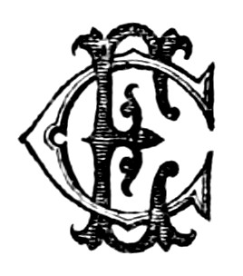

Title: O retrato de Venus e estudos de historia litterária
Author: Visconde de João Batista da Silva Leitão de Almeida Garrett Almeida Garrett
Release date: November 26, 2022 [eBook #69423]
Language: Portuguese
Original publication: Portugal: Ernesto Chardron, 1884
Credits: Rita Farinha and the Online Distributed Proofreading Team at https://www.pgdp.net (This file was produced from images generously made available by National Library of Portugal (Biblioteca Nacional de Portugal).)
XXI
O RETRATO DE VENUS
E
ESTUDOS DE HISTORIA LITTERARIA
TOMO I—Catão.
» II—Merope, Gil Vicente.
» III—Frei Luiz de Sousa.
» IV—D. Philippa de Vilhena.
» V—A Sobrinha do Marquez, As prophecias do Bandarra, Um noivado no Dáfundo.
» VI—O Alfageme de Santarem.
Camões.
D. Branca.
Lyrica.
Fabula, Folhas cahidas.
Flores sem fructo.
Romanceiro, 3 vol.
O Retrato de Venus.
Viagens na minha terra, 2 vol.
O Arco de Sanct’Anna, 2 vol.
Portugal na Balança da Europa.
Da Educação.
Helena (romance).
Discursos parlamentares e Memorias biographicas.
Escriptos diversos.
PELO
VISCONDE DE ALMEIDA-GARRETT
Terceira edição

PORTO
Ernesto Chardron, Editor
1884
Porto: 1884—Typ. de A. J. da Silva Teixeira
62, Rua da Cancella Velha, 62
[Pg 3]
[Pg 164]
[Pg 165]
Fui sempre muito pouco amigo de dar satisfações. Porém ésta minha repugnancia não é filha de presumpção, nem de orgulho. De todo o meu coração o digo, e todos os que me conhecem, o sabem. Nascem da persuasão, em que estou, de que a justificação d’uma cousa está na maneira por que essa cousa se faz. E applicando ésta generalidade ás composições litterarias, cada vez me convenço mais que os prologos, prefacios, avisos a leitores, etc. nada fazem, nem fizeram, nem farão nunca ao conceito que da obra se fórma.
E principio foi este, por que na faxada do meu poema não puz tal ceremonia. Revendo-o porem agora, examinando este Ensaio, e conhecendo-lhe infindos defeitos, que me tinham escapado; sendo-me impossivel emenda-los; resolvo-me[Pg 166] a dar satisfação; não para pretender justifica-los, e salvar-me da crítica com subtilezas, e argucias; mas para fazer confissão pública d’elles.
Se me é licito porem dizer duas palavras em meu abono, direi que tanto o poema, como as notas, e ensaio são da minha infancia poetica; são compostos na idade de dezasette annos. Isto não é impostura: sobejas pessoas ha hi, que m’o viram começar, e acabar então. É certo que desde esse tempo ategora, em que conto quasi vinte e dous, por tres vezes o tenho corrigido; e até submettido á censura de pessoas doutas, e de conhecida philologia, como foi o Excellentissimo Senhor S. Luiz, que me honrou a mim, e a este opusculo com suas correcções. Mas todos estes cuidados não puderam (emquanto a mim) tirar-lhe o vicio do nascimento.
Eis aqui a minha confissão geral. Os que me absolverem ficar-lhes-hei muito obrigado; os que não quizerem, paciencia; não me mato por isso. Comecei esta obrinha por desenfado: acabei-a por divertimento: publico-a por amor das artes: se me criticarem, rio-me, e não fico mal com ninguem.
.... while it pursues
Things unnattempted yet in prose, or rhyme.
Milt. Parad. loste: book I. V. 15.
Doce mãe do universo, ó Natureza,
Alma origem do ser, germe da vida,
Tu, que matizas de verdor mimoso
Na estação do prazer o monte, o prado,
E á voz fagueira de celeste gôso
De multimodos entes reproduzes
A variada existencia, e lh’a prolongas;
Que, no fluido immenso legislando,
Libras sem conto ponderosos mundos,[Pg 4]
Que na ellipse invariavel rotam fixos,
Ó alma do universo, ó Natureza,
Teus sacros penetraes em vôo ardido
Busco, rasgo-lhe o véo, prescruto, e vejo
Insondaveis mysterios: puro, e simples
Nunca ouvidas canções na lyra entôo.
Nua d’enfeites vãos a face amena
Tu volve ao mundo, que te ignora errado.
Qual és, qual foste, qual te apura os mimos
A arte engenhosa, tu lhe amostra e ensina.
Como é dado aos mortaes bellezas tuas
C’o divino pincel, co’as magas tintas
Estremar com primor, colher-lhe o bejo,
Sem donosas ficções meu canto ensine.
Ficções!... E aureas ficções desdenha o sabio?
A douta, a mestra antiguidade o diga.
Não; fabula gentil, volve a meus versos;
Orna-me a lyra c’os festões de rosas,
Que ás margens colhes da Castalia pura:
Flores, que outr’ora de Epicuro ao vate
C’o austero assumpto lhe entrançaste amenas,
Essas no canto me desparze agora.[Pg 5]
Venus, Venus gentil! Mais doce, e meigo
Soa este nome, ó Natureza augusta.
Amores, graças, revoae-lhe emtorno,
Cingi-lhe a zona, que enfeitiça os olhos;
Que inflamma os corações, que as almas rende.
Vem, ó Cypria formosa, oh! vem do Olympo,
Vem c’um mago surrir, c’um terno bejo
Fazer-me vate, endeusar-me a lyra.
E quanto pódes c’um surriso, ó Venus!
Jove, que empunhe o temeroso raio;
Neptuno as ondas tempestuoso agite;
Torvo Sumano desenfreie as furias...
Se dos olhos gentis, dos labios meigos
Desprender um surriso a Idalia deusa,
Rendido é Jove, o mar, o Averno, o Olympo.
Mas quanto é bello, é grato o vencimento,
Se á dor suave do pungir fagueiro,
Da ferida se encontra amigo balsamo,
E nos olhos da linda vencedora
Do ardimento o perdão brando se accolhe!
Tu, Marte, o dize, o Cyprio moço, o Teucro;
E vós, que ousais na terra imitar numes,
Que do summo prazer rompendo arcanos,[Pg 6]
N’um momento gosais da eternidade.
Emquanto nas lidadas officinas,
Forjando o raio vingador dos numes,
Vive o coxo marido sem receios,
Ja deslembrado da traidora rede;
Do Cynireo mancebo entre os abraços,
Jaz a espôsa gentil ennamorada.
Nas languidas pupillas lhe transluze
O prazer divinal, que a opprime, e anceia;
Nos inflammados bejos, nas caricias,
No palpitar do seio voluptuoso,
No lascivo apertar dos braços niveos,
Nos olhos, em que a luz quasi se extingue,
Na interrompida voz, que balbucia,
Nos derradeiros ais, que desfalecem...
Quem do prazer não reconhece a deusa
No excesso do prazer quasi espirando?
Surri-lhe ao lado o filho de travesso,
E d’entre o myrtho as candidas pombinhas
C’o estremecido arrulho a dona imitam.
Ah! se o gôsto supremo a um deus não peja,
Porquê mesquinhas leis nos vedam barbaras
Tam suave pecar, doce delicto,[Pg 7]
Antes virtude, que natura ensina!
Dest’arte as breves horas decorriam
Aos alheados, férvidos amantes;
E vezes tres rotára o disco argenteo
Trivia gentil, semque no Olympo, ou Lemnos
A espôsa de Vulcano apparecesse.
Ja na etherea mansão vagos juizos
Maliciosos forma a inveja, a intriga;
E surriso maligno ás deusas todas,
Do marido infeliz excita o fado.
Em zelosa vingança affana e freme
O despeitoso Marte; corre, voa,
E em busca da infiel vagueia o mundo.
Coxeando o segue o malfadado espôso,
Dos antigos errores esquecido:
Tal é, paixão zelosa, o teu imperio!
Eis do somno d’amor espavoridos,
Os dous amantes c’o ruido accordam.
De pavor esmorece o joven timido;
Por elle anceia a carinhosa amante,
Descuidosa de si; geme, soluça.
E do amado na dor, sua dor recresce.
Que fará?... vacillante... Adonis... Marte...[Pg 8]
O espôso... Ideias, que alma lhe confundem!
Com o amante ficar, morrer com elle?
Defender com seu peito o peito amado?
E salval-o é possivel d’esta sorte?
Deixa-lo?... Fera ideia!... Ir as suspeitas
Dos numes dissipar com sua presença?
Que! deixa-lo! o seu bem! Venus a Adonis!
Tanto não póde a mesma divindade.
Mas este só lhe resta unico meio:
É forçoso: comsigo ao carro o sobe;
Voa a Paphos, e ás Graças lisongeiras
O precioso pinhor saudosa entrega,
Que n’um basto rosal mimoso o guardem,
Velem sempre por elle, té que aos deuses
Se esvaeça o furor. Subito ao Olympo,
Composto o vulto, serenando os olhos,
N’um momento chegou: mago atractivo
Que lhe spira dos labios, das pupillas,
Do todo encantador, odios, suspeitas
Desfaz, esquece em animos divinos:
Tam pouco, ó bellas, persuadir-nos, custa!
Arde voltar ao suspirado asylo;
Mas teme a vejam desconfiados olhos;[Pg 9]
E em tanto Adonis geme, e o seu tormento
Mais que o proprio penar lhe punge n’alma.
Disenhos volve... Alfim um lhe suscita
Novo a mente engenhosa: ei-lo abraçado.
Jaz muito alem do tormentorio cabo,
(Sempiterno brasão da Lusa gloria)
Em não sabido mar, jamais sulcado,
Ilha aprazivel, deliciosa, e breve.
A mão dos homens destruidora, e barbara,
Mimos da creação não lhe estragára.
A seu grado crescia o bosque, a selva;
Vecejava sem leis o prado ameno;
D’alvas pedrinhas pelo leito amigo
Se espreguiçava o crystalino arroio,
Sem temer que impia dextra ouse perversa,
No brando curso interromper-lhe as aguas.
Prêsas não gemem fugitivas Nayas,
Nem Dryades gentis feridas choram:
Sem arte a natureza era inda a mesma.
No mais escuro do copado bosque
Ternas suspiram maviosas rôlas;
E em mais alegres sons, prazer mais ledo,
A meiga ave d’amor no arrulho exprime.
Outro vivente algum a aura fagueira[Pg 10]
Não ousa respirar. Silencio eterno
Impera na soidão, dobra-lhe encantos.
Tam suave mansão nem mesmo os numes
No ceo conhecem. Da ternura a deusa,
Só Venus sabe do recanto ameno.
Tu, do universo creador principio,
Venus! oh mãe d’amor, oh mãe de tudo!
Que amor é tudo, que só tu com elle,
Ambos creastes e regeis o mundo,
Que a natureza sois, ou ella é vossa:
Cypria, Cypria gentil, pódes acaso
Ignorar uma só das obras tuas?
«Mãe, (lhe diz, entre alegre e malicioso,
Mas compassivo, o filho), «nessa ignota
«Ilha do Indico mar...»—Um doce bejo
O concelho pagou.—Subito parte.
Lá chega; e nova se difunde a vida
Na solitaria estancia; em novos germes
O deleite, o prazer renascem, pulam.
Quam doces d’antemão gosou delicias
A mui fagueira deusa! O sitio ameno
Extasiada contempla. «Oh! quam ditosos[Pg 11]
(Clamou) «seremos! Ignorado, occulto,
Ó doce amante, viverás sem medo.
Aqui, no seio da ventura e gôso,
Nos meus braços...» Parou suspensa, e geme:
Cruel lembrança lhe assomou na mente;
Agros deveres, perfidas suspeitas,
Quantas vezes do amante hão de aparta-la!
Suspira: as rosas do prazer se esvaem
Das lindas faces niveas. Pensativa,
Melancolica, e triste... (Eis fausto agouro!)
Estremecido arrulho alvas pombinhas
Deram á sestra mão. Ah! sim: é elle:
Amor, apoz a mãe, veio ajuda-la.
«Filho (co’a voz lhe diz, que impera em Jove,
Que tam suave rege a natureza),
«Tu me feriste; não accuso o golpe:
Amo, adoro esse ferro, que me punge,
Que na chaga, que abriu, doçura entorna;
Só quero, só te peço (que não peja
De implorar-te soccorro a mãe ferida)
Derradeira mercê: oh! deixa um pouco
D’humanos corações facil conquista:
Cesse qualquer amor quando ama Venus.
A culta Europa rapido discorre,[Pg 12]
E a progenie d’Apollo, almos, divinos,
Os pintores me traze aqui n’um ponto.
Pasmou c’o rôgo inesperado o numen:
A causa inquire. «Ah! não: (lhe torna a deusa)
Não cumpre ainda revelar-t’a, ó filho;
Cubra o véo do mysterio o doce intento.»
Mal disse: e o raio mais veloz não rue
Da rubra dextra do Tonante irado,
Do que a tuba dos candidos amores
Á voz da deusa fende os ares liquidos.
Quaes voam de Minerva ao sabio clima,
Hoje torpe, e servil c’o bruto imperio:
Quaes á augusta senhora do universo;
Senhora, emquanto Roma era inda Roma:
Quaes ao paiz do mysterioso Etrusco:
Á formosa Bolonha, á gran Veneza;
Grande emquanto reinou sobre o Oceano:
Quaes á suberba Gallia, á Iberia, a Lysia;
Que de Lysia tambem, tam cara ás musas,
Da poesia a rival, a irman tem filhos.
De toda a parte a obedecer contentes
Correm ao mando de Cyprina bella,[Pg 13]
Da natura em despeito, homens creadores,
Prometheus, que á materia informe e bruta
C’o divino pincel dão fórma, e vida;
Erguem da campa gerações extinctas;
Plantam copados, que enfloream, bosques;
Co’a viva historia os homens eternisam;
E, fitando no ceo audazes vistas,
Aos pasmados sentidos apresentam
Visivel, sem rebuço a divindade.
Da fertil em prodigios, d’alta Grecia
O pae d’arte divina, Apelles marcha,
Thimante, Zeuxis, e Parrhasio, e quantos
A culta Grecia, a deliciosa Roma
Famosos produziu em sec’los d’ouro.
Cimabúe famoso apoz caminha,
Que as esfriadas cinzas animando
Do engenho, do talento, o faxo vívido
Fez na Europa brilhar, e abriu de novo
O caminho gentil da natureza
Do barbaro furor fechado, ha muito.
Aos golpes crebros, incessantes, duros
Da ferrea mão do avaro despotismo,
Sem fôrças, sem vigor jazia, ha muito,[Pg 14]
A misera Bysancio. Em surda guerra
Fallaz superstição d’infames bonzos,
Fanatismo cruel, bifronte, e iniquo,
Hypocrisia vil, perfida e dobre,
Ruina infausta lhe apressava, e morte.
Ávidos sorvos de Roman cubiça,
Da Latina ambição, riquezas, pompa
Roubado haviam insaciaveis, féros
De Constantino á côrte. Espessa nuvem
De negros vicios, de perversos crimes
Pousou medonha sobre os tristes netos
Degenerados, vis d’um povo illustre.
Crestadas, sêcas pelo sôpro ardente
Da tyrannia atroz definham, morrem
Apesinhadas as virtudes candidas;
Ao cûmulo chegou desdita, opprobrio
Dos fados teus, ó Grecia. Eis ante as portas
Da famosa cidade, audaz, suberbo
Musulmano feroz, Mahomet se ostenta.
Monstros, que o sangue do mesquinho povo
Impios bebestes, ah! tremei, que é elle:
Austero açoite das celestes iras
Sobre vós descarrega a mão divina.
Bonzos, no centro aos claustros profanados
Embalde a frente d’horridas maldades[Pg 15]
Carregada escondeis: lá vai, lá chega;
Sobre as aras d’um deus, a um deus, que ousastes,
Incençando-o, offender, lá vos immola.
Artes, sciencias, a guarida extrema,
Perdeste’-a em fim: voltai, fugí; que Hesperia
Os carinhosos braços vos estende.
Ei-las: oh! folga, venturosa Europa.
Lá cai a pouco e pouco em terra o throno
Da barbara ignorancia: as trevas do êrro
Vai accossando da verdade o faxo.
Arte divina, magica pintura,
Foragida tambem, thesouros, mimos
Vens espalhar na mui ditosa Italia.
Italia! oh! folga: Raphaeis ja pulam.
[Pg 16]
FIM DO CANTO PRIMEIRO
[Pg 17]
Mas eis, distinctos esquadrões formando,
As escholas assomam; reina entre ellas
Vivaz emulação, que gera os sabios:
Vão-lhe na frente os affamados chefes,
Que a patria honraram c’o pincel divino.
No bello antigo modelando as graças,
Que em mais sabio pincel, mais bellas surgem,
A frente airosa sobre erguendo ás outras,
Vem tribu excelsa dos Romãos pintores.
Deram-lhe o grau supremo ardua sciencia
Das attitudes, d’expressão, verdade,
De audaz composição, nobre elegancia,
O correcto desenho, e puro, e grave,
E quanto inspira Apollo ás almas grandes,
Em extasi sublime altas ideias.[Pg 18]
É filho seu (que mais sobeja glória!)
Raphael, o divino, o mestre, o numen
Da moderna pintura, eterno brilho,
Que os Apelles offusca, e Roma, e Grecia;
Que, as barreiras transpondo á natureza,
Olhou de face a face a divindade,
E as glórias do Thabôr fez ver ao Tybre,
E aos d’arte amantes desejar com Pedro
Junto ao prodigio habitação ditosa.[1]
Julio o mestre imitou, foi digno d’elle:
Forte, ardida expressão lhe anima os traços,
Que ás proficuas lições dão glória e lustre.
Em cêrca aos muros da gentil Parthénope,
Onde aprimora a natureza os mimos,
E a voz do creador soou mais bella,
Onde, entre montes de sulphureas cinzas,
Umas sobre outras, as cidades jazem,
E a rôdo os d’atro fogo horridos rios
A poeticas ficções dão ser terrivel;
Alli, silencio eterno ergueu severo
Religiosa mansão; firmou-lhe as bases[Pg 19]
Austera, descarnada penitencia.
Sobre as azas do ingenho, á voz d’um numen,
Vigoroso, expressivo Spanholeto,
Lá foste, e a assomos do pincel terrivel
Em longas vestes surgem, pulam, vivem
Fatidicos anciãos; ás portas velam
Da estancia outr’ora silenciosa, e sancta.
E quando atroz, hypocrita veneno,
Lavrando a furto sob o sacco, e cinza,
Os muros profanou, que ergueu virtude,
Inda no mesto panno afflictos suam;
E a gloria do pintor fulge entre o crime.[2]
Fostes, como elle, heroes da arte divina,
Polidoro gentil, vivaz Fattore,
Saliente Caravaggio, que exprimiste,
Senão bella, fiel a natureza.
Nobre, altivo Cortona, quanto vivem
Scenas famosas da nascente Roma!
Nas mães trementes, pallidas filhinhas,
Ve como a mesma dôr redobra encantos![Pg 20]
E o fero aspeito dos Quirinos Martes,
Onde a furto da glória amor scintilla!
Ah! proximo o prazer vai dar ao mundo
Prodigios de valor, extremos d’honra,
Prole Romana... Eis o universo em ferros.[3]
Amavel, terno Sacchi, a ti surriram
Do mago cinto de Erycina as graças;
Meigos, suaves dons te esparzem n’alma,
Que nos quadros gentis reflectem doces.
Belligero Cerquozzi avulta aos olhos
Brandir no panno, lampejar mil ferros,
E aos roucos sons da sanguinosa guerra,
Entre as phalanges baralhadas rôtas,
Entre abysmos d’horror alçar-se a morte.[4]
Quam magos fulgem divinaes, sublimes,
Maratti encantador, facil Giordano,
Mimoso Dolce, e vós, que á nova Roma
Ingenhos tantos, insondaveis, grandes,
Por guerreiros tropheos, suberbos róstros,
Triumphos cem do ovante Capitolio,[Pg 21]
Dais, se menos viril, menos heroico,
Ornamento gentil, belleza, encantos.
Ja de acurvados reis não brilha o fasto
Da escravidão contentes; não se antolha
Em cada senador um nume, um Jove.
Ja nas praças, nos templos não campeiam
Os despojos do mundo; o Circo, o Fóro,
Prodigios d’arte, da opulencia, e luxo,
Da barbara ignorancia ás mãos cederam.
Cheio de Livio o viajante absorto
Não ve do Capitolio a frente erguida
Torreada avultar com ferros cento,
Não ve povo d’heroes girar-lhe entôrno;
Da inesp’rada mudança pasma, e geme,
E no centro de Roma a Roma busca.
Porem, se amiga mão lhe guia os passos,
Se o Vaticano e mil prodigios nota,
Que do antigo explendor moderam fama;
Então Roma conhece, então venera
Nobres resquicios de gloriosos évos.
Taes da moderna Roma os filhos iam
Por travesso menino conduzidos;
E d’altiva belleza ornada a frente,[Pg 22]
A magestosa, Florentina eschola
De perto os segue: no atrevido ensejo
Parece disputar-lhe o grau supremo.
Co’a sublime expressão, desenho ardido,
Gigantesca maneira, audaz, mas bella,
Se antolha ennobrecer a natureza.
Brandas graças d’amor, ternura, encantos
Feroz desdenha; só lhe avulta á mente
O nobre, a pompa da ideal grandeza.
Não foi sobre o Synai mais formidavel,
Que d’Angelo entre as mãos, Moysés terrivel;
Nem lá no extremo, derradeiro dia
Julgamento final será mais horrido.
C’o deus, que o peito vos perturba, anceia,
Mais pavorosas não rugís, Sibylas.
Da mão nervosa cada traço é raio,
Que espanta os olhos, que deslumbra a mente;
Que enxofrado clarão, medonhas larvas
Em todo o horror do Averno ostenta horrivel;
Que, se um deus pinta, é do castigo o numen,
Que em longa geração pune um só crime,
O deus, que no deserto, entre os relampagos,
Entre o rouco estampido das trombetas,
Pela voz do trovão legisla ao mundo.[Pg 23]
Eis, desdobrando hydraulicos segredos,
E as mechanicas leis com sabia dextra
Movendo a seu sabor, á glória sua,
Vinci tam caro aos reis, de o ser tam digno,
Seu correcto, purissimo desenho,
Engenhoso compor o eleva aos astros,
Aos astros, onde fôra em vôo ardido
Os pinceis escolher, buscar as tintas,
Com que d’ultima ceia debuxára
Amor, transportes, mysteriosas scenas.
Ah! gire o teu prodigio o mundo inteiro;
E de grado a razão cede ao mysterio.
Côres roubando á natureza, e mimos,
Bello como ella, o inimitavel Porta
Ao gelado silencio de ermo claustro
Chamou das nove irmans o chôro arguto.
Urbino o conheceu; e o sceptro augusto
Curvou ante elle; e, confundindo os raios,
Os dous d’alma pintura astros brilhantes,
Sem negro eclypse, scintillaram juntos.
Vens, ó Sarto, apoz elle, ameno, e brando;
Vens, Peruzzi gentil, fertil Pantorma,
Que ao nobre assômo do pincel nervoso,[Pg 24]
C’o doce encanto das mimosas tintas
Fizeste a Raphael, a Buonarrotti
D’arte a coroa estremecer na frente.
Sec’los famosos d’Alexandre, e Augusto
Na Italia renovou macio Allori;
E as meigas cores do pincel Lombardo
Quasi Ciogli usurpára ao grão Corregio.
Ah! veda a musa, e pequenez do ingenho
Seguir-vos todos, divinaes pintores:
Segura a fama vossa alteia a frente,
E o vate ao longe vos contempla os vôos.
Gentil Bolonha, que na Europa barbara
O faxo das sciencias accendeste,
Que o Gothico stupor tiraste ás artes,
E as cinzas da virtude apesinhadas
Por sanctos crimes de sagrados monstros
C’um Benedicto consolaste em Roma,
Eis vem dignos de ti, teus sabios filhos,
Numerosa familia, antiga e nobre,
Que o mel das graças delibando férvida
Em quantas flores produzíra Apollo,
Nobre desenho modelou no antigo,
Á natura usurpou vivaz belleza,[Pg 25]
E o mago, o puro dos gentis contornos,
A verdade, a expressão, o rico d’ordem,
E o colorido inimitavel, bello,
Que emparelha com a arte a natureza.
Assim brilhou divino o gran Corregio,
Assim Francia gentil, assim Mantegna,
E Bolognese vigoroso, e forte;
E tu, que o terno amor, e seus encantos,
Simplices graças da natura virgem,
Da innocencia infantil o mimo, os jogos,
As singelas beldades exprimiste
No mavioso pincel, mavioso Albano.
Nem deslembre de Guido a fertil mente,
Talento universal, vago, mas bello...
C’a expressão de Zampieri ordem, nobreza,
Ve d’Agnese gentil a ardua constancia
Como os p’rigos desdenha, e ve risonha
Ja do ferro do algoz pender-lhe a morte.
Ferino aspeito dos ministros barbaros,
Da augusta religião viril triumpho
Aos engolfados olhos se apresenta,
E, arrebatando o esp’rito a deus, ao vate,
Um prodigio a prodigios amontoa.[Pg 26]
Ve Guerccino tambem, que ora nervoso,
Ora sombrio, e fero, e terno outr’ora,
Mas sempre encantador, em cada rasgo
C’um portento de mais a arte enriquece.
Qual vira a Palestina o pae dos crentes[5]
De fe, de submissão dar nobre exemplo;
Tal vive no pincel, tal inda avulta
Co’as veneraveis cans, e honrado aspeito.
Misero velho! desgraçado infante!
Que! tu mesmo, infeliz! co’a mão paterna
Hasde cortar-lhe o fio á tenra vida,
Unica esp’rança de cançados annos,
De mui doces promessas? Como... ai triste!
Oh! como voltará sem elle á tenda?
Com que olhos fitará maternos olhos?
Com que voz lhe dirá?... Mas parte: e a dextra
Ja, ja quasi... Suspende: um deus o ordena;
Um deus é pae tambem: suspende o crime:
São leis da natureza as leis divinas;
Em premio da tua fe recebe o filho.
Ah! se ao nome Lombardo é pouco tanto;
Eis triplice ornamento á patria, ao mundo,[Pg 27]
Doutos Caraccis, que o divino ingenho,
Ou co’a dextra gentil ornando a Italia,
Ou dando á juventude almos preceitos
Da arte formosa, perpetuando-a aos évos,
Nova, estremada lhe augmentáram glória.
[1] A transfiguração de Raphael.
[2] Quadros dos prophetas por Spanholeto, na Cartucha de Napoles.
[3] O roubo das Sabinas por Cortona.
[4] Pintor de batalhas.
[5] O sacrificio de Isach, quadro famoso de Guerccino.
FIM DO CANTO SEGUNDO
[Pg 28]
Musa, deixemos a mansão terrestre,
Sobre o infido elemento estende os vôos.
Eis sobre as ondas c’o pincel divino
Maga pintura, legislando ás vagas,
Enfreia as iras de Neptuno indomito.
Ve d’Adria o gôlpho tempestuoso, e fero
Á voz da liberdade agrilhoado.
Surge do seio das domadas aguas
A cidade gentil: pasmou de ve-la,
E corou de vergonha a natureza.
E a mão do creador, ao ver confusos,
Baralhados antigos elementos,
Se ao homem, que os trocou, não dera a vida,
Quasi, quasi um rival temêra nelle.
Alli, fugindo aos clamorosos brados,[Pg 30]
Ao jugo, á servidão da tyrannia,
Homens, poucos, mas homens, começaram
Com ância a defender sacros direitos.
Emporio foi depois do rico Oriente,
E do alado leão tremeu gran tempo
O atrevido colosso Mussulmano.
Hoje (ideias de dor, lembrança amarga!)
Da poppa olhando o navegante ao longe:
«Veneza aquella foi»—exclama, e geme;
E segue a esteira das cortadas ondas.
Veneza foi: compridas, longas eras
Foi a patria d’heroes, foi mãe de sabios;
E as dadivosas musas lhe outorgaram
Egregios filhos, que o talento, as vidas
Á formosa sciencia consagraram;
Que imitando fieis a natureza,
Olhos seduzem, e deleitam alma,
Que nos toques graciosos, na belleza
Da gentil invenção, doce magia
Do claro-escuro, rico invento d’arte,
Aos mais sabios pinceis não cedem nada.
Deusa, acode á avidez, que o vate enleia,
Fere nas cordas da estremada lyra[Pg 31]
Dos famosos varões o nome e os dotes:
Dize a Ticiano, dize quaes natura
Lhe entornou dadivosa encantos simples,
Que, ou arte ignoram, ou subtis a escondem;
Ja d’humanas feições transsumpto exacto,
Ja co’as nativas côres exprimindo
No ingenhoso pincel tudo o que existe.
Adriades gentís, oh! vinde, as frentes
Coroadas de dor, na campa avara
Humido pranto derramar saudoso!
Ai do triste mancebo! o fado iniquo,
Só por chora-lo, o concedêra ao mundo!
Oh! com quanta expressão, nobre altiveza
Castel-franco brilhou, fulgiu mais que homem!
E tam breve lhe deu a sorte a vida!
E no fuso cruel a Parca dura
Um fio tam gentil fiou tam curto!
Oh! suspendei as lagrimas formosas:
Longa carreira os ceos marcaram próvidos
Aos dous Bellinis, venerandos chefes
Da nomeada eschola; á glória vossa
Vivem padrões eternos; Piombo illustre,
Que a fama ousou balancear d’Urbino;[Pg 32]
Pordenone inventor, de quem Ticiano
Temeu roubadas as divinas côres;
Completo Palma, a quem mostrou natura
Sempre formoso o variado aspeito;
Animado Bassano verdadeiro;
Fertil, e vivo Tintoreto rapido;
E tu, Paulo gentil, delicias, mimo
Dos voluptuosos olhos da donzella;
(Mui grato enlêvo do insoffrido amante)
Qual Verona folgou com seu Catullo,
Tal comtigo: mil graças, mil encantos
Sem mysterio, sem véo te deu, lhe dera
Nua de pompas vans, a natureza:
Seu renome inda vive; e o teu com elle,
Emque lhe péze á inveja, e seus furores,
Hade eterno brilhar. Assim raivosas,
Frustradas gralhas invejosas grasnam
Á ave olympia de Jove; e entanto os vôos
Ella ao sol remontando, as mofa, e burla.
Porem mais longe da rinhosa Hesperia
Voltemos a attenção: ve como em Flandres,
Scena outr’ora infeliz da glória Franca,
Da Cypria deusa demandando a estancia
Vai turba immensa dos rivaes d’Italia.[Pg 33]
As graças naturaes, singellas, puras
Á porfia a accompanham: não se enfeita
Por suas mãos a simples natureza:
Em loução desalinho bella, e nua
Mimos lhe outorga, que ella só conhece,
Que a vós é dado só, magos pintores,
Com arte ignota do universo ao resto
No pincel exprimir fiel, divino.
Prodigios fallem de Van-Eick famoso,
Do correcto, vivaz, firme Duréro;
Dize-o por todos; se inda alguem no mundo
Ignora tanto, que te ignore os dotes;
Fertil, brilhante, verdadeiro Rubens.
Rubens! Oh nome! Ó filhas de Memoria,
Vós, que no Pindo entre o verdor mimoso
Lhe bafejastes divinal espirito,
Quando, librado sobre as azas d’ouro
De sublime, elevada allegoria,
Viu, pintou... Ah! fez mais: creou, deu vida
A chymericos entes, vãos, mas bellos,
Que o vivo imaginar lhe debuxara.
Quam doce, e meiga a enternecida Venus
Com suspiros, com ais, com ternos bejos
Tenta a furia applacar, retter nos braços
Gradivo impaciente! Olha do monstro[Pg 34]
O torvo gesto, o faxo sanguinoso...
Ella!... a guerra cruel! a horrivel frente
Co’a máscara da glória esconde ao numen,
E o veneno lethal lhe infunde n’alma.
Lá baqueia de Jano o templo augusto;
As artes, as sciencias calca o monstro;
E a d’auradas espigas, rubros pomos
Gentil coroa á agricultura arranca.
Ternura, horror, assolação, belleza
Com portentosa mão juntaste, ó Rubens.[6]
Quam bello é na expressão Vaén correcto!
Hólbein sublime, vigoroso, nobre!
Van-Rin saliente, harmonioso, e doce!
Quam firme é Wanderwérff singello, e puro!
E tu, mimoso Van-Dernér, que em Gnido
Bebeste as graças, possuiste os risos.
Ah! ja cançada se me affrouxa a lyra:
Rouca, e sem voz mal associa ás cordas
Difficeis nomes de estremados mestres.
Um por tantos direi; e o nome illustre
Te baste, ó Flandria, a coroar-te a gloria:[Pg 35]
O bello, o simples, verdadeiro, e grande,
Do mestre a obra maior, Vandick insigne.
Mas, qual ruido, que tumulto, ó musas,
Do Pindo a sacra paz impio disturba?
Quanto vivem!... Que heroes da patria raios!
Armas! guerra! o furor! o sangue! a morte!
Destrôço! horror! assolações! ruinas!
Eis dos Alpes franqueado o gêlo eterno;
Nada resiste: c’o rugido extremo
Baqueia exangue de Pyrene a fera.
Co’a Europeia ruina Africa nuta,
Asia treme; e nas praias de Colombo
A fugitiva liberdade apporta.
A longes terras se accolheu Minerva,
Sem rumo as artes desgrenhadas fogem,
A Roma de Catão, d’Augusto a Roma
Não é de Pio a effeminada côrte;
E em vez d’um Fabio tardador, d’um Quincio,
D’um Bruto, um Manlio; prostituta prole
No deshonrado Capitolio avulta.
Quem, bellezas d’Italia, hade amparar-vos?
Quem!... Animos cobrai; volvei sem medo
Artes, sciencias: já no Sena ovante[Pg 36]
O proprio vencedor no seio amigo
Vos accolhe, e accarinha, e no alto alcaçar
Augusto solio perenal vos ergue.
No Sena ovante (oh do porvir assombro!)
Em quanto os filhos seus, terror do mundo,
Raios desferem, que o universo atterram;
Renasce mais gentil, vive mais fúlgido
O sec’lo de Luiz; succede á velha,
Á pedante Sorbona, almo Instituto.
Eis novos Raphaeis, arte divina!
Não lamentes Poussin, Gallia ditosa,
De Mignard, e Blanchard divinas côres,
De Lebrun a expressão, fieis costumes,
Paizagens de Lorrain, maga ternura
Do voluptuoso, encantador Santerre,
Grandioso stylo do vivaz Subleyras:
Teus modernos heroes excedem tudo;
E ao seio da opulencia amamentados,
Á voz da glória redobrando exforços,
Talvez irão com denodado arrôjo
Do solio d’arte derribar a Italia.
Se, entre barbaras mãos gemendo outr’ora,
Devêste a Belisario a vida, ó Roma;[Pg 37]
Se das furias crueis d’horrida guerra
O juramento te isentou d’Horacios;
Se quanto foste em gloriosas quadras
A um necessario roubo, á paz, que o segue,
Ao ferro audaz de Romulo devêste;[7]
Treme d’elles agora, treme, ó Roma;
Que no heroico pincel David illustre
As cinzas lhe animou; marcham por elle
Tua fama a conquistar, roubar teus louros:
De Urbino, e Buonarrotti o throno prostram;
Eis campeia David!—Não longe d’elle
O terno Girodet, suave, e brando,
Que, do Meschacebeu vingando as margens,
C’o vate insigne emparelhou nos vôos,
E na pasmada Europa ergueu d’Americo
As pomposas florestas, e a nobreza,
Ornamento feroz d’um mundo virgem:
Que os encantos d’amor, e os seus furores,
O podêr da virtude, e os seus exforços
Dignos d’elle exprimiu, e fez de novo
Olhos sensiveis afogar em pranto.
Eis á voz de Gérard das campas rompem[Pg 38]
Extinctas gerações: Saturno as azas
Indignado encolheu, e a prêsa antiga
Viu roubar-lh’a o pincel, quebrar-lhe os éllos
Da impreterivel, perenal cadeia.
Ruge fremente o mar, bramindo, e ronca
Nas oucas rocas, nas quebradas fragas
Do tormentorio mar... Lá se ergue ingente,
E immenso troa o colossal gigante.
Treme d’entôrno o mar, e a terra, e o mundo;
E a voz, que os polos com fragor desloca,
Pela primeira vez á gente Lusa
Pallida imprime a sensação do medo.
Só impavido, um só, Vasco lhe arrosta:
Pasma a ousadia d’um mortal a um nume.
Oh lagrimas d’Ignez, sangue innocente,
Correi, correi do milagroso panno;
E em lagrimas de sangue o applauso eterno
Aos vates recebei, aos vates ambos.
Oh Gérard! oh Camões! qual mão divina
Vos uniu, vos juntou? Oh! folga, ó patria![Pg 39]
E tu, Sousa immortal, grata homenagem
Recebe eterna da mui grata Elysia.[8]
Ve nas mãos de Guérin qual geme e anceia
Pincel, que hervou na dor, que embebe em pranto,
Que incestos, crimes (de Trezena horrores)
C’o Euripides Francez disputa ainda.
Quem de pavor, de compaixão não gela
Ao ver nas murchas, esmyrradas faces
Da bella ainda, miseranda Phedra
Surgir do panno, que as conter mal póde,
D’um criminoso amor, violencia, e fogo?[9]
Guerreira a mente de Vernet fulmina
Os raios de Mavorte, o horror das armas;
E sobre os quadros de Le-Gros famoso
Os manes folgam de Rollin, Voltaire.
Mas tanta glória inda não basta, ó Francos,
Para o completo, universal triumpho:
Que no Ibero pincel inda refulge
O nome de Ribera, o de Murillo,[Pg 40]
E duvida d’Albion mosqueada fera,
Vaidosa d’West, conceder-te a palma;
Inda lhes guardam justiçosas musas
No bifido Parnaso um grau distincto.
Assim quando no ceu, callada a noute,
Candida brilha sup’rior Diana,
Se com menos fulgor, astros com tudo,
Gentis avultam nitidas estrellas.
[6] Quadro allegorico da guerra por R.
[7] Quadros celebres de David.
[8] Celebres pinturas de Gérard na edição dos Lusiadas pelo Sr. José Maria de Sousa.
[9] Pinturas de Guérin tiradas de Racine.
FIM DO CANTO TERCEIRO
[Pg 41]
Eia! colhamos as cançadas vélas,
Musa: o filhinho da amorosa Venus
Ja pelos ares liquidos se entranha,
E ledo corre co’as donosas tribus
Dos illustres rivaes da natureza.
Da Europa toda ja voaram férvidos
Da voz ennamorada ao som fagueiro,
Só Lysia falta... A minha Lysia, ó Venus!
A patria dos heroes, a mãe dos vates,
A patria de Camões, do teu Filinto!
Onde a voz de Bocage, a voz de Gomes
Sempre em teu nome resoou na lyra!
Onde a teu culto, mais que em Roma, ou Grecia,
Em cada coração se eleva um templo!
Lysia, de Venus esqueceram filhos![Pg 42]
Ah! volve os olhos immortaes, divinos,
Aos seculos remotos; ve no Tejo
Como entre as sombras da ignorancia Gothica
Brilham nas trevas Lusitanas tintas;
Ve do gran Manoel na épocha d’ouro
Sobre as bellas irmans como se eleva
A divinal pintura; ve mais perto,
Em quanto geme c’o ferrenho jugo
A flor, a augusta das nações princeza,
Erguer das ruinas sobranceira a frente;
E alfim nas quadras que marcara o fado
Ao brio Lusitano extremo exforço;
Calcando a juba de Leões gryfanhos,
Parando ás Aguias remontados voos,
Como á porfia sobre o Tejo e Douro
Apelles mil e mil revivem, fulgem;
Brilha o Luso pincel... Ah! se aura amiga
Continúa a soprar... Não; ferrea pésa
A mão do despotismo, opprime, esmaga,
Destroe renovos das mimosas artes.
Mas qual ouço confuso borborinho!
E sois vós! Ah! perdoa, alma Erycina:
O teu povo fiel tu bem conheces;
Nem chama-lo cumpria: é-lhe sagrada,[Pg 43]
Inviolavel lei um teu desejo.
Ei-lo corre: que luz, que ethereo brilho
De louro e rosas lhe engrinalda as frentes!
Olha entre a nevoa de allongados évos,
De atroz barbaridade embrutecidos,
Como Alvaro rebrilha, um Nuno, um Annes,
E do energico Vasco a fertil mente;
E Duarte, e Gomes tam famosos ambos,
Tam caros ao gran rei, Manoel ditoso.
Ve do illustre Resende a mão facunda,
Trocando a penna, que mandara aos évos
Os feitos dignos de perenne historia,
Pelo arguto pincel; o sabio Carlos,
Que ao divino Correggio usurpa as cores;
Dias, que á patria transportara ovante
O mel, e as graças dos famosos mestres;
Harmonioso Christovão, claro Sanches,
Que os monarchas d’Europa inteira vira
D’honras, de bens, accumulá-lo anciosos.
Eis sobre as azas de elevado arrojo
Vinga altivo Campello o cume erguido
Dos montes de Judá. La surge, e avulta
No mysterioso panno um deus, um homem.[Pg 44]
Pasmou a natureza ao ver confusos
No seio maternal o pae e o filho.
Mago pintor lhe renovou prodigios;
E aos tormentos d’um deus tremeu de novo
A longa serie dos criados mundos.[10]
Sensiveis corações, vinde espelhar-vos
Nos ternos quadros, que sagrou virtude;
Vinde á sombra do vate, ao seio augusto
Da sancta religião, da mãe caroavel
De humanas afflições verter o pranto:
Vinde; e entre a dor vos surgirão prazeres,
Prazeres do Christão, doçuras d’alma.
Quanta glória Fernando ao sabio mestre,
Quantos louros grangeou! Lopes sublime
Juntou d’Urbino aos expressivos rasgos
A ardideza gentil d’Angelo altivo.
Vasques douto, e regrado os traços mede
No exacto petipé da natureza.
E tu, Leonor, d’entre a nobreza e fasto,
Origens sempre de brutal inercia,
Soubeste ás artes levantar o espirito.
Qual do Luso pincel nos fastos vive.[Pg 45]
Hollanda creador! Deusas do Pindo,
Eis novo esmêro vosso, invento novo!
Vastos arcanos da pintura se abrem,
Accumulam-se a rodo almos tesouros;
Graças lhe admira o árbitro da Europa,
E na boca dos reis louvores fulgem.
Hollanda venturoso! Ah! de tuas ditas
Taes as menores são: mais déste ás musas,
Mais a ti, ao teu nome, á patria, ao mundo
No filho, o grande filho, a glória nossa,
Mimo ao patrio pincel do numen louro.
Cedendo á voz d’um deus, que o chama a nome,
O Cicero Africano erros abjura;
Sancto prelado o omnipotente invoca,
E d’agua exulta candido Agustinho.
Portento d’expressão, viva faisca
Do lume eterno, que lhe ardeu na mente.
Vate!... Ah! não vate: um anjo, um deus te guia,
Move o arguto pincel na sabia dextra.
Do Olympo eis surge a magestade, a pompa;
Olha d’Ambrosio o venerando aspeito,
Os olhos, onde em goso alma trasborda,
D’Agustinho a humildade, e o gesto vívido,
Onde a força transluz d’activa mente,[Pg 46]
Da eloquencia viríl, saber profundo.[11]
Pereira natural, severo e forte
O terrivel pincel por entre ruinas,
Entre chammas e horror meneia ardido.
De novo a cinzas reduzida Troia
Por elle foi; por elle Pyrro ingente
C’o faxo assolador vagou por Illion.
Antolha ouvir-se em pavidos lamentos
O confuso ulular da mãe, que espira,
E no extremo bocejo aperta os filhos,
Do pae tremente, que a rugosa face
Entre o seio da filha esconde, e geme,
E quizera morrer no doce amplexo.
O crepitar das estridentes chammas,
O baquear dos templos, dos palacios,
E quantas vozes de terror, d’espanto,
Quantas scenas d’horror cantaram vates
Nas Gregas cordas, Mantuana lyra.[12]
Elementos, cedei-lhe ao mago encanto
Das vozes do pincel! Stridentes rompem[Pg 47]
Com ruidoso estampido as cataratas;
Confunde a natureza a essencia, os termos,
Na face do universo impera a morte,
Mysterioso baixel ao longe avulta;
E de novo o castigo formidavel
Os olhos da razão cega d’espanto.[13]
Olha como apoz elle vem seguindo
Valle expressivo, delicado e grande,
Nobre Gonçalves, entendido e ornado,
Rebello audaz, o Buonarrotti Luso,
E as do patrio pincel divinas Saphos,
Ayalla, e Guadalupe, e Ritte, e Browne,
E Luiza gentil, que os sabios tempos
Ao Porto renovou da Grega Aspasia.
Fastoso monumento d’alta Iberia,
Voragem, golphão, que absorveste os rios
Do precioso metal, que a ti correram
Do Chily, e Potozi, das Indias duas,
Soberbo Escurial, onde se aninham,
Sob apparente sacco o vicio, o crime,
Tu de Claudio por mim celebra o nome,[Pg 48]
Do Camões da pintura, a quem deveste
De teus ornatos o maior, mais bello.
Nem sorva o Lethes de confuso olvido
Victorino engraçado, André mimoso,
Verdadeiro Apparicio, simples Barros,
Vivaz Alexandrino, destro Senna,
Barreto original, brando Oliveira,
E tu, Rocha correcto, ameno e vívido,
Que obscuras scenas da marinha Pathmos,
E o confuso vêdor nos exprimiste.
Olhos em alvo, mysteriosos seguem
Prophetico furor, que o volve e agita.
Na dextra a penna mal segura fórma
Nunca entendidas, enredadas notas.[14]
Terra fertil d’heroes, solo fecundo,
Salve! Eis novo clarão, eis novos louros
Sobre a frente gentil pululam, vivem!
Eis do patrio esplendor eterna gloria,
Raios de Lysia, que a remotas praias,
Do magico pincel nas azas d’Iris
Levaram em triumpho o Tejo e Douro,[Pg 49]
Dous Vieiras! Não ousa a minha lyra
Dotes brilhantes numerar nas cordas:
Assaz por meu silencio o dizem, cantam
Lysia, Hesperia, Britania, Europa, o mundo.
Dest’arte á voz da meiga Cytherea,
D’amor guiados, sobre as azas do éstro,
Rapidos voam num momento, e chegam:
Pasmam de vêr a face á natureza,
Tam bella e simples qual na infancia ao mundo;
Os bosques entram: no matiz do prado
Vão com delicia apascentando os olhos.
Eis outeiro gentil se eleva á dextra;
Sobre elle... Assombro quem já viu, que iguale
Dos illustres varões subito assombro?
Amor, o mesmo amor parou de espanto,
De maravilha subita cortado.
Sobre altas se ergue Doricas columnas
De fino jaspe cupula suberba.
Brilha c’o azul do ceo linda saphira
Nos capiteis, nas bases. Das cornijas
Scintilla em fogo do carbunculo a chamma.
Mimos, riquezas de pomposo fausto,[Pg 50]
Quantas com larga mão semeou profusas
Nas entranhas da terra a natureza,
Na vastidão dos mares; tudo aos olhos
Extasiados se ostenta. Riu do encanto,
E a causa do prodigio amor conhece:
Entra; e apoz elle os estremados chefes.
Languidamente o braço repousado
Nos hombros niveos do formoso Adonis,
Ei-la ao encontro a deusa da ternura
Lhes sai, e assim lhes falla: «Ésta, que vêdes,
Consagrada ao prazer, mansão ditosa,
Ergueu á minha voz a natureza.
De per si se puliu, lavrou-se o marmor,
E se entalharam gemmas. N’um instante
Meu doce intento completado houvera,
Se o que vós só podeis, dar-lhe eu pudera.
Frio, e sem vida não me falla ao peito,
Não falla ao coração todo esse esmêro.
Oh! cortai-lhe a mudez, dai-lhe existencia,
E c’o mago pincel tornai-o á vida.»
Disse: e a divina voz do ouvido aos peitos
Chammas d’estro, e de ingenho accende aos vates;
E em breve espaço divinaes assomos[Pg 51]
D’aqui, d’alli se apinham. Clio alteia
Com portentosa mão contados feitos;
Alem da natureza o vôo erguido
Alça a maga, gentil Alegoria;
Desalinhada, rustica beldade,
Singella, e pura a Paizagem doce
Sem mysterio, sem véo candida ostenta.
Ja vida é tudo; satisfeita a deusa
Vai alfim completar os seus intentos;
E c’um meigo surrir, c’um doce agrado,
Que vale tanto, que enamora tudo,
Assim lhes falla a carinhosa Venus:
«Vinde, ó filhos; que um nome tam suave
Vossos dotes merecem; vinde: e a empresa,
Que na mente revolvo, effeituai-me.
Não mando, peço... (Ah! d’uma bella o rogo
Quanto mais vale, que uma lei d’um nume!)
Retratai-me, ó pintores.» Nisto a deusa
O mimoso sendal, ja pouco avaro
Do thesouro, despiu. Quantas bellezas,
Que divinos encantos não descobrem,
Não pesquizam, não vem avidos olhos!
Sonhos da phantasia, ah! não sois nada!
Guindado imaginar, ideal belleza,[Pg 52]
É frouxo o vôo, limitado o arrôjo;
Não tenteis franquear mysterios tantos.
Cai das mãos o pincel, sem que o percebam,
Aos pintores na vista embevecidos;
No Olympo os deuses, ignorando a causa,
De insolito prazer sentem banhar-se.
A natureza inteira revolveu-se;
Sonhada Pythagorica harmonia
Nas espheras soôu mais branda e doce.
Aos entes todos pelas veias lavra
O incentivo do gosto: gemem ternas,
Que ha pouco uivaram, pelo bosque as feras;
Arrulharam d’amor meigas pombinhas;
Correu á esposa o nadador salgado;
E nos olhos da amante leu ditoso
O constante amador perdão á culpa;
Á doce culpa tam querida e bella!
Ah! muitas vezes não descubras, Venus,
Magos encantos; ou verás que em breve
Á força de prazer se extingue o mundo.
Ja do extasi accordada um pouco a turba
Dos vates se prepara ao doce emprego.[Pg 53]
Tintas fornece amor, pinceis as graças;
E eis no panno avultando a pouco e pouco
Assomos divinaes!... É ella... é Venus!
Eis a fórma gentil do corpo airoso
Salta, deslisa o fundo apavonado;
Roseos descurvam, se arredondam braços;
Ondeiam n’alva frente as tranças d’ebano;
Doce brilham d’amor os olhos meigos,
Os meigos olhos, que prazer scintillam,
Que o facho accendem dos desejos soffregos,
E contra o debil resistir do pejo
Do atrevido mancebo a audacia imploram.
Nas lindas faces purpureia a rosa,
Que insensivel esvai na côr de neve;
Surri nos labios o delirio, o encanto,
Que importuna razão tam doce affasta,
Que ávidos bejos, deliciosos, ternos,
Annuncios de prazer, mutuam fervidos.
Despontam no alvo, crystallino collo
Os arcanos d’amor, que anceiam d’elle,
Que a furto ousaste, mui ditoso Anchises,
Nas trevas do prazer palpar ardido;
Formosos pomos, que ao pastor Idalio
Pelo tam cubiçado outr’ora déste...
Déste; que bem o sei: (não te envergonhes)[Pg 54]
Era pobre o pastor, e os seus thesouros
Juno lhe franqueou, seus mimos Pallas:
Sem troca tam gentil tu não vencêras.
Mas quanto voa nas mui sabias dextras
O divino pincel! Que eburneas fórmas
Voluptuosas surgir das tintas vejo!
Que exactas, lindas proporções esbeltas!
Que norma tam gentil as regra, as mede!
Ja, por milagre de Cyprina, é prompta
N’um momento a grande obra. Ei-los de novo
Á vista do retrato absortos, raptos,
E, novos Pygmaliões, por elle anceiam.
De transportada a deusa ao doce amante
Nas mãos a entrega; e: «Esta (lhe diz) conserva
Copia fiel da tua amada Venus.
Com ella, ausente, ó caro, te consola,
Quando longe de ti me retiverem
Crueis deveres, perfidas suspeitas.»[Pg 55]
Admira o joven a belleza, as graças
Do mimoso traslado; beja, e rega
Com lagrimas d’amor qual um, qual outra.
Co’elle, em quanto viveu, sempre abraçado
As poucas horas, que ficava ausente,
Mitigava a saudade: e quando a morte
O mancebo infeliz roubou sem pejo,
No templo a deusa o collocou de Paphos,
E longas eras recebeu d’amantes
Ternas off’rendas, amorosos votos.
Alli, quando natura se empenhára
Em dar-te ao mundo, carinhosa Annalia,
Um e um copiou meigos encantos,
Que, ó minha Venus, te compõe, te adornam.
Alli, olhos no quadro, os teus formosos
Estremada rasgou; alli as faces
De neve, e rosas coloriu divinas;
Alli risonha boca, onde contino
Foi aninhar-se amor, te abriu mimosa;
Alli o collo d’alabastro puro;
Os lacteos pomos, que devoram bejos[Pg 56]
Do faminto amador; lisas columnas,
Que sustentam avaras mil segredos;
Segredos, que... Perdoa: eis-me calado.
Volve a meus versos, compassiva amante,
Benignos olhos: para ti voando,
Da critica mordaz censuras fogem:
Se accolheres o rude offertamento,
Serão meus versos, como tu, divinos.
FIM DO ULTIMO CANTO
[10] Quadros da paixão de Ch. por Campello.
[11] Quadro do baptismo de S. Agustinho.
[12] Quadro da destruição de Troia.
[13] Quadro do diluvio.
[14] Quadro de S. João, escrevendo o Apocalypse.
[Pg 57]
[Pg 58]
[Pg 59]
«Alma origem do ser, germe da vida.»
..... Per te quoniam genus omne animantum
Concipitur, visitque exortum lumina solis;
......................................
....... tibi suaves dedala tellus
Summittit flores.
Lucret. de rer. nat. Lib. I.
«Que na ellipse invariavel rotam fixos.»
Todos sabem, que tal é a orbita, que todos os planetas descrevem.
«Qual és, qual foste, qual te appura os mimos
A arte engenhosa.»
Artes repertæ sunt, docente natura.
Cic. de leg. Lib. I, 8.
[Pg 60]
«Como é dado aos mortaes bellezas tuas.»
Platão, fallando da musica, diz: (De republ.) que se não deve conceituar pelo prazer, nem preferir a que não tem outro objecto, senão o prazer; mas a que em si contiver a similhança da bella natureza. Esta sentença é perfeitamente applicavel á pintura. E tal é d’ha muito a opinião de todos os rhetoricos e philologos. (Vid. Aristot., Le Batteux, Laharpe, Lemercier, etc.) Não nos enganemos porém com esta—natureza bella.—Nem só aquillo que tem bellas e lindas fórmas, é bello; e nem tudo aquillo, que as tem, o é. Boileau o declara manifestamente, e o prova:
Il n’est point de serpent, ni de monstre odieux,
Qui, par l’art imité, ne puisse plaire aux yeux.
D’un pinceau délicat l’artifice agréable
Du plus affreux objet fait un objet aimable.
Boileau: Art. Poet. Chant 3.
«A mestra, a sabia antiguidade o diga.»
Quid virtus, et quid sapientia possint
Utile proposuit nobis exemplar.
Horat. Ep. II, L. I.
......... Fabularum cur sit inventum genus,
Brevi docebo. Servitus obnoxia... etc.
Phoedr. Lib. III, prolog.
«Não: fabula gentil, volve a meus versos.»
......... Et, s’il est vrai, que la fable autrefois
Sut á tes fiers accents mêler sa douce voix;[Pg 61]
Si sa main délicate orna ta tête altière;
Si son ombre embellit les traits de ta lumière,
Avec moi sur tes pas permets-lui de marcher.
Pour orner tes attraits, et non pour les cacher.
Voltaire: Henr. Chant I.
Cosia egro fanciul porgiamo aspersi
Di soave licor gl’orli del vaso, etc.
Tasso: Gerusalem Canto I, stanz. 3.
«....... O Cyprio moço, o Teucro.»
Adonis, filho de Cyniras, rei do Chypre (Cyprum) Anchises, Troiano etc.
Achises conjugio Veneris dignate superbo.
Virg. A En. Lib. 2.
«Em quanto nas lidadas officinas.M»
Retumbam nas lidadas officinas
Echos gostosos das nascentes almas,
Que novos corpos a habitar caminham.
Filint. Elys. Ode a Venus (Tom. 5).
«C’o estremecido arrulho a dona imitam.»
Presentem ja no estremecido arrulho
Os propinquos prazeres.
Filint. Elys. ibid.
«Porque mesquinhas leis nos vedam barbaras
Tam suave pecar......»
Si il peccar è si dolce,
E’l non peccar si necessario; ò troppo
Imperfetta natura,
Che repugni ala legge![Pg 62]
O troppo dura legge,
Che la natura offendi!
Guarini: past fld.
Se este crime é tam doce,
Se tanto fugir delle é necessario;
Imperfeita parece a natureza,
Que fraca á lei repugna,
Ou lei muito severa,
Que a natureza offende.
Traducç. de Thom. Joaq. Gonzaga.
«E do amado na dor, sua dor recresce.»
Che l’esempio del dolore
È un stimolo maggiore,
Che richiama a sospirar.
Metastaz: Artass. atto I.
«Dos antigos errores esquecido.»
Errores é usado por Camões no sentido de—longas, e desvairadas viagens—; Ferreira porem, e outros classicos de igual nota o tomaram na mesma accepção, em que aqui se toma.
«Com o amante fugir, morrer com elle?»
Uma deusa não póde morrer: me diz ja algum critico, muito contente do quinau. Assim é, Sr. critico; mas no delirio das paixões quem se lembra da sua natureza?—Uma deusa com paixões!—Os deuses da mythologia, os numes dos Gregos, e Romanos não são o mesmo que o deus do philosopho (digno de tal nome) que, satisfeito de[Pg 63] reconhecer a existencia d’um ente supremo, pára, onde se lhe acabam as forças, nem prosegue em investigações, onde se lhe apaga a luz da fraca razão; nem empresta á desconhecida causa das causas os habitos, as paixões, a fórma, e toda a natureza da fragil e apoucada humanidade. O orgulho de se occultar a si proprio a sua fraqueza, e de abaixar até á sua mesquinhez a idea de deus, por não poder subir até á altura d’ella, nasce da nossa vaidade, da nossa ignorancia e da nossa miseria. Por isso os theologos desbocadamente nos pintam, e nos querem fazer crer em um deus vingativo, irado, e capaz em fim de todos os crimes e vicios, que elles em sua alma alimentam e nos querem vender por virtudes.
«..... Comsigo ao carro o sobe.»
Subir é um verbo neutro; mas é este um idiotismo bem notavel da nossa lingua, usar de taes verbos com força activa, como o fazem os nossos classicos a cada passo.
«Que lhe spira dos labios, das pupillas.»
Aquelle não sei que,
Que spira não sei como,
Que invisivel sahindo, a vista o vê.
Camões: Ode 6.
Spirem suaves cheiros
De que se encha este ar todo.
Ferr. Castr. act.
[Pg 64]
«Arde voltar ao suspirado asylo.»
... Jamdudum errumpere nubem
Ardebant.
Virgil. AEneid. L. I. v. 580.
«Disenhos volve...........»
Esta palavra mui portugueza e antiga (embora de origem estrangeira) não é gallicismo; exprime bem o—dessein—francez, e tem por si a auctoridade d’um escriptor bem notavel e bem antigo, qual é Damião de Goes. (v. Chron. de D. Man. part. I, cap. 4, e passim).
«Que tam suave rege a natureza.»
......... Omnis natura animantium
Te sequitur cupide.
Lucret. Lib. I. v. 15.
«Mal disse; e o raio mais veloz não rue.»
Este verbo muito adoptado por Filinto Elysio, e pelo erudito traductor da lyrica de Horacio, Antonio Ribeiro dos Santos; e cujos compostos, e derivados ja tinhamos (correr, decorrer etc.) tem todas as qualidades necessarias para a sua naturalisação.
«Da rubra dextra do Tonante irado.»
........ Et rubente
Dextra sacras jaculatus arces
Terruit urbem.
Horat. Od. 2, Lib. I.
[Pg 65]
«Á voz da deusa fende os ares liquidos.»
......... Per liquidum aethera:
Virg. AEn. Lib. I.
«Quaes ao paiz do mysterioso Etrusco.»
Florença na Toscana, ou antiga Etruria, dita mysteriosa em razão dos seus áugures.
«Á formosa Bolonha...»
De Bolonha conta Ganganeli (ou antes Carracioli) nas suas cartas, que um Portuguez, encantado de sua belleza, exclamara: «Não se devia mostrar senão ao domingo.»
«E fitando no ceo audazes vistas.»
Coelum ipsum petimus stultitia
Horat. Lib. II, Od.
«Aos golpes crebros, incessantes, duros.»
O imperio Grego acabou em 1448 pela morte do ultimo Constantino, e entrada de Mahomet II em Constantinopola, a cujos muros se limitava, ha muito, o vasto imperio Grego e Romano. Os horrores desta tomada de Cp., a immensidade de familias que fugiram para a Italia, e principalmente para Veneza, Genova e Florença, o adiantamento,[Pg 66] que este successo causou ás sciencias e artes do occidente; são cousas sabidas de todo o mundo. (Vid. Anquétil: Précis de l’hist. univers. tom. 4, pag. 249, etc. e Chateaubriand: Génie du Christ. part. 3, liv. I).
[Pg 67]
«Vão-lhe na frente os affamados chefes.»
Aquelles sam sós homens que se affamam.
Ferreir. Cart. 6, Liv. I.
«No bello antigo modelando as graças.»
O verbo modelar está geralmente adoptado mas que não seja antigo. Assim como de molde se fez, e deduziu moldar; de modelo se póde derivar modelar.
«Vem tribu excelsa de Romãos pintores.»
Gregos, Romãos, e toda a outra gente.
Ferreir. Cart. 3, Liv. I.
[Pg 68]
«E quanto inspira Apollo:......»
O fito que neste poema levei, foi simplesmente celebrar os louvores da pintura, e de seus principaes mestres. Sou apaixonado amador desta sublime poesia; contento-me de admirar; mas nunca dei a menor lapizada. A leitura, a observação curiosa, e exacta do pouco, que tenho visto, me deram os limitados conhecimentos, que em tam comprida materia possuo. Ideias vastas, ainda mesmo na historia só da pintura, apenas poderão ser o fructo de longos estudos, que a minha pouca idade, e mais sérias, mas que ennojosas occupações prohibem. Declaro pois que, se êrro encontrarem os professores, mui grata e grande mercê me farão de me avisar; e conhecerão pela minha docilidade na emenda a pouca presumpção do auctor.
«E aos d’arte amantes desejar com Pedro
Junto ao prodigio....»
Faciamus hic tria tabernacula.
Matth. Evang.
«Em cêrca aos muros da gentil Parthénope.»
Napoles, assim ditta antigamente de Parthénope, uma das sereias, que se enchêram de desesperação por não poder vencer Ulysses com o seu canto. Junto ao tumulo desta simideusa ou nympha se[Pg 69] edificou uma cidade, que della tomou nome. Destruida ésta, se tornou em seu mesmo logar a edificar outra nova, dita Napoles (Neapolis—Νεαπὸλις—cidade nova) nome que inda hoje conserva.
«Umas sobre outras as cidades jazem.»
Pelos fins do seculo passado se descubriram nas visinhanças do Vesuvio as antigas cidades de Herculano e Pompeia. A cidade de Portici está quasi situada sobre a antiga Pompeia, que, assim como o Herculano, fôra submergida em uma explosão do Vesuvio.
«E a rôdo os d’atro fogo horridos rios.»
Nas grandes irrupções do Vesuvio corre do alto da montanha um, como rio, de fogo, que dá uma imagem das fingidas torrentes do sonhado Averno.—Virgilio, que de certo dos volcões de Napoles houve a idea do seu Phlegetonte, situou por aquelles logares os seus—Plutonia regna.—(Vid. Stael na Corin.)
«Inda no mesto panno afflictos súam.»
....... Sudant in marmore mœsto.
Sili. Ial. Lib. I.
«Saliente Caravaggio, que exprimiste.»
Saliente; porque as figuras de seus quadros tem um ar de relêvo, que engana. É necessaria metonymia,[Pg 70] de que uso muitas vezes para caracterizar os pintores, segundo suas mais distinctas qualidades.
«Ja de accurvados reis não brilha o fasto.»
O simples nome de Roma basta para fazer nascer uma infinidade de ideias grandes e de magestade. Todos os pensamentos sublimes, que a imaginação póde crear, todas as sérias reflexões, que póde suscitar a razão, todas as memorias augustas, que a virtude e a humanidade podem fazer nascer, occorrem e borbulham associadamente na alma do homem pensador com a simples ideia de Roma. O exfôrço dos Horacios, a castidade das Lucrecias, a integridade dos Brutos e Catões, o patriotismo dos Fabios e Scevolas, a magnanimidade e valor dos Scipiões, a eloquencia dos Ciceros, o saber dos Plinios, a liberalidade dos Augustos, a grandeza dos Trajannos, a humanidade dos Titos, tudo se recorda com a memoria illustre da cidade por excellencia.
Imagine-se um homem cheio de toda a magnificencia destas ideias, possuido de respeito e veneração, ao entrar em Roma.—Ruinas, sepulcros, templos derrocados, estradas solitarias, ruas desertas... são os miseraveis objectos, que lhe ferem os olhos, mui de longe preparados para admirar a senhora do universo. De espaço a espaço[Pg 71] descobre (é verdade) um templo magnifico, um grande palacio; mas breve se desvanece este vislumbre de grandeza, e subito se esvai a nascente esperança de encontrar a Roma de Augusto. Estes palacios, estes templos, que se elevam do meio das choupanas (habitação da indigencia e da fome) carregados d’ornatos, de sobejo embellezados, serão acaso aquelles esmeros de architetura grande e magestosa, suberba e varonil dos edificios Latinos? Poderá algum d’elles similhar-se ao Fóro, ao Palacio, ao Amphitheatro? Descubrir-se-ha n’alguma d’estas modernas praças o menor vestigio dos Rostros? O Capitolio, o terrivel, o venerando Capitolio, onde se julgava dos destinos das nações, onde os reis curvavam os sceptros, e depunham os diademas; d’onde sahiam os irrevogaveis e tremendos decretos, que dispunham da sorte dos povos, e legislavam ao universo, que é feito d’elle?—O solicito viajante ainda o descobre; o seu cicerone (guia) ainda lhe mostra o logar d’elle.—E será este?—Differente estrada conduz ao cimo do monte; o palacio do senador, alguns restos de quebradas estatuas, de desfigurados relevos são todas as riquezas, todos os tropheos, todos os despojos, que ornam o antigo alcaçar do mundo.
Confuso, humilhado, o viajante não se atreve ja a encarar nenhum edificio.—«Os habitantes ao menos (diz elle) talvez conservem alguma cousa ainda de Romanos. Tantas virtudes, tanta grandeza[Pg 72] não podiam extinguir-se de todo.»—Um bando de miseraveis, uma plebe indigente, vil e sem costumes, são os successores do povo rei; uma côrte effeminada, e entregue aos deleites do ocio occupa o logar dos Brutos e Catões; declamadores sem gôsto, com affectadas e guindadas phrases (que ou não entendem ou não crem) fazem retenir aquelle mesmo ar, que ouviu os eloquentes e numerosos sons de Cicero e Marco Antonio; assucarados trovadores infectam com os seus—concetti—a degradada lyra de Virgilio e Horacio; os Scipiões, os Emilios, os grandes generaes, as invenciveis tropas da triumphante republica são substituidas por um bando de assoldados Suissos, cujas grandes proesas e valor, cujos guerreiros exforços são o fazer a guarda do papa. Em vez do augusto e venerando senado, um ajuntamento d’homens ambiciosos, insaciaveis d’ouro, regem despoticamente; não os direitos das nações, e deveres dos reis e povos pelas invariaveis leis da justiça, como os antigos conscriptos; mas o corpo invalido da igreja por elles arruinada e depravada, levando simplesmente o fito em pescar para a barca do humilde S. Pedro as riquezas das nações com o sagrado anzol das indulgencias, reliquias e breves.—«Roma! oh Roma! (exclamará o contristado viajante) tu ja não existes; a tua liberdade expirou em Catão, e tu com ella! A liberdade te conservava as virtudes, que, mais que tuas façanhas, te constituiram no imperio do[Pg 73] orbe. Perdeste-a; e desde então caminhaste sempre com gigantescos passos ao abysmo de miseria e vileza, em que jazes sepultada para eterno exemplo do universo.
E com effeito, tal é a sorte de quasi todas as nações! Florecem, reinam em quanto a liberdade, ou a larva della subsiste; apenas se eleva a tyrannia, cai de rôjo com a liberdade o amor das virtudes; a servidão embrutece o homem; a sociedade se muda em um rebanho de escravos; e a miseria succede á opulencia. Assim cahiu Roma, assim Sparta, assim Hollanda, assim tantas outras. Que exemplos para os tyrannos, e que terrivel escarmento para os povos! Miseraveis despotas, embreve estendereis o sceptro de ferro sobre montões de ruinas. Os Vandalos, os Godos, os Arabes não se acabaram ainda; e vós os chamais com tanta ancia![15]
[Pg 75]
[15] É facil de vêr que esta nota foi escripta antes do dia 24 d’Agosto. Felizmente ja se podem tratar estes assumptos com menos atrabilis.
[Pg 74]
«Enfrea as iras de Neptuno indomito.»
Imperio premit, et vinclis, et carcere frœnat.
Virg. AEn. Lib. I, v. 54.
«Ve d’Adria o golpho tempestuoso e fero.»
É o golpho de Veneza, antigamente chamado de Adria, ou Adriatico, d’uma cidade d’este nome.
«Alli, fugindo aos clamorosos brados.»
No meio do seculo V, foram destruidas por Attila, rei dos Hunos, as cidades de Aquilea, Altino, Concordia, Opitergo e Padua, todas visinhas ao golpho, então chamado Adriatico. Os habitantes destas cidades, fugindo ao furor irresistivel, e cruel[Pg 76] ferocidade dos barbaros, se foram refugiar nas pequenas e desertas ilhotas do mar Adriatico, e fundaram assim o começo de Veneza. (Vid. Anquétil, Millot, e la Istoria de Vinegia per ***)
«Emporio foi depois do rico oriente.»
Antes que ha India fosse descuberta pelos Portuguezes, ha mayor parte da especiaria, droga, e pedraria se vazava pelo mar roxo, donde ya ter á cidade Dalexandria, e dalli ha compravão hos Venezianos, que a espalhaavão pela Europa.
Castanheda Lib. I, cap. 1.
«E do alado Leão tremeu gran tempo.»
Um leão com azas era o timbre, ou armas da republica, ou senhoria de Veneza.
«E segue a esteira das cortadas ondas.»
Esteira, ou esteiro, que assim, e indifferentemente escrevem e usam os nossos classicos, é aquelle sulco, que os navios vão fazendo e deixando depoz si nas aguas, e que bom espaço se conserva depois. Maior é talvez o numero das pessoas que sabem a simplicissima razão physica deste natural phenomeno, do que o das que o nome portuguez lhe conhecem.
«Foi a patria d’heroes, foi mãe de sabios.»
[Pg 77]
.......... All’ Adria in seno Un popolo d’eroi s’aduna......
Matest. Ezio: atto I.
«Adriades gentis, oh! vinde as frentes.»
Assim como de Tagus Latino fez Camões Tagides; e outros do Douro—Durius—Duriades etc.; quem me impede a mim, que de Adria, faça Adriades?
«Qual Verona folgou com seu Catullo.»
.......... Gaudet Verona Catullo, Pelignae dicar gloria gentis ego.
Ovid. Trist.
«......... Mil graças, mil encantos
Sem mysterio, sem véo te deu, lhe dera.»
Assim como Catullo, Paulo Veronese é notado de pouco honesto. Todos sabem a lascivia e voluptuosidade dos versos do primeiro: os quadros do segundo tem uma poesia d’este genero bem mais expressiva.
«Em que lhe peze á inveja, e seus furores.»
Eu, que apezar da inveja, e seus furores
Aos astros levo o nome Lusitano.
Elpin. Nonaer. Od. a Vasc. da Gam.
Em que lhe peze, e em que lhe pez são phrases dos melhores classicos: mil exemplos, por um, pudera[Pg 78] appresentar; mas citarei o que tenho aqui mais á mão, que é o P. Vieira (Vozes saudosas: voz histor.)
«Scena outr’ora infeliz da gloria Franca.»
As provincias Flamengas foram um dos principaes theatros das ambiciosas guerras de Luiz XIV com a Hollanda. (Vid. Voltaire Siécl. de Louis XIV).
«Lhe bafejastes divinal espirito.»
Quasi divino quodam spiritu inflari.
Cicer. pro Arch. §. 8.
«E o veneno lethal lhe infunde n’alma.»
Sic effata, facem juveni conjecit, et atro
Lumine fumantis fixit sub pectore tædas.
Virg. AEn. Liv. VIII, v. 56, e seg.
«Quam bello é na expressão Vaén correcto.»
Porventura não serão os verdadeiros accentos da pronúncia nacional, os que ponho aqui neste e nos outros nomes dos pintores flamengos: puz-lhe os necessarios para o rythmo, que é a minha obrigação; dos outros não sei, pois que ignoro a tal lingua; no que, segundo creio, não perderei nada.
«Difficeis nomes d’estremados mestres.»
E bem difficeis, com effeito, para accomodar ao[Pg 79] verso com os seus—kk—rr—etc.: não são daquelles, de que Horacio diz:
Verba loquor socianda chordis.
Horat. Lib. II, Od.
«Do mestre a obra maior, Wandik insigne.»
Voltaire diz algures, fallando de Tasso, que, se é verdade o que vulgarmente se diz, que os Lusiadas, e seu auctor formaram a Gerusalem do primeiro, fôra esta a melhor obra de Camões. Não estou absolutamente por este espirituoso dito de Voltaire; mas com justiça o appliquei a Rubens, e Wandick.
«E em vez d’um Fabio tardador......»
Assim traduziu Filinto Elys. o Fabius cuntactor dos Latinos. (Vid. Filint. Ode á Liberdade).
«......... Ja no Sena ovante.»
Sobre a margem feliz do rio ovante,
Donde arrancando omnipotencia aos fados
Impoz tropel d’heroes silencio ao globo.
Bocag. Od. a Filint.
«Que do Meschacebeu vingando as margens.»
Este é o verdadeiro nome do célebre rio da Luisiana, na America Septentrional, chamado vulgarmente[Pg 80] Mississipi. (Vid. Chateaubriand: Génie du Christ. Part. III, Liv. 5).
«C’o Euripides Francez disputa ainda.»
Racine bem se póde assim chamar, não somente por suas absolutas e eminentes qualidades; mas pela relativa, e mui particular da similhança dos ingenhos, e feliz imitação de Racine. (Vid. Laharpe: Cours de Littér.; Lemercier: ibid.; e o P. Brumoy no Theatr. dos Gregos).
«Ao ver nas murchas, esmyrradas faces.»
J’ai langui, j’ai séché dans les feux, dans les larmes.
Racin. Phoedr. Act. II.
Desfalleci, murchei no ardor, no pranto.
Trad. ms. do Sr. H. E.
«D’um criminoso amor violencia e fogo.»
Quand je suis toute en feu, vous n’êtes que de glace.
Phoedr. Act. II.
«Os manes folgam de Rollin, Voltaire.»
Le-Gros é pintor historico; e Rollin e Voltaire foram historiógraphos francezes.
[Pg 81]
«Onde a voz de Bocage, a voz de Gomes.»
Outros quaesquer poetas, e de mais nomeada porventura, pudéra eu citar; mas quiz, quanto em mim era, e o permittia o assumpto e a obra, prestar homenagem a dous ingenhos, que honraram a patria e a lingua; e dos quaes o primeiro depois d’uma fama gigantesca, e maior que seu merecimento, passou a ser enxovalhado por quanto Mevio e Bavio sabe dizer—Traduziu, traduziu, traduziu tudo—como se um traductor como Bocage não fosse um poeta de muito merecimento, e de muito maior, que tantos originalistas de nome (de nome sim; que realmente deus sabe o que é); como se Pope, Dryden, Annibal Caro, João Franco Barreto, e tantos outros illustres traductores não figurassem mais na republica litteraria que tantos[Pg 82] epicos modernos... Eu não sou dos apaixonados do privilegio exclusivo, que ha certo tempo obtiveram entre nós as traducções. Uma nação que assim obra por espirito de priguiça, ou menos-preço de si propria, em vez de enriquecer sua litteratura, empobrece-a e perde-a. De J. B. Gomes e da sua Castro tanto mal como bem se tem dito. Não a dou por uma tragedia perfeitamente regular, não a comparo ás grandes peças de Racine e Alfieri; mas sei que tem muitas bellezas, e que n’um theatro tam pobre, como o nosso, é digna de muita e muita estimação. Para criticar a Castro de Gomes é preciso enchugar muitas vezes as lagrimas, que ella excita continuamente.
«Calcando a juba dos Leões gryphanhos,
Parando ás Aguias etc.»
Revoluções de 1640 e 1808.
«........Ah! se aura amiga
Continúa a soprar......»
Em Roma, assim como na Grecia, se formariam Zeuxis e Apelles, se os Romanos dessem a Fabio as honras, que seus talentos mereciam. Diz Cicero algures nas Questões Tusculanas.
«Inviolavel lei um teu desejo.»
Nação nenhuma (diz Florian no avant propos de Sancho) possue a arte d’amar, como a portugueza.
[Pg 83]
«Os feitos dignos de perenne historia.»
........as cousas...........
Que merecerem ter eterna historia.
Camões. Lus. Cant. 7.
«Sensiveis corações, vinde espelhar-vos» etc.
Vidi sæpius inscriptionis imaginem, et sine lacrymis transire non potui.
S. Gregor. II. Concil. Nicen. act. 40.
«Prazeres do christão, doçuras d’Alma.»
Le nouveau testament change le génie de la peinture. Sans lui rien ôter de sa sublimité, il lui a donné plus de tendresse.
Chateaubriand. Gen. du Chr. part. III, Liv. I, cap. 4.
«Portento d’expressão, viva faisca
Do lume eterno...»
Les peintres... famille sublime que le souffle de l’esprit ravit au dessus de l’homme.
Chateaubriand, ibid.
«Fastoso monumento d’alta Iberia.»
Resta ainda resolver o grande problema: Se a descuberta da America foi util ou prejudicial á Europa; o qual, emquanto a mim, depende d’outro mais generico: Se as conquistas, principalmente longinquas, podem ser uteis a uma nação. Não me[Pg 84] atrevo a resolver nem um nem outro. As theorias falham quasi sempre em politica, bem como em moral. So noto imparcialmente, que a Hespanha foi poderosissima nação antes do XVI seculo; que Portugal, se nos tempos de D. Manoel e João III floreceu, e deu brado na Europa e no mundo; depois não fez mais que luctar contra innumeraveis desgraças: que não tivemos mais um João II; e que as conquistas d’Asia e Egypto deram por terra com o imperio Romano.—Provêm isto das descubertas em si?—Provêm do uso que d’ellas se fez?—Continúa a minha ignorancia.—Os monarchas hespanhoes fundiram no Escurial, e n’outras cousas d’esta ordem, as immensas riquezas das Indias occidentaes, ganhas á custa de tantos crimes, barbaridades, irreligião, fanatismo e sacrilegios de Cortêz e de mil outros. Diminuiu no continente hespanhol a população; não se fez o menor caso da agricultura; o commercio não foi senão passivo; e, depois d’um breve esplendor, a suberba Hespanha cahiu na miseria d’uma nação pobre e falta de tudo, a pezar de toda a sua prata.—E que diremos de nós?—O mesmo, com alguma differença para peior. Todo o homem, que pensa, sabe o que eu poderia dizer neste artigo; como para estes só escrevo, elles me entendem; e eu, com o meu silencio, me poupo ás criticas da ignorancia e da sordida adulação. (É bem facil de ver que ésta nota foi igualmente escripta antes do dia 24 d’Agosto).
[Pg 85]
«Terra fertil d’heroes, solo fecundo,
Salve!........»
Salve magna parens frugum... tellus, Magna virum.
Virg. Georg.
«O mimoso sendal, ja pouco avaro.»
O véo dos roxos lirios pouco avaro.
Camões Lus. Cant. 9.
Diripui tunicam, nec multum rara nocebat.
Ovid. Eleg. Lib. I, Eleg. 5.
«Que divinos encantos não descobrem» etc.
E tuto ciò, che piú la vista alletti.
Tasso Gerusal. Canto XV, st. 59.
«Sonhada, pythagorica harmonia.»
A harmonia das spheras é um dos sonhos de Pythagoras. Póde-se ver a satyra galantissima destas e outras philosophicas extravagancias no celebre poema allemão—Musarion—de Wielland: Canto II.
«Arrulharam d’amor meigas pombinhas.»
Presentem ja no estremecido arrulho
Os propinquos prazeres.
Filint. Elys. Ode a Venus. (Tom. 5).
[Pg 86]
«Roseos descurvam, se aredondam braços.»
Ν’μος δ’ ὴῥιγυἑια φάυη ροδ οδ άϰλυλος ὴὠτ.
Homer, Odyssea B. (Lib. II.)
«Ondeiam n’alva frente as tranças d’evano.»
Os cabellos e olhos pretos eram os mais estimados dos Romanos—Nigra oculis, nigraque capillis: Horat.—Se é mau gôsto, confesso que o tenho. Quem amar mais os louros, não tem senão dizer:
«Ondeiam n’alva frente as tranças d’ouro.»
Assim, eu, e o leitor ficamos ambos satisfeitos. De mais, até lhe posso ensinar um texto, com que provar o seu gôsto. É a auctoridade de Petrarca, que não é pêca neste ponto:
L’auro, e i topazj al sol sopra la neve
Vincon le bionde chiome presso agli occhi.
Petrarca, rim. Part. I. cans. 9.
«Déste; que bem o sei........»
Assim é de crer piamente; e, comquanto o não digam os DD., eu o penso. O leitor póde ficar pelo que quizer—salva fide—pois estas materias são de mythologia, e não de theologia.
[Pg 87]
«Ja por milagre de Cyprina é prompta.»
Manca il parlar; di vivo altro non chiedi.
Ne manca questo ancor, se agli occhi credi.
Tass. Gerus. Cant. XVI.
«E novos Pygmaliões por elle anceiam.»
Pigmalion, quanto lo dar ti dei
Dell’ imagine tua, se mille volte
N’avesti quel, ch’io sol’ una vorrei.
Petrarca, rim. Part I, sonett. 58.
«Admira o joven a belleza........»
Faria, pouco mais ou menos, as mesmas extravagancias com o retrato, que o amante de Julia com o da sua bella.
(Vid. Nouvell. Héloï. Part. II, Lett, 22).
«Os lacteos pomos.........»
Le pome accerbe, e crude...
Tass. Gerus. Cant. XVI.
«Serão meus versos, como tu, divinos.»
Me juvat in grœmio doctæ legisse puellæ,
Auribus et puris dicta probasse mea:
Hæc si contingant.........
.......... Domina judice, tutus ero.
Propert. Eleg.
[Pg 89]
[Pg 90]
[Pg 91]
O objecto principal deste ensaio é a historia da pintura. A maior parte do meu poema será inintelligivel sem elle a todo o leitor, que não tiver feito um comprido estudo nesta materia. Menos porem bastaria talvez para a intelligencia do opusculo: fui mais longo e extenso, principalmente na historia da pintura portugueza, porque julguei util dar á minha nação uma coisa que ella não tinha, a biographia critica dos seus pintores. Sobejo e enfadonho trabalho me deu: oxalá que aproveite! Bem pago fico, se, entre todos os leitores, deparar com dous, em quem faça impressão o amor de boas-artes, e da patria, que toda a obra respira.
[Pg 92]
O numero dos pintores Gregos e ainda Romanos, cujos nomes chegaram até nós, é grande, mas o d’aquelles, cujas obras ou maneiras conhecemos, é bem diminuto. O respeito da antiguidade com tudo no-los faz admirar, por ventura mais, do que o seu merecimento exige. Os quadros modernamente descobertos nas cinzas do Herculano e Pompeia, alguns frescos conservados nas ruinas de Roma e outras cidades de Italia tem subejamente mostrado aos entendedores imparciaes, que a pintura dos antigos, ainda mesmo no seu maior auge, não póde soffrer comparação com o menor quadro dos Rafaelos, dos Corregios, dos Caraccis, nem mesmo d’outros pintores de segunda ordem das modernas escholas. Duas coisas principalmente faltavam aos antigos pintores. Uma, as tintas, cujas bellas composições, descobertas em mui posteriores seculos, absolutamente ignoravam; não conhecendo, senão as terras de côr, e os metaes calcinados; faltando-lhes aquellas côres,[Pg 93] que dão o tom medio, entre a luz e a sombra, que formam o matizado e assombrado, e exprimem a natureza tal qual ella é, e com toda a sua formosura: outra, o conhecimento das leis da perspectiva, como bem mostram todas as suas obras, que nos restam: defeito este, que salta aos olhos, e de impossivel disfarce. Só aquelle cego fanatismo, que faz cançar os pedantes no estudo do Hebraico e Syriaco e d’outras inuteis antigualhas, póde achar nos quadros Gregos e Romanos bellezas, não digo superiores, mas iguaes ás das magnificas pinturas do bom tempo das modernas escholas, e ainda mesmo das de hoje; com quanto a pintura, á excepção da franceza, bastante se approxima da decadencia pelo espirito servil, mania das copias e mal entendida imitação.
Cimabúe, nascido em 1230,[16] e morto em 1300, é conhecido em toda a Europa pelo honroso[Pg 94] titulo de restaurador da pintura. Ouviu os principios de sua arte d’alguns pintores Gregos vindos a Florença, que ainda conservavam restos do bom stylo da nação: aperfeiçoou-se depois com o estudo, e imitação dos poucos modelos antigos, que então appareciam na Italia. Preciosas descobertas, que se foram pelo andar dos tempos fazendo, pouco a pouco desterraram a barbaridade, que, entre as outras boas-artes, tinha tambem sepultado a pintura. As estatuas, os quadros, os relevos arrancados das cinzas e ruinas dos famosos monumentos romanos, quantos mestres, quantos primores d’arte, d’architectura, scultura e pintura não deram á Europa! Miguel Angelo confessava dever toda a sua sciencia ao assiduo estudo, que por toda a vida fizera no tronco[17] de Hercules, no grupo[18] de Laocoon, no Apollo[19] do Belveder, e n’outros modelos da bella antiguidade.
Com quanto porem a pintura e mais boas-artes não possam propriamente dizer-se restauradas[Pg 95] antes do seculo de Leão X, que foi o de Raphael, de Miguel Angelo, de Leonardo da Vinci, etc.; Cimabúe comtudo foi o pae da pintura moderna; suas obras espalhadas pela Italia renovaram o bom gôsto, e abriram os alicerces, sobre que se havia depois formar o grande edificio das escholas Florentina, Romana, etc.
Todavia, em abono da verdade devemos confessar, que, posto que Cimabúe possua com razão o titulo de restaurador da pintura; outros antes d’elle houve, que se o não excedêram, lhe não foram ao menos inferiores. De Guido de Senna, pintor do XIII seculo existe em uma igreja de sua patria um quadro da Virgem, tão bom como os melhores de Cimabúe: o seu desenho é de bom stylo, e ainda fresco de côres, apezar de ser feito no principio do mesmo seculo, como indica a inscripção, que se le por baixo.
Me Guido de Sennis
Diebus depinxit amenis;
Quem Christus lenis
Nullis nolit agere penis.
A. D. MCCXXI.
[Pg 96]
Ora, a data deste quadro é anterior ao nascimento de Cimabúe, affirmado por uns em 1230, e por outros (como Pruneti) em 1240; e por isso os Sennenses querem disputar a Cimabúe o titulo, que a elle e sua patria, Florença, tanto ennobrece. Mas debalde; porque de Guido não se conhece outra obra; e de Cimabúe existem ainda muitas, cuja nomeada o faz hoje mesmo celebre e conhecido, e que n’aquelle tempo serviam de modelo aos seus discipulos.
Do principio tambem deste seculo XIII se conservava em Luca um antiquissimo quadro de certo pintor d’aquella cidade: representava S. Francisco d’Assis. Seu desenho é correcto, posto que um pouco rude; o ar-de-cabeça tem muita expressão, e as mãos são bem tratadas.[20]
Deste, e d’outros alguns monumentos desta épocha, devemos concluir: que Cimabúe não foi o primeiro que na Itália começou a pintar[Pg 97] com menos defeitos: mas nunca se poderá asseverar, que elle, e sua eschola (a Florentina) não foram os restauradores e pães da moderna pintura.
O que Pruneti diz a este respeito não destroi os meus principios.
Jamais as sciencias, e artes foram de repente á perfeição. Antes de Socrates e Platão existiu Pythagoras e outros philosophos, que lhe abriram o caminho; antes de Hippocrates, Avicena e Averroes[21] houve Esculapio, e outros mezinheiros; antes de Homero, Hesiodo e Virgilio, havia Orpheus e Linos; Eschylo, Sóphocles, Euripides e Aristophanes foram precedidos por Thespis; os erros de Descartes allumiaram Newton; Mairet, Routrou e Corneille formaram Racine e Voltaire; e entre nós finalmente, antes de Camões, Ferreira e Bernardes houve Gil Vicente, Bernardim e outros muitos, que lhes franquearam a carreira poetica.[Pg 98] Agora quasi em nossos dias, na brilhante restauração das lettras, os Elpinos, os Filintos, os Gomes e os Bocages não appareceram de repente.
Assim gradualmente foram crescendo os pintores na Italia, e adiantando-se a perfeição de suas obras. Nos ultimos parocismos do imperio Grego uma infinidade de professores vinham procurar entre os Italianos um asylo mais seguro, e uma patria menos despotica: e quando finalmente em 1448, tomada Constantinopola por Mahometh II, se extinguiu de todo aquelle phantasma colossal, maior numero ainda se espalhou por todo o meio-dia da Europa, e concorreu para a perfeição da pintura moderna; assim como a alluvião de theologos Gregos concorreu, e muito, para a perpetuação das barbaridades scholasticas, e atrazo das sciencias. São deste tempo—Gioto, cujas obras se acham ainda em Florença, Piza e Roma, nascido em 1276, e morto em 1336: foi discipulo de Cimabúe, e contribuiu muito para a perfeição da arte pelo bem-ordenado da sua pintura, e boa disposição de figuras.
Masaccio, nasc. em 1417, e mort. em 1521,[Pg 99] seria o verdadeiro e completo restaurador da pintura, se vivesse mais tempo: o pouco que d’elle resta, acha-se em Florença.
Luca Signorelli di Cortona n. em 1449, e m. em 1521; foi celebre pela precisão de desenho, e belleza de composição, todavia fraco no colorido. Notam-se bem estas propriedades nos seus quadros, que ainda se encontram no Loreto e Roma. E este é o ultimo pintor de fama anterior a Leonardo da Vinci, que depois, com Miguel Angelo, foi julgado fundador da eschola Florentina.
[16] Pruneti o faz nascido em 1240—10 annos depois.
[17] Famosos restos da estatua de Apolonio Atheniense.
[18] Obra de tres escultores Rhodios Athenedoro, Agesandro e Polidoro.
[19] Estatua bem conhecida.
[20] Advirto, e fique advertido por todo o decurso deste ensaio, que quando digo, que este, ou aquelle quadro, ou estatua se acham em Roma, Florença, ou outra qualquer cidade: deve sempre entender-se antes das ultimas revoluções da Europa.
[21] Não confundo Avicena, e Averroes com Hippocrates: bem sei a distancia de tempos e merecimentos. Faço porém esta advertencia, porque não leia isto algum Esculapio enthusiasta, que grite: au scandale!
Apezar de que a eschola Florentina com razão se possa chamar a mais antiga, pois que seus alumnos se começam a contar desde Cimabúe; com tudo a Romana foi, e sempre será como a primeira olhada, não só em favor e respeito de seu illustre chefe Raphael Sanzio de Urbino; mas pela bellesa de desenho, elegancia de composição, verdade de expressão, e sobre tudo intelligencia de attitudes, que a[Pg 100] caracterizam e sobreelevam a todas as outras.
As descobertas dos grandes monumentos de pintura e scultura, que os zelosos cuidados de alguns papas, e outras principaes pessoas de Italia desenterravam todos os dias das ruinas da antiga Roma, formaram o gôsto dos mestres desta eschola, moldando-o no antigo. E tal é a caracteristica das suas producções. Os rasgos mestres d’aquelles preciosos antigos lhes inspiraram uma magestosa solemnidade de expressão nas grandes ideias que concebiam; e esta mira, que levaram sempre os pintores Romanos, lhes fez desprezar alguma coisa o colorido: defeito, que bem se esquece por outras, e tão brilhantes qualidades.
Para tecer o elogio da eschola Romana basta nomear Raphael. Que nome nos fastos das boas-artes! Se Virgilio e Homero não são mais celebres, que Zeuxis e Apelles; a glória de Raphael quanto é superior á de Tasso e Ariosto! Não me agrada aquella sentença dos antigos:
—Ut pictura poesis— A poesia será como a pintura
(Bocage).
[Pg 101]
A poesia (attrevi-me a pensá-lo assim, e se a novidade não agradar nem por isso me desdigo) é uma só: aos poetas pintores, seus primeiros filhos é dado tratta-la viva: os poetas-versejadores só com o véo do mysterio coberta a podem ver e seguir. A poesia animada da pintura exprime a natureza toda; a dos versos porem, menos viva e exacta, falha em muita parte na expressão de suas bellezas. Que poeta nos poderia dar uma ideia de Romulo como David no seu quadro das Sabinas? Que versos nos poderiam fazer imaginar a Divindade como a transfiguração de Raphael? Que poema nos faria conceber a magestade d’um Deus Creador dando fórma ao cáhos, e ser ao universo, como a pintura de Miguel Angelo?
Estas reflexões sobre o parallelo das duas especies de poesia são minhas; por taes as dou, e me encarrego do mal, ou bem, que d’ellas se pensar. Por ventura não foi este o conceito dos antigos; mas a arte mui atrazada entre elles não estava em proporção da nossa; os gregos não tinham, como nós, Homeros em pintura. Immensas vantagens, como já notamos, lhes levam os modernos pintores; a que[Pg 102] de mais accresce o nobre invento da gravura, que, (bem como a imprensa nos facilita o trato dos mais antigos poetas do mundo) transmitte á posteridade e nações remotas os esmeros da pintura, e ainda da scultura. Os nossos Appelles não podem temer o ser conhecidos pelos vindouros só de nome e fama, como o é por nós o dos antigos; a estampa lhes assegura o conhecimento de facto no mais remoto porvir, e mais longes climas.
Mui fertil foi a eschola Romana; grande é o numero dos seus pintores: daremos de cada um d’elles uma brevissima, porem exacta noticia: desta maneira terá a mocidade applicada, como em synopse, e sem o trabalho enfadonho de revolver muitos e antigos cartapacios, a historia completa desta e das outras escholas, em que seguiremos o mesmo methodo.
Rafaelo Sanzio d’Urbino, nascido em 1483, morto em 1520, facilmente julgado o principe dos pintores: nenhum (se não for o moderno francez, Mr. David) poderá rivaliza-lo. O brilhante[Pg 103] colorido de Ticiano, a belleza das tintas de Corregio, a gigantesca altivez de Miguel Angelo não fazem a menor sombra á gloria do grande Romano. Raphael levou a sua arte ao grau de perfeição, de que é capaz a humanidade. Pertender dar uma ideia d’elle é tentar o impossivel: o estudo das suas producções é o unico meio de o conhecer. Elle ainda vive repartido por seus quadros, um dos mais bellos e ricos ornamentos das cidades que os possuem. Digam-o os templos de Roma, as casas dos principes, o Vaticano (onde existe a sua famosa Biblia), e sobre tudo a egreja de S. Pietro in monte situada no Janiculo; onde se conserva o primeiro quadro do universo, a unica producção da arte, que excede a natureza, a maior honra do ingenho humano, a melhor obra de Raphael, a sua Transfiguração. Tal foi um dos primeiros homens do mundo, de quem (e com mais razão por ventura, do que Horacio dizia de si) podêmos asseverar, que não morreu todo: Non omnis moriar; ou como ja se disse em portuguez; O sabio não vai todo á sepultura. A belleza principal das suas obras é o desenho e attitudes.
[Pg 104]
Julio Romano (Giulio Pippi) n. 1492, m. 1546: foi discipulo de Raphael. Em suas obras, que principalmente se acham em Roma, se ve que o caracter d’este pintor era a fôrça e ardimento: o seu colorido é obscuro, mas o desenho admiravel.
João Francisco Penni (il Fattore) n. em 1488, m. em 1528; trabalhou quasi sempre debaixo das vistas, e pelos desenhos de Raphael, seu mestre. Suas obras principaes são as galerias do Vaticano.
Polidoro de Caravaggio n. 1495, m. 1543; foi bom colorista, correcto no desenho, nobre e fero nos ares de cabeça.
José Ribera, hespanhol, e por isso dito il Spagnoleto, nasc. em Valença em 1589, e m. em 1656. O seu caracter é o vigor e expressão: todas as figuras austeras e carregadas, prophetas, philosophos, tudo quanto exige um pincel forte e vigoroso, sahia de suas mãos, como das da natureza. Suas obras principaes existiam na cartuxa de Napoles; e entre ellas, a mais conhecida é a collecção dos prophetas.
Perrino del Vague Buonacorsi n. em 1500, m. em 1547; foi tão feliz imitador do stylo de[Pg 105] Raphael, seu mestre, que muitos de seus quadros passam por d’elle.
Innocenzio d’Imola n..., m...; desenhou segundo a maneira de Raphael, mas coloriu muito bem. Seus quadros são preciosos e raros.
Giulio Clovio n. 1498, m. 1578. Trabalhou sempre em miniatura, e apprendeu o desenho com seu mestre, Julio Romano.
Federico Barrocci n. 1528, m. 1612. Suas excellentes obras, que se acham em Milão, Bolonha, Pesaro, Loreto e Roma, se distinguem pela belleza do colorido (pouco vulgar na sua eschola) e que assemelha ao de Corregio, grande exactidão de desenho, muita sciencia de luz, e graciosos ares de cabeça.
Thadeo, e Federico Zucaro, irmãos: morto o primeiro em 1566; o segundo em 1609. Thadeo tinha grande ingenho e bom colorido; Federico, menos habil, acabou quasi todas as obras, que seu irmão começara. Acham-se em Veneza, Tivoli e Roma.
Antonio Tempesta n. 1555, m. 1630. Foi eminente em batalhas, caçadas, mercados, animaes etc.—Roma.—
José Cesar d’Arpin (Il cavalier Giuseppino)[Pg 106] n. 1560, m. 1640. Seus quadros grandes, que se vem no Capitolio, são historicos e bons; e notaveis, sobre tudo, pela belleza dos cavallos.
Michel Angelo Ameriggi de Caravaggio, n. 1569, m. 1609. Suas obras são mui faceis de conhecer pelo ar de relêvo, que dava a todas as figuras por via do assombrado. Esta originalidade imita bem a natureza. O seu desenho é preciso e fero.—Roma e Napoles.—
Domenico Feti n. 1589, m. 1624. Imitou o antigo, e Julio Romano; donde houve um caracter de desenho fero e vigoroso, com quanto incorrecto. Seus quadros, mui procurados, se distinguem por uma graça particular, e picante.—Roma.—
Giovani Lanfranco n. 1581, m. 1647. Foi eminente nas grandes obras, como platafundos, cupulas, etc.—Napoles.—
Pietro Beritini di Cortona n. 1596, m. 1669. Todas as suas ingenhosas producções tem um ar de nobreza, que encanta. Mas a obra prima d’este grande mestre é o roubo das Sabinas,[Pg 107] que Lebrun servilmente copiou.—Roma e Florença.—
Mario Nuzzi di Fiore n. 1599, m. 1673; alcançou um grande nome pela maneira excellente de pintar flores.
Miguel Angelo Cerquozzi dito o das batalhas e bambochatas: nasc. 1602, m. 1666; teve um colorido vigoroso e um pincel ligeiro. Era tam habil no seu genero, que pela simples narração d’uma peleja, traçava logo a ordem do quadro no mesmo panno, em que havia de pintar.—Roma.—
Claudio Geleo (Lorrain) n. 1600, m. 1682. Todos conhecem este nome; todos sabem que foi o principe dos paizagistas. Ninguem conheceu como Lorrain a perspectiva aeria, e o effeito dos pontos de vista.—França.—
Andrea Sacchi n. 1599, m. 1661. Suas pinturas ternas e graciosos são admiraveis pelo desenho, colorido e verdade de expressão.
Domenico Passignani pelos annos de 1630, pintou com gosto e nobreza, muita expressão, porem mau colorido.—Florença.—
Pietro Testa n. 1611, m. 1648; moldou o seu stylo nos antigos de Roma, donde houve[Pg 108] um bom e correcto desenho, com quanto rude.—Roma.—
Salvator Rosa n. 1614, m. 1673. Trabalhou muito; e suas obras se acham por toda a Italia: todas ellas tem um ar de originalidade, que as distingue, muita verdade e bom colorido; porem o desenho não é perfeito.
Carlin Dolce n. 1616, m...; célebre pela graça da composição e frescura do colorido.—Roma.—
Hiancito Brandi n. 1623, m. 1719 (outros querem que em 1691). Seus quadros são muito vulgares: apezar das incorrecções do desenho, e fraqueza de côres, teve com tudo uma belleza d’ornato, e fecundidade de imaginação, que admira.
Carlo Maratti n. 1624, m. 1713; foi eminente nos ares de cabeça: seu desenho é mui assisado, e seu colorido brilhante. Todas as composições d’este mestre encantam, e são bem acabadas.
Luca Giordano n. 1632, m. 1705. Seu merecimento principal é a facilidade e presteza, com que trabalhava: muitas obras delle são d’uma bella expressão.
[Pg 109]
João Baptista Bacici n. 1639, m. 1709; retratava bem; e os seus quadros mostram muito talento, e bello colorido.
Mattia Preti (Il Calabrese) teve o ingenho mais feliz na invenção; bella e rica ordem, e muita originalidade. Nasc. 1643, m. 1699.
José Passari n. 1654, m. 1714; discipulo e imitador absoluto de Carlo Maratti.
Francesco Solimeni n. 1655, m. 1747. Bella imaginação, muito talento, um desenho fero e correcto o constituem n’um dos primeiros lugares da pintura; com quanto o seu colorido seja sombrio e pouco doce. A grande qualidade porem d’este mestre, e em que elle sobre-excedeu a todos, é o ar de vida, animação e movimento das suas figuras.—Napoles.—
Sebastião Concha morto pelos annos de 1740. Imitou Solemeni; mas o seu genio frio o não ajudava. Comtudo no hospital de Sienna ha delle uma boa pintura a fresco.
Paolo Panini, vivo em Roma ainda no anno de 1767. Tem bom colorido, e muito espirito.
[Pg 110]
Paolo Monaldi do mesmo tempo foi pintor de bambochatas muito estimadas.
Pompeio Battoni, retratista e pintor historico: o seu colorido é bem imitado de Corregio.
Muitos outros pintores, posto que não de grande fama, tem produzido mais modernamente a eschola Romana; mas não temos delles sufficiente conhecimento para poder formar um exacto conceito.
A eschola Florentina é, por sua antiguidade, a mais respeitavel: seu primeiro mestre foi Cimabúe; com quanto, fallando em rigor, só Leonardo da Vinci e Miguel Angelo mereçam (como ja notamos) o nome de fundadores. As obras dos seus alumnos occupam um logar mui distincto nas collecções mais ricas; e a Italia, e toda a Europa se julga com elles ennobrecida. Seu gosto de desenho é fero e decidido; sua expressão sublime, algumas vezes attrevida, e gigantesca, e mesmo contra-natural, mas sempre[Pg 111] magnifica: o colorido nos seus principios era rude; apperfeiçoou-se depois, sem perder nada da sua viveza, magnificencia e outras brilhantes qualidades. Esta eschola é a menos numerosa, mas não a menos célebre.
Leonardi da Vinci n. 1445, m. 1520, um dos grandes ingenhos do seu seculo, foi sculptor, architecto e pintor. Seu desenho é correcto e puro, e suas obras todas d’uma composição ingenhosissima; das quaes a melhor é sem questão o grande quadro da ceia em Milão. Foi muito estimado de Francisco I de França, em cujos braços morreu. O canal de Milão foi dirigido por elle.
Pietro Perugino n. em 1446, m. em 1524. Coloriu graciosamente; mas, apezar de ser discipulo de Cimabúe, todos sabem quanto é rude o seu ingenho.
Fra Bartholomeo della Porta n. 1465, m. 1517, formou seu delicado gosto no de Vinci, donde houve muita correção e pureza. Seu colorido é bello e natural. Rafaelo não se dedignou[Pg 112] de apprender delle a arte de colorir, ensinando-lhe em troco as necessarias regras da prespectiva.—Roma e Florença.—
Miguel Angelo Buonarroti n. 1475, m. 1504; esculptor incomparavel, magnifico architecto, pintor sublime; não póde decidir-se a qual das boas-artes pertenceu mais: suas estatuas, seus edificios, seus quadros, tudo mostra o maior homem do seu seculo. Teve uma maneira de pincel altiva e fera, e em geral similhante á da sua eschola; vastissima concepção, ideias sublimes e arrojadas, e muita expressão e vigor. Seus quadros principaes se acham na capella Sixtina do Vaticano. A antiguidade toda e talvez os seculos posteriores não tem nada que oppor a tão grande ingenho: seus quadros são inferiores aos de Raphael, e por ventura aos de alguns outros ainda; porém Miguel Angelo é mui superior a todos elles.
Andrea del Sarto n. 1478, m. 1580; foi o maior colorista da eschola de Florença; suas obras, em que se distingue uma maneira larga, e um pincel fresco e brando, conservam ainda hoje um brilho singular.
Baltazar Peruzzi n. 1481, m. 1536, alem[Pg 113] dos grandes mestres, estudou sobre tudo a natureza, foi grande na prespectiva, porem fraco no colorido. Ninguem antes de Peruzzi executou com gosto uma decoração de theatro.
Giacomo Pontorma n. 1494, m. 1559; desenhou como Leonardo da Vinci, e coloriu como Sarto. Seu pincel vigoroso, seu colorido brilhante, sua imaginação bella e fecunda o fizeram olhar por Mig. Ang., e Raphael como seu mais temido rival; e se a louca mania de imitar as maneiras alemans o não fizesse mudar de estylo, por ventura os dois grandes mestres não gosariam sós da gloria do primado.
Macherino de Sienna (chamado Domenico Beccafumi) n. 1484, m. 1549; desenhou com gosto e correcção, mas coloriu mal.
Mestre Rosso, ou Roux (como lhe chamam os francezes) n. 1496, m. 1541; pintou com muita expressão e viveza, porem ás vezes um pouco rude. Trabalhou quasi sempre em França, onde teve muitos discipulos, e de cuja eschola é julgado fundador.—Fontainebleau.—
Alexandre Allori n. 1535, m. 1607; foi gracioso e macio, e desenhou com toda a pureza do antigo.
[Pg 114]
Francisco Rossi (il Salviati) n. 1510, m. 1563; é muito estimado pela grande intelligencia de luz; desenhou e coloriu bem; seus quadros se distinguem pelas singulares attitudes das figuras.—Florença e Bolonha.—
Jorge Vasari n. 1511, m. 1574; muito célebre pelas vidas dos pintores, que escreveu: seu desenho é bom, mas sem energia, e seu colorido fraco.—Roma.—
Jacoppino del Ponte n. 1511, m. 1570; as suas maneiras são as de Andrea del Sarto, seu mestre. Foi o melhor retratista da sua eschola.
Daniel Bacciarelli de Volterra n. 1579, m. 1625; desenhou bem, e o que lhe deu grande nomeada sobre tudo, foi a sua descida da cruz na igreja della Trinità del monte em Roma.
Ludovico Cigoli n. 1559, m. 1613, pintou d’uma maneira firme e vigorosa; mas coloriu principalmente com o pincel de Corregio.
Francisco Vanni n. 1563, m. 1615. Coloriu muito bem, e desenhou soffrivelmente.
[Pg 115]
João Manozzi (Giovani di S. Giovani) n. 1590, m. 1636; foi um dos melhores pintores de sua eschola; seus quadros, que mostram muita intelligencia de perspectiva e architectura, se acham em Roma, principalmente no palacio Pitti.
A eschola de Bolonha, ou Lombarda juntou em si quanto póde produzir a perfeição da arte. Talvez (geralmente fallando) nenhuma das outras o conseguiu tanto. O antigo foi o seu modelo; mas sem uma servil e exclusiva imitação; não tratou de formar systema ou, se o formou, foi extrahindo de todos o que achou melhor. As bellezas vivas e sensiveis da natureza, a verdade de expressão, a riqueza da ordem, a pureza dos contornos, a facilidade admiravel de pincel, e sobre tudo o colorido da mesma natureza, verdadeiro e encantador; tudo emfim, quanto offerece a pintura, bello e[Pg 116] terno, tudo reuniram os com-alumnos de Corregio.
Auctores ha hi (como Pruneti) que dividem estas duas escholas de Bolonha e Lombardia; porém a geral opinião é a que sigo. Sobre o chefe, ou fundador desta eschola, diversos são tambem os conceitos, querendo uns que seja Francia, outros Mantegna; a questão é de pouca utilidade.
Francisco Francia n. 1450, m. 1518. Suas obras são d’um desenho muito assisado, e mui boa côr para o seu tempo. Raphael lhe enviou o seu quadro de Santa Cecilia para que o corrigisse. Diz-se que a inveja e dor de ver tam perfeita obra em um mancebo de tão pouca idade, lhe causara a morte.
Andrea Mantegna n. 1451, m. 1517; seus quadros rarissimos conservam ainda muito brilho, e são de melhor desenho que os de Francia.
Francesco Primaticcio Bolognesse n. 1490, m. 1570: coloriu graciosamente, e desenhou[Pg 117] no estylo de Julio Romano. Alguns, como Pruneti, o querem fazer chefe da eschola de França, onde quasi sempre viveu e pintou.
Antonio Allegri (Corregio) n. 1494, m. 1554. Tinha chegado á perfeição da arte, e ignorava o seu merecimento. O antigo, Raphael, Vinci, etc., tudo lhe era desconhecido; não sabia senão a natureza. Ouviu gabar muito um quadro de Raphael, observou-o, e conheceu o seu proprio merecimento; soube o que valia, e nem porisso foi mais vaidoso; antes continuou a dar por mui rasteiro preço seus inestimaveis quadros, cujo colorido e frescura de pincel ainda não pôde ser imitado.
Francesco Massuoli (o Parmezão, ou Parmegianino) n. 1504, m. 1540. Maneiras graciosas, colorido fresco e natural, muita facilidade e correcção no desenho o constituiram um dos primeiros pintores da sua rica e fecunda eschola. Os quadros deste mestre são raros e carissimos.
Lucas Cangiagio, ou Cambiagi n. 1527, m. 1583 ou 85. Pintou com muita facilidade, e o que é de admirar, com ambas as mãos ao mesmo tempo. Teve muita verdade e viveza,[Pg 118] e tal expressão nas figuras, que parece que fallam:
Manca il parlar: di vivo altro non chiedi;
Ne manca questo ancor, se agli occhi credi.
(Tasso Gerus.)
Os Caraches, Carachas, ou Caraccis, (segundo a nacional e verdadeira orthographia) mais celebres e conhecidos são tres. Luiz Caracci n. 1555, m. 1618; estudou muito os grandes mestres e adquiriu uma maneira nobre e verdadeira, expressão e belleza de colorido. Instituiu uma academia ajudado de Agustinho e Annibal Caracci, seus primos, na qual se formaram Albano, Gruido, Guercino e outros illustres artistas.—Agustinho Caracci desenhou perfeitamente e coloriu bem: dos tres é o menos celebre; n. 1558, m. 1603.—Annibal Caracci n. 1560, m. 1609; foi superior a seu irmão e primo; teve um estylo nobre e sublime, desenho preciso e fero, e colorido muitas vezes admiravel. A galeria Farnesi é de todas as suas obras a mais famosa.
Bernardo Castelli n. 1559, m. 1629; grande[Pg 119] amigo de Tasso, a quem retratou, bem como a quasi todos os bons poetas do seu tempo. Foi insigne neste genero: desenhou bem e coloriu melhor.
Guido Renni (o Guido) n. 1575, m. 1624. Costumam distinguir-se tres maneiras differentes neste pintor famoso: a 1.ª forte e assombrada; a 2.ª natural e bella; a 3.ª terna e doce, porem mais fraca. Pintava com a maior facilidade.
Francesco Albani (o Albano) n. 1578, m. 1660; deu-se absolutamente aos assumptos galantes e graciosos: seu genio doce e terno o determinou na escolha. O nosso Vieira Portuense o estudou muito e imitou bem.
Domenico Zampierri (Domenichino) n. 1581, m. 1641; observou sempre uma ordem magnifica nos seus quadros, muita nobreza, correcto desenho e verdade de expressão.
Francesco Barbieri da Cento (o Guerchino) n. 1590, m. 1666. Trabalhou com uma facilidade incrivel; e os seus quadros se encontram[Pg 120] por toda a parte: teve um desenho fero e expressão nobre; mas o colorido não é igual. Sua 1.ª maneira é escura e fraca; a 2.ª é mais dura e fortemente assombrada; a 3.ª é bella e encantadora, e participa do gôsto de Ticiano e Corregio. Nos fins de sua vida, porem, obrigado da miseria, trabalhou mal e sem gôsto.
Luciano Borzoni n. 1590, m. 1645. Verdade e intelligencia de expressão, e delicioso colorido o fizeram um excellente pintor. Teve dois filhos, que o imitaram, e se distinguiram; sobre tudo Francisco Borzoni nas paizagens e marinhas.
João Francisco Frimaldi n. 1606, m. 1688. Coloriu suavemente e com harmonia; suas paizagens são excellentes.
Benvenuto da Ferrara (o Garofalo) n. 1615, m. 1695; foi muito bom colorista e desenhou bem. As suas cópias de Raphael são muito estimadas.
Beneditto Castiglioni. Sua pureza de desenho frescura de colorido, delicadeza de toque e grande intelligencia de claro-escuro fizeram os seus admiraveis quadros preciosissimos e caros. Nasceu 1616 m. 1670.
[Pg 121]
Cario Cignani n. 1629, m. 1673. Teve muito boa composição e desenho; mas pouca expressão por causa do muito-acabado dos seus quadros.—Bolonha.—
Thiarini, chamado o expressivo, morto pelos annos de 1750: teve muita expressão e um colorido vigoroso: exprimiu bem as paixões.
Izabel Cirani, do mesmo tempo. Estudou com proveito os grandes mestres: adquiriu um gracioso colorido; e, com quanto preferia os assumptos terriveis, executou muito melhor os doces e ternos.
Marcantonio Franceschini (o Francesquino) morto em 1729. Seu colorido é muito engraçado, seu desenho preciso, e sua maneira tem uma bella simplicidade. Os quadros de Francesquino tem muita estimação e valor.—Bolonha.—
Marcos Benefiale n. 1684, m. 1764; foi um dos bons mestres de sua eschola por seu correctissimo desenho, grande energia e expressão, e fecundidade de pincel.—Roma.—
[Pg 122]
A eschola Veneziana, que reconhece por fundadores os Bellinis, Giorgione e Ticiano, produziu excellentes pintores, que imitaram a natureza com uma fidelidade, que seduz os olhos. Seu colorido é sabio e encantador, seu claro-escuro de muita intelligencia, a imaginação bella, a ordem rica, e os mais galantes e spirituosos toques; em fim, sua maneira é originalmente encantadora, sobre tudo nas formosas e sabias composições de Ticiano e Paulo Veronese. Os grandes mestres desta eschola desprezaram todavia alguma cousa o desenho; tam essencial á boa pintura. Ticiano, e Giorgione elevaram o modo Veneziano a um ponto, que será difficil iguala-los. Nota-se em geral a esta eschola pouco conhecimento do antigo, e attitudes.
Gentil e João Bellini mortos, o primeiro em 1501, o segundo em 1512, e mui velhos. Seus[Pg 123] quadros rarissimos mostram ainda um desenho verdadeiro, mas sem ordem: seu maior merecimento é terem sido mestres de Giorgione e Ticiano.
Giorgione de Castel-franco n. 1477, m. 1511. Sciencia de claro-escuro, ordem, colorido e desenho o elevaram em brevissimo tempo (pois viveu só 34 annos) á perfeição.
Ticiano Vecelli da Cadore n. 1477, m. 1576. Suas obras espalhadas por toda a Europa fizeram conhecer este mestre, que discorreu uma longa e feliz carreira, vivendo 99 annos; um quasi inteiro e glorioso seculo empregado na mais nobre das artes. Ignorou o antigo, e falhou no desenho; mas o colorido de Ticiano, e sua expressão, assim como não tiveram modelo, não terão imitadores.
Gio Antonio Regillo (il Podernone) n. 1484, m. 1540. A belleza de seu colorido, facilidade de desenho e apurado gôsto de invenção o fizeram temer muito de Ticiano. Nada mais é necessario para seu elogio.
[Pg 124]
Sebastião Piombo n. 1485, m. 1547. O quadro da resurreição de Lasaro, feito para oppor ao da transfiguração de Raphael lhe adquiriu muita fama; e Miguel Angelo, cujo é o desenho do dito quadro, quiz por via d’elle disputar a Raphael o primeiro logar; mas a expressão, e colorido de Piombo não poderam triumphar do incontrastavel merecimento de seu illustre rival.
Giacomo Ponte Bassano n. 1510, m. 1592. Amou os assumptos communs, em que foi grande: seu stylo é verdadeiro, e as suas côres excellentes.
André Sciavone n. 1522, m. 1582: desenhou incorrectamente; porem coloriu tam bem, teve um modo tam facil e engraçado, tam bom gôsto nas roupagens, e tam bellas attitudes, que se lhe não pode negar o titulo de grande pintor.
Giacomo Robusti (il Tintoreto) n. 1524, m. 1594. Uma imaginação vivissima, uma rapidez incomprehensivel e um finissimo gôsto o elevaram á primeira ordem dos mestres. É prodigioso o numero de suas obras.
Paolo Calliari Veronese (Paulo Veronese) n.[Pg 125] 1532, m. 1588. Seus quadros farão sempre as delicias dos amadores da arte pela riqueza d’ordem, belleza de caracteres, bom gôsto de roupagens, frescura de colorido e nobre elegancia de figuras.
Giacomo Palma (Palma il Vechio) n. 1540, m. 1588; imitou a natureza sempre bella, e com um bem-acabado sem affectação.
Tiago Palma (Giacomo Palma il Giovane) n. 1544, m. 1628. Foi discipulo de Tintoreto, que imitou optimamente.
Carlos Veneziano n. 1585, m. 1625. Seu colorido imita bem Corregio, e suas physionomias engraçadas as de Guido.
Alessandro Veronese dito o Turchi, ou Orberto n. 1600, m. 1670; desenhou bem, e coloriu como um Veneziano.
Giam Battista Piazzeta morto no fim do XVIII seculo. Seu colorido é mau, mas o desenho[Pg 126] imita muitas vezes, e com verdade, a nobre altivez de Miguel Angelo.
Rosa Alba Carriera n..., m. 1761. Seus retratos e pasteis são conhecidos em toda a Europa; seu principal merecimento é o novo gôsto, e maneira singular, com que trabalhou em miniatura.
A eschola Flamenga é a de Rubens e Wandick; tanto basta para o seu elogio.—Van-Eick, tam conhecido pelo invento da pintura a oleo, foi o seu chefe. Quem amar a nobreza do pincel Romano, a bella arrogancia do Florentino, as graças do antigo, as gentilezas Gregas; não será decerto muito apaixonado das producções Flamengas. Os gelos do paiz, o temperamento frio dos habitantes são as causas necessarias e naturaes do pouco fogo que se lhes nota. Mas, em trôco desta falta, que bellezas lhes não achará o amador imparcial e singelo! Ninguem, senão os pintores Flamengos,[Pg 127] appresenta em seus quadros um bem-acabado, um completo, que parece superior á paciencia humana; uma fidelidade original na imitação da natureza, que encanta e admira. O seu defeito todavia é o menos-preço d’aquella generica e fundamental regra das boas-artes: Imitar a bella natureza; isto he, saber extremar n’ella o bello do mediocre. Nisto falharam de certo, exprimindo-a muitas vezes com a cega punctualidade, e o verbo ad verbum d’um fidus interpres; mas este mesmo defeito (permitta-se-me julga-lo assim, com quanto vou contra o commum parecer) dá muitas vezes ás pinturas Flamengas encantos simplices, e singelos, que em nenhumas outras se encontram.
Nesta numerosa eschola se classificam todos os pintores das nações do norte; e se os caracteres, mais que as patrias, devem ser neste ponto os verdadeiros dados, não duvidarei tambem ennumerar n’ella os poucos bons inglezes. Nunca pude gostar da pintura Britannica: um contra-natural, um monotono, um forçado no colorido, um sempiterno gêlo na expressão, que sempre lhe notei, me fizeram olha-la[Pg 128] com desprezo, e a não ser o moderno West, (de quem adiante fallarei) de certo os inglezes avultariam bem pouco neste ramo das boas-artes.
João Van-Eick n. 1370, m. 1441; fundou a sua eschola, e inventou a pintura a oleo. Nada mais se sabe.
Alberto Durero n. 1471, m. 1528. Seu desenho é correcto, sua imaginação viva, sua maneira firme; mas falhou muito nos costumes.
João Holbein n. 1498, m. 1554. Sua imaginação é sublime, o colorido vigoroso, e suas figuras tem um ar de relêvo, que engana. Em geral o pintar deste mestre parece mais Lombardo, que Flamengo.
Otam Vaen ou Vaenio n. 1556, m. 1634; formou-se no gôsto Romano, que lhe deu muita correcção de desenho, e belleza de expressão; qualidades, a que ajunctou grande intelligencia de claro-escuro.
[Pg 129]
Bloemart n. 1567, m. 1647. Um toque expedito e livre, bellas roupagens, muita sciencia de claro-escuro são os caracteres d’este pintor.
Pedro Paulo Rubens n. 1567, m. 1640. Nada será bastante para fazer descer este grande homem do grau illustre de primeiro pintor historico. Não quero, nem devo occupar-me de seus defeitos; releva-me só dizer: que o seu colorido é verdadeiro e brilhante, sua imaginação fertil, seu claro-escuro sabio, todo elle é encantador.—A galleria do Luxembourg é a sua melhor obra: mas um quadro allegorico da guerra (no palacio ducal de Florença) no meu parecer, e no de muitos, não é inferior. Fogo brilhante, nobreza poetica, côr excellente;[22] caracteres interessantes, composição precisa, intelligente distribuição de luz; tudo se juntou neste quadro; e n’um grau de formusura, a[Pg 130] que só a allegoria póde remontar. A simples ideia deste painel vale bem uma Iliada, e todos os Klopstocks juntos talvez a não produzissem: «É a transfiguração de Rubens» dizia um philologo meu conhecido, alludindo ao célebre quadro de Raphael. «A vida dos homens sabios é o cathalogo de suas obras» diz um grande litterato[23]. Esta sentença desculpa a minha diffusão.
Antonio Wandick n. 1599, m. 1641. Foi discipulo de Rubens, e a maior honra do mestre; verdadeiro e simples na imitação da natureza. O seu genero foi o retrato, em que ninguem o excedeu.
Rembran-Van-Ryn n. 1606, m. 1674; foi grande no claro-escuro, na harmonia das côres: na imitação do relêvo. Seus quadros são conhecidos pelo fundo negro.
Vander-Kabel n. 1631, m. 1695; distinguiu-se[Pg 131] absolutamente da sua eschola pela imitação dos Caraccis e Salvator Rosa.
Eglone-Vandernér, ou Vandernêér n. 1643, m. 1697. Um colorido vivo, um pincel mimoso lhe fizeram naturalmente procurar os assumptos amorosos, em que foi excellente.
Wanderwerff n. 1659, m. 1722. Seus toques são firmissimos, e seu desenho correcto.
Antonio Raphael Mengs n. 1728, m. 1779. Tem uma verdade de colorido, e uma facilidade de pincel, que distingue as suas obras de quaesquer outras.
Gerardow n..., bem conhecido pelo seu Hydropico que existia no palacio real em Turin, e que Mr. Cochin na sua viagem de Italia não duvída chamar o melhor quadro Flamengo, e assegura ter sido um dos mais estimados do principe Eugenio.[24]
[22] A muito me affoito, conceituando da belleza de côr d’um quadro, que nunca vi, senão em estampa, e má estampa; mas fio-me na auctoridade de eruditos viajantes. Haverá dous annos que me communicou esta estampa em Lisboa o sabio philologo J. B. S. Dos apontamentos, que então fiz, extrahi esta e outras discripções, que por ahi vão.
[23] Voltaire: Siècle de Louis XIV.
[24] Muito há que li estas viagens, assim como as memorias de Mr. l’Abbé Richard; de maneira que agora não poderei asseverar em qual dos dous encontrei Gerardow, e o seu hidropico. Á leitura d’ambos remeto os curiosos.
[Pg 132]
A eschola Franceza, filha da Romana (segundo Pruneti) honra muito a sua progenitora. Desde o seculo XVII as Italianas (seu modelo) declinavam muito; ja se não viam Rafaelos, Corregios, nem Ticianos: parece que a natureza, esgotada por tam grandes talentos, queria descançar. E nesta mesma epocha (principios do seculo XVIII, e fins do XVII) brilhavam em França Le Brun, Lesueur, Subleiras etc. Veio o seculo XIX tam memorando pelas extraordinarias mudanças, que viu a Europa; e em quanto a revolução Franceza, e suas consequencias aniquilavam em toda a parte[25] as boas-artes; a França apresentava ao mundo o mais brilhante espectaculo. Por entre[Pg 133] o ruido das armas e o estrepito dos combates, as margens do Sena,
D’onde, arrancando omnipotencia aos fados, Impoz tropel d’heroes silencio ao globo
(Bocage)
se ornavam com todo o esplendor das sciencias e artes. A mesma Theologia tam sêca, e enfadonha nas mãos de Santo Thomaz, tam immoral nas de Mollina, e Sanches, muda de fórma, toma nova essencia, e na milagrosa penna de Chateaubriand surge com uma belleza e magestade, que jamais puderam dar-lhe o douto Agustinho, o eloquente Origenes. Com bem justiça, em quanto a mim, se podem a si proprios applicar os Francezes, a respeito das outras nações, aquella sentença de Seneca: Multum egerunt qui ante nos fuerunt, sed non peragerunt.[26] Nesta epocha brilhante e memoranda nos fastos da humanidade, das sciencias e das artes, a pintura renova em París os seculos de Augusto, de Leão X e de Luiz XIV. Os generaes victoriosos traziam de toda a parte[Pg 134] os monumentos mais preciosos das boas-artes. O Vaticano, o Belveder, o Capitolio, Roma, toda a Italia foi exhaurida, e suas riquezas de sculptura e pintura transportadas á nova capital do mundo. Então appareceram em França David, Girodet, e muitos outros, que vão parelhas com os mais famosos Italianos, se em parte os não excederam. Lavater no seu ingenhoso livro das physionomias não se attreveu a caracterisar os Francezes. Seus genios e maneiras tam incertos e incapazes de classificação, como sua variada phisionomia, impedem affixar-lhes com exactidão a caracteristica; e philologos por isso houve, que não quizeram considerar na Franceza uma eschola; porem esta assersão é sem critica, e pouco seguida. Pruneti no seu Ensaio Pictorico accusa a eschola Franceza de mau colorido, e ignorancia do antigo. Eu, sem me attrever a contrastar este parecer, julgo que tal imputação não pode ter lugar na moderna eschola franceza; mas somente se deve referir á antiga. Pruneti todavia não conheceu a eschola de David; mas devia conhece-la seu traductor Taborda; devêra estuda-la para emendar o seu original, e exceder[Pg 135] assim a mediocridade d’um traductor servil, accrescentando-lhe novas ideias. O grande genero francez é geralmente o historico. O chefe desta eschola, querem uns que seja Roux, ou Rosso, outros que Leonardo da Vinci: Pruneti assevera que fôra Primaticio Bolognese e o faz alumno da eschola Romana. Eu o classifiquei na Lombarda; mas confesso que me enganei; porque o seu pintar, verdadeira norma, é mais Romano, que Lombardo.
Vovet n. 1590, m. 1649. Teve um desenho altivo, e um pincel vigoroso; mas imitou depois todas as boas e más qualidades de Mig. Ang. de Caravaggio.
Nicolau Poussin: Pruneti o faz nascido em 1594; mas Voltaire (Siècle de Louis XIV) assevera esta data em 1599. A boa critica decide por este, como nacional, e tam instruido nos successos d’um tempo, cuja historia nos deu. O mesmo Voltaire diz que Poussin era chamado o pintor das pessoas de spirito, e acresenta que tambem das de gôsto se podia dizer. Soube bem o antigo e o desenho; mas o gôsto Romano lhe[Pg 136] deu um colorido sombrio. Sua philosophia (diz o grande escriptor) o fez superior ás intrigas de Le Brun, e morreu pobre mas contente em 1665.
Pedro Valentin de Colonier n. 1600, m. 1632; imitou Poussin; teve um colorido harmonioso, boa ordem nas figuras, mas pouca correcção no desenho.
Jacques Blanchard foi imitador feliz das bellezas de Ticiano. Nasc. 1600, m. 1638.
Lesueur n. 1617, m. 1655. Seu ingenho é sublime e elevado, seu gôsto de roupagens magnifico. É um dos primeiros pintores da antiga eschola Franceza.
Pedro Mignard n. 1610, m. 1638. O estudo, e imitação de Raphael e Ticiano o fizeram algum tempo rival de Le Brun; mas a posteridade imparcial o extremou bem.
Carlos Le Brun n. 1619, m. 1690. Sua composição, dignidade de exprimir, e fidelidade de costumes se conhece principalmente pelas batalhas de Alexandre, que Voltaire julga superiores ás de Paulo Veronese; mas apezar do meu respeito a um tal historiador, e philologo, creio que nisto se engana, bem como no elogio do seu colorido, que todos taxam de menos correcto.
[Pg 137]
José Vivien n. 1651, m. 1735. Retratou bem a pastel, teve muita belleza e fecundidade de ideias, e executou bem.
Pedro Subleiras n. 1699, m. 1749. Fertilidade de ingenho, grandeza de estylo, viveza de colorido, magnifica prespectiva, boas roupagens são os seus caracteres, e os d’um grande pintor.
João Baptista Santerre n..., m.... Seu merecimento principal é um colorido verdadeiro e terno. O quadro de Santa Thereza na capella de Versailles é um dos esmeros d’arte mais preciosos e bellos; com quanto um pouco voluptuoso de mais, de que ao assumpto e logar cumpria.
David[27] é não só o primeiro pintor da moderna eschola Franceza, mas por ventura o primeiro do mundo, depois de Raphael. Que[Pg 138] vastidão e sublimidade de ideias! Que força e verdade no colorido! Finalmente as suas composições reunem todas as boas qualidades, que apenas se acham dispersas pelos quadros mais famosos das antigas escholas, e que só a elle foi dado juntar. Fallem os prodigiosos quadros de Belisario, do juramento dos Horacios, da morte de Sócrates, e sobre tudo o incomparável quadro das Sabinas, o non plus ultra da concepção e execução, e a eterna inveja de todos os pintores existentes e futuros.
Girodet igualmente se tem distinguido muito pela elegancia de suas composições, e suavidade de seu colorido, que nos seus quadros, quer de perto, quer de longe, presenta quasi o mesmo effeito. Não tem as graças virís de David; mas um acabado, uma doçura, uma maneira de exprimir, que o caracterisam, e tornam por extremo encantadoras suas bellas producções. Vejam-se os quadros do enterro d’Atala, e da Virgem.
[Pg 139]
Gérard por seus excellentes retratos, chamado o Wandick de França, é tambem pintor historico e famoso pelo bom arranjo e ordem de seus grupos, pannejado, ou trapejado de suas figuras, e bella correcção de desenho. Seus grandes quadros são o Belisario, a Batalha d’Austerlitz, e ultimamente a entrada de Henrique IV em Paris, que lhe grangeou o logar de primeiro pintor da Camera de Luiz XVIII; não porque Girodet seja superior a David, nem mesmo igual, mas porque soube lisongear a tempo.
Régnault é muito conhecido pela correcção do desenho; porém o seu colorido, em demasia brilhante, é mais contrafeito, que natural: todavia deu muitos e bons discipulos, e entre elles o mais famoso é:
Guérin tão celebre pelos seus quadros de Phedra, e Hyppolito, de M. Sexto, e da narração de Eneas a Dido. Seus caracteres são fogo pictoresco e muita sciencia de claro-escuro.
Le Gros bem conhecido pintor de historia segue a David. É mui celebre o seu quadro de Francisco I, e Carlos V em S. Diniz.
Vernet, filho do paizagista do mesmo nome,[Pg 140] e que no genero de batalhas é sem par. Só elle conseguiu exprimir com todo o fogo, e energia os brutos, que puxam o carro de Neptuno.
[25] Á excepção da Inglaterra e Russia, e tambem de Portugal, que então colhia os fructos de todas as fadigas de Pombal e Manique.
[26] Seneca Epist. 65
[27] Tinha-me feito a mim proprio uma lei de não nomear nenhum pintor vivo; mas o reconhecido merecimento destes, o serem estrangeiros, a necessidade de fallar da moderna eschola Franceza, e não podêr faze-lo de outra maneira, me obrigou a infracção da lei, e quebra do protesto.
West é o unico inglez, cujas obras mereçam collocar-se a par das boas das outras nações. Os Inglezes não tem o genio da pintura. A natureza do paiz não é bella, o sexo frio e desleixado; as proporções do corpo em geral irregulares, mal feitas; o caracter da nação duro e rispido; os costumes ferozes; tudo em fim concorre a impossibilitar a Gran-Bretanha de produzir bons pintores. Um inglez bem conhecido, o barão de Chesterfield o confessava, quando n’uma de suas cartas a certa dama franceza diz: Every country has talents peculiar to it, as well as fruits, or other natural productions. We here think deeply, and fathom to the very bottom. Italian thoughts are sublime to a degree beyond all comprehension. You[Pg 141] keep the middle path, and consequently are seen followed, and beloved (Chesterfield Letters: Lett. 444.) Comtudo West soube distinguir-se de seus compatriotas por um genio vasto, e desenho correcto; mas seu caracter de pintura não é sublime; e o seu colorido (como o geral da nação) contrafeito e improprio.
Tem-se escripto muito, e muito controvertido sobre a Pintura portugueza, e sua historia; mas tanto nacionaes, como estrangeiros (affoitamente o digo) sem critica. O exame de seus escriptos, das obras dos nossos artistas me suscitou a ideia de entrar com o faxo da philosophia neste cahos informe e desembaraçar, quanto em mim fosse, com o fio da critica este inextricavel labyrinto. Não pretendo adiantar ideias novas: pois donde as haveria? Menos ainda refutar as poucas historicas que temos: pois que documentos poderia allegar? Mas simplesmente examinar o que ha, e dar-lhe ordem[Pg 142] e methodo. Eis aqui o que é meu, o resto é dos escriptores, de quem o houve. Com estes dados considerei em Portugal quatro epochas de pintura, umas mais, outras menos brilhantes: por via destas divisões será por ventura mais facil o formar um systema historico desta boa-arte entre nós.
O erudito arcebispo Cenaculo, Barbosa e outros modernos, na investigação das antiguidades da pintura portugueza, conjecturaram muito e com muita fadiga, mas pouco fructo. O desleixamento daquelles seculos meio-barbaros em se lembrar da posteridade com a historia de seu tempo, não deixa aos animos estudiosos, e amigos da gloria patria, senão o desejo e infructuoso trabalho de vagar sem rumo por um pelago de conjecturas, a qual mais vaga. Que Italia e Portugal eram, nestas epochas remotas dos seculos XI, XII e XIII, as provincias menos barbaras da Europa; seus monumentos publicos, templos, estatuas e ainda livros o mestram.[Pg 143] Alcobaça e Santa Cruz de Coimbra são, alem d’outras, incontrastaveis provas da minha asserção. Vivia entre nós a pintura; e vivia o melhor, que do gosto do tempo se podia esperar. Quem exigir mais diffusão, póde ver os citados Barbosa, e Cenaculo, e todos os allegados pelo moderno Taborda. O resultado philosophico de quanto disseram é em poucas phrases:—Que esta arte antiquissima entre nós remonta ao principio da monarchia.—Que barbara e gothica ao principio, se foi pouco e pouco melhorando, já pelas viagens dos nossos mestres á Italia, já pelas obras e pintores, que de lá vinham chamados pelo bom acolhimento, que lhes nossos monarchas faziam.—Que existem ainda deste tempo algumas pinturas, cujo auctor se ignora.—Que nos reinados d’Affonso V, e João II ja tinhamos pintores de nome, como Gonsalo Nuno, João Annes, e Alvaro de Pedro. Que o estylo da nossa pintura deste tempo, era um mesclado de gothico e grego-moderno, similhante ao de Cimabúe, Guido de Sienna, e Pedro Perugino.—O gôsto do antigo, que então começava a prevalecer na Italia, e que de lá se communicou a Portugal pela[Pg 144] protecção, com que o amador das boas-artes, D. Manoel especializou a pintura, assignala a segunda epocha, que se deve contar do XV seculo.
«Em quanto a França se occupava em justas e torneios, em discordias e guerras civís, Portugal descobria novos mundos, fazia o commercio da Europa, e produzia um sem numero de Camões, antes que em París houvesse um só Malherbe» diz Mr. Voltaire (Siècle de Louis XIV), e devêra accresentar que, antes que nascessem Le Brun e Poussin, ja Portugal contava, na longa serie de seus pintores, Gran Vasco, Francisco de Hollanda, Claudio Coelho, e mil outros. D. Manoel chamado o feliz, foi o pae das sciencias e artes: e se João III contou no seu tempo mais sabios, que seu illustre antecessor, fructos foram, que em seu tempo amaduraram; mas devidos ás fadigas do semeador e cultor o grande Manoel. Gran Vasco, Gonsalo Gomes, Fr. Carlos todos são deste tempo.
[Pg 145]
O commercio e conquistas da India tinham elevado o reino a um gráo de opulencia, desconhecido então das outras nações. D. Manoel quiz eternizar-se com a fabrica do mosteiro de Belem; conhecendo:
Que d’acções immortaes se murcha a gloria,
Se a não regam as filhas da memoria.
(Diniz od.)
Os mancebos de mais esperanças foram mandados á Italia a aperfeiçoar-se na pintura. Affonso Sanches, Fernão Gomes, Manoel Campello, Christovão Lopes e outros, voltaram approveitados, e enriqueceram não só Belem e Lisboa, mas o reino e toda a Europa com suas primorosas obras. Veio depois Francisco de Hollanda, Diogo Pereira e Claudio Coelho, que não deixaram ao seculo de Manoel e João III[28] que invejar ao de Luiz XIV. O estylo pomposo de Miguel Angelo, que tanto agradava ao[Pg 146] genio altivo d’uma nação conquistadora, prevalecia muito entre os pintores portuguezes, que nem por isso menos presaram o desenho de Raphael, e o colorido de Ticiano, que ainda hoje se admira, em suas bellas composições.
Espiraram com D. Sebastião nas areias de Africa o valor e espirito portuguez; cairam as sciencias, esmoreceram as artes; e, com quanto os intrusos Philippes favoreciam alguma cousa o talento; a abundancia e riquezas, em cujo seio se crearam sempre os grandes ingenhos tinham desamparado o reino, e sepultado a nação no lethargo politico, na miseria e na ignorancia. As cinzas das sciencias fumegavam com tudo; e os ultimos vislumbres d’um clarão moribundo, mas ainda grande, allumiaram ainda a Amaro do Valle, Estevão Gonsalves, José d’Avellar e Bento Coelho.—Surgiu finalmente a independencia portugueza depois de 60 annos de escravidão; mas o genio da nação[Pg 147] estava muito abatido; era necessario ainda o decurso de muitos seculos para o levantar. Vem-se com tudo desta quadra muitas pinturas, supposto não mereçam comparar-se com as do bom tempo de Campello e Claudio. Bem como nos animos, reinava na pintura por estes desgraçados tempos a servidão e mau gosto, que se limitava a copiar e imitar com baixeza; e por ventura pela mesma razão, que nos fez desprezar a materna lingua, para escrevermos na hespanhola: lisonja vil e indigna do nome portuguez, eterno opprobrio e mancha de escriptores, aliás benemeritos, como Faria e Sousa, que enxovalhou sua fama com tal baixeza e vituperio,[29] e a marcou indelevelmente com o ferrête da sordida adulação; perniciosa mania, que tanto estragou o idioma de Camões e Barros, e a tal ponto, que os esforços e fadigas de tantos sabios e philologos tem sido pouco para a restaurar.
[Pg 148]
A longa paz do reinado de D. João V, o commercio das colonias Americanas, as riquezas e abundancia consecutivas fizeram reviver as artes e sobretudo a pintura e architectura. Começou-se Mafra pela mesma razão, que se começara Belem: a Italia recebeu de novo muitos alumnos portuguezes; e como Luiz XIV fizera em Roma, fez João V, instituindo n’aquella cidade uma academia de pintura. Francisco Vieira Lusitano, Ignacio d’Oliveira, e muitos outros foram o digno fructo dos cuidados do monarcha, merecedor por seus bons desejos d’um seculo mais philosopho, e d’uma côrte menos hypocrita. N’este estado de cousas começou a reinar D. José, e com elle o marquez de Pombal: tudo mudou de face; cahiu o colosso jesuitico, o reino d’Aristoteles e a barbaridade Thomistica[30]; brilhou a pintura[Pg 149] como a poesia, e as outras artes e sciencias. O governo doce e moderado de Maria I acabou de aperfeiçoar o que principiara e adiantara D. José, e o marquez de Pombal, que na universidade de Coimbra,[31] em Mafra, no collegio dos nobres, e outras partes tinham instituido aulas de desenho e pintura. D. Maria fundou a academia do nu; em seu tempo[32] se instituiu a de desenho do Porto. A nenhum bom portuguez devem esquecer os vigilantes cuidados do intendente Manique, a quem a pintura, a esculptura e mais artes devem tanto em Portugal. Esta fertil epocha produziu um Pedro Alexandrino, Vieira Lusitano, Teixeira Barreto, Vieira Portuense, Sequeira, e muitos outros, cujos nomes callo, mas bem conhecidos pelas suas bellas producções. A verdade, a expressão, o bello natural são os caracteres dominantes nestes tempos.
[Pg 150]
Alvaro de Pedro viveu e pintou na Italia pelos annos de 1450. Nada mais se sabe; mercês á incuria de nossos avoengos. Oxalá que este miseravel e vergonhoso exemplo sirva de estimulo a netos, que possam melhor que eu, transmittir á posteridade a memoria illustre de nossos coévos. Noto de passagem que o traductor da oração de Belori assevera, com uma intrepidez que me espanta, serem de Gonsalo Nuno, ou Nuno Gonsalves as pinturas da capella de S. Vicente na sé de Lisboa. O mesmo dizem Francisco de Hollanda e Bermudes.
João Annes. Deixadas conjecturas, nada mais sabemos deste pintor, senão que vivia pelos annos de 1459 por uma carta de privilegio dada por D. Affonso V. (Vide Taborda, Cenaculo, etc.)
Vasco dito o grande (Gran Vasco). Sabemos por documentos d’aquelle tempo, que vivia ainda nos fins do XV seculo. Seu stylo do antigo modo Florentino faz julgar aos sabedores, que[Pg 151] estudára com Pedro Perugino. Desenho, ainda que rude, exacto, attitudes energicas, grande conhecimento de architectura, bellas paizagens são os caracteres deste insigne mestre, que fertil, e assiduo no trabalho enriqueceu todo o reino com seus primores. Muitos templos de Lisboa, o da Ordem de Christo em Thomar, e outros o attestam. Foi pintor de D. Affonso V, e segundo o traductor portuguez de Belori, tambem de D. Manoel. Um periodico de Lisboa (que infelizmente se intitula Mnemosine Lusitana) quer que o melhor quadro de Vasco seja o da paixão de Christo no horto (em Thomar): pintura (diz elle) porque um Inglez philologo, dava 6:000 cruzados, e uma boa copia. Desejava de todo o meu coração, que o redactor, ou redactores tivessem, ao menos nisto, razão: em quanto a mim o amor da patria m’o faz crer facilmente.
Gonsalo Gomes, de quem nada mais se sabe senão que vivia nos fins do seculo XV, foi[Pg 152] pintor de D. Manoel: e a estimação, que este sabio rei d’elle fez, é o unico, mas relevante testemunho do seu merecimento.
Na chronica de D. Manoel é chamado Duarte Darmas grande pintor, e como tal enviado por el-rei a debuxar as entradas de Azamor, Salé, etc. (Vide Damião de Goes, Chron. de D. Man., part. II, cap. 27, pag. 208, ediç. de 1819).
Firmado no proprio testemunho do auctor assevera (e não sei se com razão) Vicente Carducho, e com elle Taborda, que o nosso historiador Resende fôra tambem grande pintor. Não sei se a singeleza d’aquelles tempos é bastante para crermos um homem no artigo dos seus louvores.
Fr. Carlos, monge de S. Jeronymo, vivia no principio do seculo XVI. Pintou no stylo de Bolonha, e sobre tudo no de Corregio. Ainda que flamengo de origem, suas obras tem mais nobreza, que o commum d’aquella nação, sem deixar de ter sua bella simplicidade.
Gaspar Dias viveu pelos principios do XVI seculo. Mandado a Italia por D. Manoel a estudar os grandes modelos, e formar o stylo,[Pg 153] sua alma elevada não se contentou d’outros mestres, que não fossem Raphael e Miguel Angelo. Estudou-os, e mereceu imitá-los com dignidade.
Christovão d’Utrecht n. 1478, m. 1557. Ainda que nascido em Hollanda, nossos escriptores o fazem portuguez. Soube perfeitamente a perspectiva, e juntou ao gôsto de Perugino e João Bellini a maior delicadeza e harmonia de pincel.
Affonso Sanches Coelho n. 1515, m. 1590. Dotado pela natureza de quanto constitue um grande pintor concebeu fortes desejos de passar á Italia, onde ouviu as lições de Raphael; honra, que bem mereceu por seu aproveitamento. Chamado por Philippe II á Hespanha ennobreceu Madrid; e sobre tudo o Escurial com suas pinturas. Um dos poucos exemplos do merecimento premiado foi este illustre portuguez. João III de Portugal, Philippe II, Gregorio XIII, o grão duque de Toscana, o da Saboia, o cardeal Alexandre Farnese o estimaram, enriqueceram e honraram á porfia. Sua alma bemformada escutou sempre a voz da natureza; e o philologo não excedeu n’elle o homem. (Vide Palomino, Bermudes, etc.)
[Pg 154]
Fernão, ou Fernando Gomes, mandado á Italia por D. Manoel, e em consequencia vivendo no principio do seculo XVI, foi aproveitado discipulo de Miguel Angelo; e suas obras o provam bem.
Manoel Campelo tambem enviado á Italia, e tambem do mesmo tempo. Ainda hoje se admira em Belem nos seus quadros aquella correcção de desenho da eschola Romana, aquella grandeza de stylo, que faz a glória de Miguel Angelo, seu mestre, e que a não faz menos do illustre discipulo. Estas brilhantes qualidades lhe grangearam os elogios de todos os sabios nacionaes e estrangeiros. (Vid. D. Francisco Manoel de Mello: Hospital das lettras; Guarenti, etc.)
Vasques... viveu pelos annos de 1562. Poucos pintores souberam, como elle, anatomia tão necessaria para o bom desenho, e proporções, em que se avantajou, e que lhe déram um mui distincto logar na historia da arte, apezar de seu stylo um pouco rude.
Christovão Lopes n. 1516, m.... O stylo pomposo de Miguel Angelo, que tanto agradava ao genio sublime e elevado dos portuguezes,[Pg 155] foi o seu modelo; e juntando a tam brilhante qualidade a expressão de Raphael, enriqueceu a Patria com as magnificas producções, que ainda hoje são admiradas depois de tantos seculos pelos sabedores, e amantes das boas-artes.
D. Leonor de Noronha da casa de Linhares, n. 1550, m. 1636. De Duarte Nunes de Leão na Descripção de Portugal, e de Barbosa na Biblioth. Lus. sabemos só que pintou excellentemente a oleo e illuminação.
Antonio de Hollanda, inventor da illuminação a pontos brancos e pretos em Portugal; e com tanto mais merecimento, que absolutamente ignorava a mesma descoberta, que então se começava na Italia. Delle disse o Imperador Carlos V, que mejor le habia sacado al natural Antonio de Hollanda en Toledo de iluminacion, que Ticiano en Boloña. Bem pouco vale este elogio, porque homens desta classe nada entendem de ordinario de tudo o que póde ter algum valor ou merecimento, tendo de mais a mais a presumpção do voto decisivo. Não consta porém, que Deus creasse mais que um Salomão, e como este um morreu ha muito[Pg 156] tempo, e estes senhores se não dão o incommodo de fazer aquillo, que fazem os que não são Salomões, ou não tem a tal infusa, é bem claro o valor de similhantes elogios. Carlos V porém (façamos justiça) posto que o mais odioso monarcha por seu cruel despotismo, não era com tudo o mais tolo, e algumas luzes lhe tinham ficado de senso commum, que se costumam apagar com a...
Francisco de Hollanda floreceu pelo meio do seculo XVI.—Pintor, architecto, poeta e philosopho.—Na Italia Paulo III, e todos os grandes e sabios; toda a Hespanha; em Portugal João III, e toda a côrte o estimaram como merecia. (Pois n’aquelle tempo tambem em Portugal se dava preço ao merecimento!) O muito que se tem escripto sobre este memoravel portuguez, me desobriga de mais extensa apologia. De sobejo lh’a fazem seus preciosos escriptos, suas pinturas, e toda a Europa.—De suas producções é sem questão a obra-prima, o baptismo de S. Agustinho (que ainda se conserva em cabeça de morgado na casa dos Castros) em que se admiram reunidos a sabia composição de Raphael, o desenho nobre[Pg 157] e altivo de Mig. Angel., e o bello colorido de Ticiano.—Julga-se que morreu em 1574.
Diogo Pereira n. 1570, m. 1640. Trabalhou muito; e o desvalimento, em que sempre viveu, não lhe affrouxou as graças naturaes e puras, que fazem a belleza de suas composições. Mas sobre tudo as scenas de horror foram o mimo do seu pincel. Tive o prazer de admira-lo muitas vezes em suas obras, que por decisiva prova de merecimento, são procuradas por altissimos preços para Italia, França e Inglaterra.
Estevão Gonsalves Neto n..., m. 1627. É delle o missal do convento de Jesus tam gabado pelas excellentes miniaturas que o ornam. Soube bem o ornato e perspectiva.
Amaro do Valle n..., m. em 1619. Seu gosto é delicado; seu stylo grande e expressivo; o desenho correcto, e assizada a perspectiva. Foi pintor de Philippe II.
[Pg 158]
José de Avelar Rebello viveu no tempo de D. João IV, que o condecorou com o habito de Aviz. Caracterizam suas obras (das quaes a melhor é o S. Jeronymo da livraria de Belem) um stylo da grandeza de Mig. Ang., e um colorido de summa verdade.
D. Josepha de Ayala n..., m. 1684. Um ingenho fertil, muita verdade, expressão vivissima são a caracteristica de seus quadros, pela maior parte, de flores e fructos; mas o seu grande genero foi o retrato.
Claudio Coelho n..., m. 1693. Este homem tam grande e tam conhecido tem sido abocanhado por muitos, e exagerado por alguns; mas a opinião geral o constitue n’um dos mais superiores graus entre os mais illustres pintores. Desenhou correctamente; coloriu como Ticiano; e conheceu, como poucos, o effeito da perspectiva. Tudo isto se observa principalmente no seu primoroso quadro da sacristia do Escurial bem divulgado pela moderna estampa de Bartholozzi. (Vid. Palomin. Mus. Hist. pag. 440 até 444; o abbade Ponzz. Viag. d’Esp. Tom. V. pag. 65 até 126; Bermudez Diccion. histor. Tom. I. pag. 337 até 347;[Pg 159] Bourgeoin Tableau de l’Espagne moderne Tom. I. pag. 227).
Bento Coelho viveu no XVII sec. Grande facilidade, bom colorido, como o de Rubens, que imitou; pouca correcção no desenho. Conservam-se ainda muitas de suas obras.
Victorino Manoel da Serra n. 1692, m. 1747. Foi o primeiro, que em Portugal introduziu o gôsto e ornato francez.
André Gonsalves, n..., m.... Foi correcto no desenho, e bom no colorido; mas seu merecimento principal é o de copista.
Ignacio d’Oliveira, n..., m. 1781. Distinguiu-se sobre tudo pelos encantos do colorido: estudou em Roma, e trabalhou muito em Mafra.
Francisco Vieira Lusitano n...., m. 1783. Estudou muito em Roma, aonde, por concurso, levou o premio da academia de S. Lucas. Foi grande na alegoria; desenhou bem, coloriu[Pg 160] divinamente, e teve muita expressão. Apezar de tudo o que a inveja e a ignorancia tem suscitado contra este grande mestre, elle será sempre um d’aquelles, com que a pintura nacional mais se honra e ennobrece. Vieira Lusitano é muito conhecido, para me obrigar a maior elogio.
Joaquim Manoel da Rocha n. 1730, m. 1786. Distinguiu-se pela correcção do desenho, e muita expressão. Foi director da academia do nu, e professor na aula do desenho de Lisboa.
Francisco Apparicio n...., m. 1787. Distinguiu-se muito no retrato e sobre tudo, por uma grande verdade de colorido. Estudou em França.
Luiz Gonsalves de Senna, n. 1713, m. 1790. Foi mui destro no pintar; e em Lisboa se vêm muitas obras suas de grande merecimento.
Jeronymo de Barros Teixeira n. em 1750, m. em 1803. O stylo simples e natural, bom colorido, muita sciencia de claro-escuro, e de architectura, grande talento para o retrato o constituem em mui distincto logar na ordem dos bons artistas.
Pedro Alexandrino de Carvalho n. 1730, m.[Pg 161] 1810. Teve um pincel livre, viveza de côres, e maneiras engraçadas, e foi um dos directores da academia do nu.
José Teixeira Barreto nasc. no Porto 1763, m. 1810. Estudou muito em Roma, e com grandes mestres. Seu stylo é caprichoso, mas bello. Foi lente de desenho na academia do Porto.
Francisco Vieira Portuense n. 1765, m. 1805. Foi primeiro-pintor da camera e côrte, director do instituto de desenho do Porto, e estimado e honrado de toda a nação, e das estrangeiras, principalmente da Ingleza. Foi premiado pela academia de Londres. Pintou no stylo do Guido e Albano; e, no seu genero, não deixou aos portuguezes nada que invejar ás outras nações.
FIM[Pg 162]
[28] Nunca pude affeiçoar-me a D. João III apesar da sua piedade e bondade, apezar do seu amor das sciencias, protecção que lhes deu, etc., etc. Donde virá isto? Será do seu ainda maior amor, e do generoso accolhimento, que fez á Sancta Inquisição.
[29] E com effeito qual será o bom portuguez, que possa perdoar a Faria e Sousa o ter escripto as suas historias em castelhano? Os seus taes e quaes commentarios a Camões, ao melhor dos escriptores portuguezes, ao mais célebre da sua nação, na lingua dos oppressores da patria, dos tyrannos de Portugal?
[30] Todos sabem que a philosophia Aristotelico-Thomistico-escholastica, tam querida de nossos avós, era o opposto diametral d’aquella deffinição de Seneca: Non est philosophia populare arteficium, nec ostentatione paratum. Non in verbis, sed in rebus est. Senec. Epist. XVII ad Lucil.
[31] Em Coimbra não teve effeito: dizem as más linguas, que por ser cousa d’utilidade e especie ommissa nos ff. e Inst.
[32] Na regencia do actual reinante, e demencia da rainha.
[Pg 163]
[Pg 167]
A minha primeira ideia quando intentei esta collecção, foi dar ao publico um extracto das melhores poesias de nossos classicos. Reflecti depois que não seria ella completa, porque alguns generos ha que não tractaram aquelles illustres escriptores: e em tam rica litteratura como é a portugueza, pena fôra mostrar pouquidade e pobreza. Resolvi-me por esse motivo a sahir dos limites classicos. Mas ainda apparecia outra difficuldade: especies ha de poesia em que não escreveram senão auctores vivos; atterrava-me a lembrança de haver de julgar e escolher obras que aguardam ainda o conceito[Pg 168] da posteridade, quasi sempre unico tribunal recto das cousas dos homens, especialmente de materia de gôsto. Todavia o mesmo motivo de querer fazer esta escolha o mais completa que é possivel, me determinou a arrostar ess’outro escolho. Procurei nos escriptores vivos cingir-me quanto racionavelmente pude á mais geral opinião, escolhendo aquelles trechos que mais approvados teem sido; observando pela minha parte a mais rigorosa imparcialidade que humanamente se póde. E sendo, como sou, alheio a toda disputa e rivalidade litteraria e poetica, se alguma hora no decurso d’esta obra julgarem deslisei d’essa proposta impassibilidade, peço que o attribuam a erro de meu juizo, não a proposito deliberado.[33]
Queria eu tambem ao principio conservar a[Pg 169] cada escriptor sua particular orthographia; mas a isso obstaram dous insuperaveis obstaculos. Primeiro—não haver, sôbre tudo nos classicos, uma base boa ou má em que cada um d’elles fundasse a sua orthographia para se poderem regularizar as incalculaveis anomalias que se encontram em uma mesma obra, na mesma pagina ás vezes. Segundo—que havendo sido muitas das obras de nossos poetas antigos e modernos publicadas posthumas, é impossivel acertar com o verdadeiro systhema orthographico d’elles. Esta impossibilidade augmentou ainda e se estendeu áquelles que apezar de publicarem suas obras em vida, cahiram em mãos de novos editores todos ignorantes ou descuidados (nenhum conheço, a quem fique mal o epitheto) que em vez de as melhorarem,[Pg 170] estragaram e confundiram tudo. Ora d’alguns d’esses não foi possivel, por mais diligencias que se fizeram, descubrir as primeiras edições, as quaes, segundo observei, ainda assim, não serviriam de muito.
Accresciam a estes dous motivos a feia apparencia que teria a obra que mais houvera ficado recosida manta de retalhos furtacôres, do que uma collecção de poetas da mesma lingua.
Determinei pois imprimir tudo com regular e geral orthographia; cujos principios extrahi do uso dos melhores classicos, uso que nem sempre seguiram, mas que manifestamente se vê quizeram seguir; e são estes:
I. Conservar fielmente a ethymologia quando se lhe não oppõe a pronúncia.
II. Combiná-la com a pronúncia quando ésta se oppõe á inteira conservação d’aquella.
III. Nas palavras de raiz incognita seguir o uso geral.
IV. Nas diversas modificações dos verbos conservar sempre a figurativa quando a pronúncia não obsta.
V. Não pôr accentos (agudo e circumflexo[Pg 171] que são os unicos portuguezes) senão onde a palavra sem elles se confundiria com outra. (Tambem me servi do agudo para marcar a dieresis por não estar aínda adoptado entre nós o signal (..) que é bem necessario).
Julgo haver prestado algum serviço á litteratura nacional em offerecer aos estudiosos de sua lingua e poesia um rapido bosquejo da historia de ambas. Quem sabe que tive de encetar materia nova, que portuguez nenhum d’ella escreveu, e os dous estrangeiros Bouterweck e Sismondi incorrectissimamente e de tal modo que mais confundem do que ajudam a conceber e ajuizar da historia litteraria de Portugal; avaliará decerto o grande e quasi indizivel trabalho que me custou esse ensaio. Não quero dá-lo por cabal e perfeito; mas é o primeiro, não podia se-lo. Além de que, a maior parte das ideias vão apenas tocadas, porque não havia espaço em obra de taes limites para lhe dar o necessario desenvolvimento.
[Pg 173]
[33] Muito tempo hesitei se daria logar n’esta collecção a um poeta (hoje morto) em quem de certo houve algum ingenho, mas que ignorou e desprezou a tal ponto a lingua, tam cynicamente violou o decoro do stylo, as mais indispensaveis regras do gôsto e da boa razão, que seus poemas são uma sentina de gallicismos, e um apontoado de termos baixos, de expressões que não usa gente de bem, de construcções barbaras, de versos prosaicos, semeados áquem além de uma ideia feliz, de um bom verso, de uma imagem poetica. Já se vê que esta descripção a ninguem quadra senão ao Santos e Silva. Cedi tambem n’este ponto á opinião que o considera mais do que elle vale, e escolhi o que me pareceu menos barbaro da tal excentrica Braziliada: e provavel é que escolhesse mal, porque difficil é julgar um homem bem quando está cahindo com somno.
Fui obrigado a pôr um grande pedaço, porque em maior espaço appareceria um maior numero d’esses poucos descuidos felizes do auctor.
[Pg 172]
A lingua e a poesia portugueza (bem como as outras todas) nasceram gemeas, e se criaram ao mesmo tempo. Erro é commum, e geral mesmo entre nacionaes, pela maior parte pouco versados em nossas cousas, o pensar que a lingua portugueza é um dialecto da castelhana, ou hespanhola segundo hoje inexactamente se diz.
Das variadas combinações das primitivas linguagens das Hespanhas com o Grego, o Latim, com os barbaros idiomas dos invasores do norte, e alfim com o Arabigo, nasceram em diversas partes da Peninsula diversissimas[Pg 174] linguas que nem dialectos se podem chamar geralmente, porque, além de não haver uma commum, de muitos d’elles é tam distincta a indole e tam opposta que se lhes não colhe similhança.
Ninguem ignora hoje que o Proençal foi a primeira que entre as linguas modernas se cultivou, mas que por sua breve dura não chegou nunca á perfeição. Das nações da Hespanha, as mais vizinhas áquelle crepusculo de civilização primeiro melhoraram sua linguagem: mas tambem lhes coube igual sorte; nunca de todo se puliram. O Castelhano e Portuguez, que mais tarde se cultivaram, permaneceram pelo sabido motivo da conservação da independencia nacional, e vieram a completo estado de perfeição e caracter cabal de linguas cultas e civilizadas. O Biscaínho, Catalão, Gallego, Aragonez, Castelhano, Portuguez e outras mais foram e são ainda alguns distinctos idiomas: porém so os dous ultimos tiveram litteratura propria e perfeita, linguagem commum e scientifica, tudo emfim quanto constitue e caracteriza (se é licita a expressão) a independencia de uma lingua.
[Pg 175]
Grande similhança ha entre o Portuguez e Castelhano; nem podia ser menos quando suas capitaes origens são as mesmas e communs: porém tam parecidas como são pelas raizes de derivação; no modo, no systhema d’essas mesmas derivações, na combinação e amalgama de identicas substancias e principios se vê todavia que diversos agentes entraram, e que mui variado foi o resultado que a cada uma proveio. Filhas dos mesmos paes, diversamente educadas, distinctas feições, vario genio, porte e ademan tiveram: ha comtudo nas feições de ambas aquelle ar de familia que á prima vista se colhe.
Este ar de familia enganou os estrangeiros, que sem mais profundar, decidiram logo, que o Portuguez não era lingua propria. Esse achaque de decidir afoitamente de tudo é velho, sobre tudo entre francezes, que são o povo do mundo entre o qual (por philaucia de certo) menos conhecimento ha das alheias cousas.
Sem dúvida é que a lingua portugueza começou com seus trovadores, unicos no meio do estrepido das armas que algum tal qual cultivo lhe podiam dar; e provavel é que assim[Pg 176] fosse com pouco melhoramento até os tempos d’el-rei D. Diniz, que no remanso da paz de seu reinado protegeu e animou as lettras, que elle proprio cultivou tambem.
D. João I o eleito do povo, e o mais nacional de todos os nossos reis, deu ao idioma patrio valente impulso, mandando usar d’elle em todos os actos e instrumentos publicos, que até então se fazim em Latim. Foi esta lei carta de alforria e de cidade para a lingua que atélli vivera escrava da dominação latina, a qual sobrevivera não só ao imperio romano, mas a tantas conquistas e reconquistas de tam desvairados povos.
Aqui se deve pôr a data da verdadeira aurora das lettras em Portugal, que por singular phenomeno pouco visto entre outros povos, raiou ao mesmo tempo com a das sciencias; por maneira que quando o romantico alaúde[Pg 177] de nossas musas começava a dar mais afinados sons, e a subir mais alto que o atélli conhecido, as sciencias e as artes cresciam a ponto de espantar a Europa, mudar a face do mundo, e alterar o systema do universo.
Desde então até á morte d’el-rei D. Manuel, tudo foi crescer em Portugal; artes, sciencias, commércio, riqueza, virtudes, espirito nacional.
Muitas foram as producções de nossa litteratura n’aquelle seculo de glória em que Gil-Vicente abriu os fundamentos ao theatro das linguas vivas, Bernardim Ribeiro puliu e adereçou com alguns mimos da antiguidade o genero inculto dos romances[34] e seguiu (quasi o segundo) o caminho encetado pelo nosso Vasco de Lobeira nas composições romanescas; e ao cabo mostrou aos rusticos pastores do Tejo alguns dos suaves modos da frauta de Sicilia que nenhuma lingua viva até então ouvira soar.
A natural suavidade do idioma portuguez, a melancholia saudosa de seus numeros nos levaram[Pg 178] á cultura d’este genero pastoril, em que raro poeta nosso deixou de escrever, quasi todos bem, porque a lingua os ajudava; nenhum perfeitamente, porque (inda mal) deram ás cegas em imitar Sannazaro, depois Boscan e Garcilasso, e copiaram pouco do vivo da natureza, que tam bella, tam rica, tam variada se lhes presentava por todas as quatro partes de que em breve constou o mundo portuguez, e das quaes todas ou assumpto ou logar de scena tiraram nossos bucolicos. Nem d’este geral defeito[35] (o maximo que por ventura se lhes nota) póde fazer-se excepção, senão fôr alguma rara em favor de Camões e de Rodrigues Lobo. O Tejo, o Mondego, os montes, os sitios conhecidos de nosso paiz e dos que nos deu a conquista, figuram em seus poemas; porêm raro se vê descripção que recorde alguns d’esses sitios que já vimos, que nos lembre os costumes, as usanças, os preconceitos mesmos populares; que d’ahi vem á poesia o aspecto e feições nacionaes, que são sua maior belleza.
Bernardim Ribeiro foi um tanto mais original[Pg 179] em sua simplicidade, o que lhe falta de sublime e culto sobeja-lhe em brandura, e n’uma ingenua ternura que faz suspirar de saudade, d’aquella saudade cujo poeta foi, cujos suaves tormentos tam longo padeceu, e tam bem pintou.
Foi seu contemporaneo Gil-Vicente fundador do theatro moderno, de cujas obras imitaram os Castelhanos; e d’ellas se espalhou pela Europa o mau e o bom d’essa irregular e caprichosa scena, que ainda assim suas bellezas tem.
O proprio Gil-Vicente não deixa de ter seu comico sal, e entre muita extravagancia muita cousa boa. Bouterweck e Sismondi parece que escolheram o peior para citar; muito melhores cousas tem, particularmente nos autos, superiores sem comparação ás comedias. A soltura da phrase, e a falta de gôsto são os defeitos do seculo; o ingenho que d’ahi transparece é do homem grande e de todas epochas[36].
[34] Não no sentido de novellas, mas no que então se lhe dava.
[35] Commum tambem nos outros generos de poesia, onde quer que entra o descriptivo.
[36] Reservo-me para uma edição que pretendo publicar do nosso Plauto, fructo de longo e penoso trabalho, para examinar melhor este ponto, e demonstrar o que aqui enuncio.
[Pg 180]
Com a morte d’el-rei D. Manuel declinou visivelmente a fortuna portugueza: certo é que as artes progrediram, que a lingua se aperfeiçoou; porêm esse movimento era continuado ainda do impulso anterior e já não promettia longa dura. Assim succedeu. D. João III colheu os fructos do que D. Manuel havia semeado; mas de lavras suas, nem elle, nem seus successores viram colheita.
Uma cousa todavia que muita influencia teve sobre a lingua e litteratura portugueza e que a instituições de D. João III se deve, foi o cultivo das linguas classicas, que na reformação da universidade de Coimbra augmentou muito. Os modelos gregos e romanos foram então versados de todas as mãos, estudados, traduzidos, imitados. Aperfeiçoou-se a lingua,[Pg 181] enriqueceu-se, adquiriu aquella solemnidade classica que a distingue de todas as outras vivas, seus periodos se arredondaram ao modo latino, suas vozes tomaram muito da euphonia grega; d’um e d’outro d’esses idiomas lhe vieram as muitas, e principalmente da grega, os muitos hyperbatos; com o que vai rica, livre e magestosa por todas as provincias da litteratura, que tem decorrido, não havendo ahi genero de composição, para o qual, ou por doce de mais como o Toscano, não seja propria,—ou por mui aspera e guindada como o Castelhano, se não adapte,—por curta como o Francez, não chegue,—por inflexivel e rispida como o Alemão e Inglez, se não amolde.
Claro é que a historia, a oratoria, todas as artes do discurso deviam de florescer com tal augmento. Com ellas todas medrou e cresceu a poesia na delicadeza, na harmonia, no gôsto; porêm desmereceu muito, demasiado na originalidade, no caracter proprio, que perdeu quasi todo, em a nacionalidade, que por mui pouco se lhe ia. Todos os deuses gregos tomaram posse do maravilhoso poetico, todas as imagens, todas as ideias; todas as allusões do[Pg 182] tempo de Augusto occuparam as mais partes da poesia; e mui pouco ficou para o que era nacional, para o que já tinhamos, para o que podiamos adquirir ainda, para o que naturalmente devia nascer de nossos usos, de nossas recordações, de nossa archeologia, do aspecto de nosso paiz, de nossas crenças populares, e emfim de nossa religião.
Sá de Miranda, verdadeiro pae da nossa poesia, um dos maiores homens de seu seculo, foi o poeta da razão e da virtude, philosophou com as musas, e poetisou com a philosophia. Seu muito saber, sua experiencia, seu tracto affavel, e até a nobreza do seu nascimento, lhe deram indisputada superioridade a todos os escriptores d’aquelle tempo, dos quaes era ouvido, consultado e imitado. Sá de Miranda exerceu sobre todos os poetas d’aquella epocha a mesma especie de imperio que veio a ter Boileau em França, e mais modernamente Francisco Manuel entre nós. Introduziu na poesia os metros italianos, e os modos, versos e combinações de rhymas de Dante e Petrarca: e desd’ahi quasi se abandonaram inteiramente (excepto nas voltas e glosas) os nossos[Pg 183] antigos versos de redondilha, e absolutamente os de arte maior e menor, que ainda assim mui proprios são para certos assumptos, segundo com feliz exemplo no-lo mostraram antigos e modernos poetas. Nem o mesmo Sá de Miranda igualou nunca em composições hendecasyllabas a pureza, a correcção, a naturalidade e sublime simplicidade de suas redondilhas nas epistolas, que hoje são seu maior e quasi unico titulo de glória.
São de admirar suas comedias, e são notavel monumento para a historia das artes pela feliz imitação dos antigos, e pelo que excedem quanto até então se tinha escripto. Porem o theatro portuguez creado pela musa negligente e travêssa de Gil-Vicente e João Prestes, carecia de reforma, mas não podia supportar uma revolução. As comedias de Sá de Miranda sem caracter nacional, mui classicas de mais não eram para reformá-lo: o mesmo direi, e o mesmo succedeu ás de Ferreira, a algumas poucas mais que depois vieram. O effeito d’estas composições, aliás preciosas, foi funesto: os litteratos enjoaram-se (e com razão) do theatro nacional, e não se deram a corrigi-lo[Pg 184] e melhora-lo: o publico preferia (e com razão tambem) o com que fôra creado, o que o interessava, o que o divertia, e antes queria rir com as grosserias dos autos populares, que bocejar e adormecer-se com as finuras d’arte e correcções d’essas comedias, que tudo tinham, menos interesse, onde todo o spirito havia, menos o nacional.
Se houveram Sá de Miranda e Ferreira escolhido assumptos portuguezes, se houveram pintado os costumes nacionaes, e presentado ao publico, em vez de quadros italianos, um espelho em que se elle visse a si e aos seus usos, e se risse de seus proprios defeitos; fico em que houveram reformado o theatro em vez de lhe empecer: e acaso gosariamos ainda hoje em uma scena rica e abastada dos resultados d’esse impulso, quando não temos senão que chorar, e vivemos, sobre o theatro, das migalhas que mendigamos a estrangeiros pelo triste meio de traducções, que (as dramaticas sôbre tudo) nunca podem ser boas.
Sá de Miranda escreveu além d’isto algumas eclogas bastante frias, varios sonetos geralmente de pouca monta. Um d’elles á morte de[Pg 185] Leandro e Hero é excellente, mas castelhano, e por esse achaque o não incluí na escolha.[37]
Não posso deixar de querer mal a tam illustre portuguez pelo muito que escreveu n’essa lingua estranha; com que não só privou a natural do fructo de suas tarefas, mas fez maior damno ainda com o exemplo que abriu; exemplo funesto que nos cerceou a litteratura, que nos defraudou d’uma Diana de Monte-maior, de tantas boas coisas mais, e ao cabo ia perdendo a lingua.
Mas eis ahi Antonio Ferreira para combater esse mal em sua origem: ei-lo ahi esse portuguez verdadeiro, ardente amador da lingua, clamando a todos, pugnando contra todos os que não prezavam e aditavam o patrio idioma com as producções do ingenho e das artes. O profundo conhecimento dos classicos gregos e latinos, o finissimo gosto que em seu estudo tinha adquirido, a felicidade com que sempre os imitou, a pureza da phrase, as riquezas com que adornou a lingua deram aos versos de[Pg 186] Ferreira grande popularidade entre os litteratos e cortezãos (que, ao aveço de hoje, as lettras viviam então quasi só na côrte) e fixaram determinadamente o genero classico entre nós.
Cegou-se todavia o nosso bom Ferreira na imitação dos antigos; copiou-os, não os imitou: e d’ahi, enriquecendo a lingua, empobreceu a litteratura, porque a avezou a esse hábito de copista; cancro que roe o espirito creador, alma e vida da poesia nacional. Tão cega foi esta imitação, que seus mesmos versos, aos quaes hoje ninguem defende da nota de asperos e duros (e muitos direi—errados) os fazia assim de proposito por querer usar das ellipses gregas e latinas, a que repugna a indole de nossa lingua, so toleraveis em certas vozes que na prosa mesma se pronunciam e escrevem no final com m ou sem elle. Este desagradavel defeito dos versos de Ferreira é principalmente sensivel nas dicções que teem final no que chamámos (mal ou bem) diphtongos nasaes de ão, e muito mais quando n’elle é o accento predominante da palavra.
Os sonetos são frios, desengraçados; nas eclogas[Pg 187] ha bellezas muitas e mui grandes, mas espalhadas: nenhuma d’estas composições tomada per si póde merecer o nome de bella. Porem das odes, ha d’ellas que são puramente horacianas, e se lhes fallece a elevação (que não era esse o genio de Ferreira) sobeja-lhe a graça, a elegancia e a adornada philosophia, que não agradam menos, nem de menos valor e merito são que os extasis pindaricos, ou os requebros anacreonticos. O que é sem duvida é que nas linguas vivas Ferreira foi o primeiro imitador feliz de Horacio, e o primeiro dos modernos que pulsou a lyra classica. Das epistolas, ha algumas que podem pleitear em concisão e fino dizer com as boas do lyrico romano. Quanto á pureza da moral, ao nobre patriotismo, áquelle generoso sentimento da honrada liberdade de nossos avós, áquelle enthusiasmo da virtude; esse respira, mostra-se e resplandece em todas as suas obras.
Mas a verdadeira glória de Ferreira é a Castro, producção admiravel per si mesma, pelo tempo em que a escreveu, por todos os lados por que se considere. Não é ainda liquido entre os philologos se era possivel o ter[Pg 188] visto Ferreira a Sophonisba de Trissino, que mui poucos annos antes da Castro appareceu: mas é sem a minima questão reconhecida a superioridade da tragedia portugueza á italiana: pasma como sem vêr um theatro, sem mais exemplares que os gregos e latinos, podesse Ferreira tratar tão delicadamente um tal assumpto em um genero desconhecido da antiguidade. É notavel a primeira scena da Castro, a scena d’el-rei e dos conselheiros no acto II., a do acto III. em que o côro traz a Castro as novas de sua cruel sentença, onde aquella pergunta de Ignez: «É morto o meu senhor, o meu infante?» rasgo de sublime, porém d’um sublime todo sensibilidade, ao qual nem o qu’il mourût de Corneille póde comparar-se; e finalmente os coros, que sem paixão são superiores a todos os exemplares da antiguidade, e não teem que invejar aos tão gabados da Athalia. Não dou a Castro por uma tragedia perfeita: ainda em relação ao seu tempo e aos conhecimentos da scena d’então tem ella defeitos: não haver uma scena em que se encontrem Pedro e Ignez, não haver algum esfôrço do infante para lhe valer,[Pg 189] deixam a peça muito nua de acção, e lhe entibiam o interesse. A versificação (que todavia é de preferir aos versos sesquipedaes e himpados com que hoje está pervertida a scena portugueza) pécca geralmente por dura; mas essa mesma é por vezes bella; e para bons entendedores muito ha hi que estudar; e oxalá que os nossos dramaticos lessem e relessem bem a Castro, e apprendessem alli, pelo menos, naturalidade e verdade de expressão, que tanto lhes fallecem.
Não estava ainda n’este auge a poesia portugueza quando um homem pouco conhecido dos lettrados, mas já célebre per suas aventuras e valor, foi para tão longe da ingratissima patria despicar-se de seu desamor com a mais nobre vingança; a de levantar-lhe um padrão, com que não entram as idades, e que conservará ainda o nome portuguez quando já elle houver desapparecido da terra. Muita erudição (pois sabia quanto se soube em seu tempo), ingenho dos que véem ao mundo de seculos a seculos se reúniram em Camões. Esse homem levantou a cabeça la das extremidades d’Asia, e viu tudo pequeno á roda de si, todos os[Pg 190] poetas pigmeus, todos acanhados com as linguas modernas ainda mal perfeitas, escravos da imitação classica, incertos e entalados todos entre o cego respeito da antiguidade e as novas precisões que as novas ideias, que o novo estado do mundo requeria. Teve animo para conceber e força para executar um rasgado e necessario atrevimento de se abrir caminho novo, de crear emfim a poesia moderna, dar não só a Portugal, mas á Europa toda um grande exemplo, e constituir-se o Homero das linguas vivas.
Não me dá espaço o acanho de meus limites para dizer de Camões o que era indispensavel; antes a celebridade de seu nome me deixará parar aqui para dar logar a tractar de menos conhecidos nomes. Só direi que a influencia de Camões na nossa poesia, e em toda a litteratura portugueza foi tal que desde então té hoje ainda se não deixou de sentir, mesmo nas epochas em que mais desvairados teem andado nossos poetas com as empolas do gongorismo, ou mais lunaticos com os esfusiotes do elmanismo. Quasi que não houve genero de poesia que não tractasse: tem sonetos[Pg 191] admiraveis; eclogas (sôbre tudo as primeiras) excellentes; mas principalmente de todas as poesias menores são o mais sublime e perfeito as canções, genero a que deu uma nobreza e elevação desconhecida mesmo em Petrarca: sirva de próva e exemplo aquella que começa—«Junto d’um sêcco duro e esteril monte.» Dos Lusiadas, de suas bellezas e defeitos, das controversias sobre umas e outros, está cheio o mundo litterario.
Contemporaneo de Camões e ousado tambem como elle a encetar a carreira epica foi Jeronimo Cortereal. O Cêrco de Diu, que é notavel monumento litterario, e que de certo se teve algum exemplar foi a Italia do Trissino, é uma fria narração, em que ha bellas ideias áquem além, muita riqueza de linguagem, pouca de poesia, e pelo geral maus versos. E comtudo é talvez Cortereal o primeiro (em data) poeta descriptivo; e creou elle acaso esse genero de que tanto blasonam hoje inglezes, allemães, e até francezes, e que todavia nós tinhamos seculos antes d’elles. Ja no Cêrco de Diu ha muitas boas descripções: mas no naufragio de Sepulveda ha d’ellas sublimes.
[Pg 192]
Entre muito devaneio de imaginação e de mau gôsto, entre aquelles insipidos requebros de Pan e de Protheu apparece todavia a morte de D. Leonor que é um trecho da mais bella poesia, da mais fina sensibilidade que se tem composto.
De todos esses poetas que então floreceram é na minha opinião o menos poeta esse Pero d’Andrade Caminha, a quem da amisade e celebridade de Ferreira e Bernardes vem talvez o maior renome. Ainda assim tem algumas odes boas, simplicidade com elegancia por partes de suas composições: epigrammas, são alguns excellentes.
Sôbreviveu a todos estes e á patria, que não tardou em perecer, o suave cantor do Lima que levado per D. Sebastião para testimunhar seus altos feitos, de que devia fazer um poema, perdeu-se com seu rei, e jazeu captivo em Africa. Pondo de parte a questão das eclogas (na qual de certo não andou de boa fé Faria e Sousa) a qual, ainda que propria do logar, é mui longa para os meus limites; Bernardes foi excellente poeta; e com quanto sua linguagem é pobre, e em geral pouco variadas suas composições;[Pg 193] a suavidade de seu stylo, certa melancholia d’expressão que lh’o requebra e embrandece darão sempre a Bernardes um logar mui distincto na poesia portugueza.
Mas ja a nação se perdêra nos areaes de Africa, já a glória portugueza estava offuscada; com ella foram (como sempre vão) as boas artes. Ainda brilham a espaços faíscas do grande luzeiro que se apagára; mas já não eram senão faíscas.
Ainda Luis Pereira deplora na Elegiada a ruina da patria, mas esse canto funebre é quasi o canto de cysne da poesia nacional, que parece querer fenecer com elle, e já n’elle moribunda se mostra. Ha excellentes oitavas derramadas per esse poema, algumas descripções felizes, grandissima riqueza de linguagem; mas pouco mais.
Ja Fernão Alves do Oriente diffuso, intrincado nos primeiros labyrinthos dos conceitos italianos mostra a visivel decadencia da poesia: já as musas que tão louçans, e ingenuamente bellas tinham folgado pelas varzeas do Tejo e do Mondego com Ferreira e Camões, apparecem affeitadas com arrebiques e côres falsas,[Pg 194] como essas damas para quem se desbota a flor da idade e lhe querem ainda supprir o viço com emprestados ornamentos, gentilezas compradas, e postiças. E todavia ha na Lusitania transformada pedaços lyricos excellentes, e alguns bucolicos soffriveis. Assim elle nos dissesse mais do seu Oriente do que nos disse: assim houvesse enriquecido a litteratura com mais imagens de tantas que sua Asia lhe offerecia, e com que houvera additado a mãe patria. Onde o fez, n’aquella ecloga em que conta a historia de Saladino, é elle verdadeiramente poeta; e se d’ahi tirarem alguns trocadilhos que tinha apprendido em Italia, excellente e digno de imitar-se é o resto.
[37] A. Rib. dos Santos traduziu este soneto em portuguez e (cousa inexplicavel em tal homem!) o deu por seu.
Porem os symptomas do Gongorismo e Marinismo se manifestavam já em Italia e Castella; não perfeitos ainda, não no auge a que os levaram os dous poetas, aliás ingenhosos, cujo[Pg 195] nome vieram a tomar; mas já assim mesmo a poesia moderna estava toda gafa d’essa lepra de suberba requintada.
Vasco Mousinho de Quevedo, que sem disputar é depois de Camões, nosso primeiro epico, ahi tem já em toda a nobreza de seus versos a quebra de bastardia d’esse defeito, que todavia é n’elle ainda raro. Mas que bellezas tem esse tão mal avaliado Affonso Africano, a que a cegueira e o mau gosto tem querido preferir a quixotica e sesquipedal Ulyssea, a hyperborea e campanuda Malaca! Não é regular o poema, não é um todo perfeito; o maravilhoso é frio, e a acção toda não mui bem deduzida; mas que riquissimos episodios a enfeitam! A descripção de Zara, o jardim incantado onde aporta o principe D. João, e alguns outros trechos são cunhados com o sêllo da verdadeira poesia, e animados da luz que só dá o ingenho. Quanto ao stylo, é com poucas excepções fluido e elegante; custa a achar em tão longo poema uma rhyma forçada ou má: e a mesma linguagem, supposto decline um tanto da primeira pureza, é ainda de boa lei e valiosos quilates.
D’ésta epocha é tambem Rodrigues Lobo,[Pg 196] cujo grande logar como prosista não é aqui proprio de examinar: de seu merecimento poetico a commum opinião tem com justiça decidido dando-lhe um dos primeiros (eu quizera o primeiro) logar entre os bucolicos antigos; e outro mui differente e inferior entre os epicos. E certo, o Condestabre, apezar de muitos e bons pedaços descriptivos, é frouxa e morna composição. Que differente era a frauta que ia soando pelas margens do Lis, a dulcissima frauta de Lobo, quando comparada com a tuba heroica, para cuja altivez lhe fallecem natureza e arte! seus pastores são verdadeiros pastores, sua linguagem é verdadeira do campo, não lhes sahem pelos golpes do pellico as alfaias da cidade, tão mal encubertas pelos outros bucolicos, os quaes, sem excepção do proprio Camões, todos peccam por mui sabidos e lettrados, por discretos e galantes mais que sóem ser aldeãos e pastores.
Alem d’isso ha derramados pela Primavera, Pastor peregrino, etc., pedaços lyricos de summa belleza, romances excellentes e verdadeiramente dignos de admiração e estudo.
Tinhamos perdido a independencia; perdemos[Pg 197] logo o espirito nacional, o tymbre, o amor patrio (que amor da patria poderá haver em quem patria já não tem!); a lisonja servil, a adulação infame levou nossos deshonrados avós a desprezar seu proprio riquissimo e tão suave idioma, para escrever no guttural Castelhano, preferindo os sonoros helenismos do portuguez ás aspiradas aravias da lingua dos tyrannos. Vergonha que só tem par nas derradeiras vergonhas com que nos enxovalharam a lingua e a fama os tarellos, francelhos, gallici-parlas e toda a caterva dos gallo-manos!
Em Castelhano escreviam já esses degenerados portuguezes: mas pouco importava que o fizessem, que n’isso fraca perda tivemos nós: de toda essa çafra de versos castelhano-portuguezes pouco ou nada ha que espremer.
D’ésta commum baixeza se alevantou o honrado e douto magistrado Gabriel Pereira de Castro, que depois de ter aberto na jurisprudencia um caminho novo e n’aquelle tempo tão difficil por grandes verdades então perigosas, tomou ousado a trombeta de Homero, e não se arrojou a menos que a competir ao mesmo tempo com a Iliada e Odyssea; que tanto[Pg 198] abraça o assumpto de seu poema. Grande é a concepção, bem distribuidas as partes, regularissimo o todo, regular e bella a acção, bem intendidos os episodios; mas o stylo... o stylo é, prototypo da Phenix-renascida, o requinte do gongorismo, cujo patriarcha foi entre nós, pervertendo-nos, á sombra de sua grande fama e brilhante ingenho, todo o resto escasso que de gôsto tinhamos ainda, intrincando a poesia (senão que tambem a prosa por mau exemplo) n’um dedalo inextricavel de conceitos, de argucias, de exagerações, de affectada sublimidade, falsa e van grandeza; com que de todo veio a terra a poesia nacional, e acabou a grande eschola de Camões e Ferreira, que tantos e tamanhos alumnos havia produzido. E suppunha esse homem vaidoso ter sobrepujado com as queixotadas da sua Ulyssea as naturaes bellezas dos divinos Lusiadas!
Quasi o mesmo errado trilho, mas que menos brilhante e com inferior ingenho, seguiu Sá de Menezes na Malaca. Esse poema, que tanto tem engrandecido o mau gôsto, é na minha opinião um dos derradeiros titulos de[Pg 199] glória da litteratura portugueza. E todavia é bem regular, bem concebido, e a espaços se lhe encontram grandes rasgos de gentileza poetica. A falla de Asmodeu no conselho infernal faz lembrar muito a de Lucifer em Milton. Porem quando agitado o poeta do genio mau que avexava e endemoninhava os poetas d’então, começa a guindar-se, a transpor os derradeiros limites da naturalidade; esquece todo o deleite que algumas estancias mais descuidadas nos haviam causado, e é forçoso desemparar a dura tarefa de tão incommoda leitura, porque verdadeiramente incommoda e cança tal stylo, tal phrase, tanto hyperbolico luxo e destemperado alambicar.
Mas ainda estes tinham sua nobreza, havia não sei que grande entre todas essas nuvens de talco; talvez lhes viesse dos assumptos: porém[Pg 200] seus discipulos que ainda quizeram ir ávante, deram em fazer silvas, acrosticos, e engendraram todos os outros monstros (originarios, segundo Diniz, do paiz das bagatellas) e distillando mais e mais as quintas essencias dos conceitos, tanto torceram e retorceram o ja delgado fio poetico, que de todo o quebraram. So Manoel da Veiga o atou momentaneamente em uma ou duas lyras da Laura de Amphriso. Logo tornou a estalar: e per ahi andaram as pobres musas portuguezas jogando as cabras-cegas pelas eclogas de Poliphemo e Galatea, pelos romances hendecasyllabos, e per todos os outros escondrijos do gosto depravado, de que boas amostas se conservam no precioso tombo da Phenix-renascida e alguns outros hoje ignorados livros d’essa triste data.
E todavia ja nós tinhamos recobrado tão gloriosamente nossa independencia, ja o nome portuguez tornára a ser honra e nobreza, e ainda essa lepra castelhana lavrava.
Dous grandes escriptores, ambos prosistas e ambos dignos de muito louvor, concorreram para a continuação d’este mal. Quem podia deixar de admirar Vieira? Quem não iria levado[Pg 201] pela torrente de sua eloquencia? Quem resistiria aos impetos de arrebatamento de Jacinto Freire? O grande talento de ambos, a vasta erudição e desmedido ingenho de Vieira sobre tudo, fizeram grande damno á litteratura: sabiam, escreviam perfeitamente a lingua, tinham grande crédito na côrte, tractavam grandes assumptos, animava-os o nobre e sincero enthusiasmo da glória e liberdade nacional: tudo foi após elles; imitaram-lhes vicios e virtudes; como não distinguiam em Vieira o grande orador, o grande philosopho do gongorista affectado (quando o era) não estremavam em Jacintho Freire o historiador, o panegyrista do declamador, do academico vão; ruim e bom seguiam. E como é mais facil imitar a affectação, que a naturalidade, as argucias de má arte, que as graças de boa natureza; os imitadores foram alem de seus typos no affectado, no mau d’elles, ficaram immenso aquém do que n’esses era bello e para imitar.
Nem o conde da Ericeira que traduziu a Arte poetica de Boileau e d’elle levou tão immerecidos e banaes elogios, tomou d’ella triaga bastante para se curar do veneno commum: e ainda[Pg 202] assim melhor é sua frigida Henriqueida que os outros versos que por então se faziam em Portugal: porem o unico ôlho que o fez rei em terra de cegos, não lhe era bastante para ver e acertar com a vereda da posteridade. Ahi morreu no seu seculo e ahi jaz pela poeira de alguma livraria de bibliomanico.
As academias de historia, de litteratura do tempo de D. João V, as associações ridiculas de todos os nomes e descripções que então se formaram, a mais e mais empeioraram o mal, que progressivamente cresceu até o ministerio do marquez de Pombal.
A civilisação e as luzes que a geram, tinham-se estendido do sul para o norte. A corrupção que após ellas vem em seu marcado periodo, as fôra apagando, ou ennevoando ao menos, na mesma direcção. De sorte que pelos fins do XVII seculo o meio-dia, que havia sido berço da illustração da Europa, quasi se ennoitava[Pg 203] das trevas da ignorancia, as quaes pareciam voltar como em reacção para o ponto d’onde partíra a primeira acção da luz que as dissipára.
O norte, que mais tarde se havia allumiado, progredia no emtanto: as boas letras, as artes, as sciencias floreciam na Inglaterra e por quasi toda a Allemanha. Milton, Descartes, Newton e Linneu brilharam ao septentrião da Europa; e nós meridionaes estudavamos as cathegorias e as summas, aguçavamos distincções, alambicavamos conceitos, retorciamos a phrase no discurso, torciamos a razão no pensamento.
Porem a face do mundo estava começada a mudar: as antigas barreiras que a politica e os preconceitos erguiam entre povo e povo quasi desappareciam; as mutuas necessidades, e até o mesmo luxo, faziam quasi indispensavel precisão as permutações do commércio; e o commércio fraternizou as nações.
Reciprocamente se estudaram as linguas, generalizou-se esse estudo: então é que exactamente os sabios começaram a ser de todos os paizes: os bons livros pertenceram a todas as linguas; e verdadeiramente se formou dentro de todos os estados um estado que (sem os inconvenientes[Pg 204] do status in statu dos ultramontanos) com justiça e exacção obteve e mereceu o nome de republica das lettras, a qual é uma, universal, e sem perigo de schisma.
Os effeitos d’esta alteração no modo de existir do universo foram sensiveis: as luzes não so reverteram (sem retrogradar) do norte para o sul, mas se diffundiram geraes. A França viu então o seculo de Luiz XIV; Italia deixou sancto Thomaz e os concetti por melhor philosophia e melhor gosto; Hespanha teve o seu Carlos III; e Portugal no reinado d’el-rei D. José subiu á altura dos outros povos, senão é que em muitas cousas acima.
E ainda na reforma da universidade não tinham apparecido Monteiros-da-Rocha e os outros portuguezes que d’alli expulsaram a barbaridade entrincheirada em Coimbra como em sua ultima cidadella da Europa, e ja a razão e o gosto recobravam seu imperio na litteratura; ja as odes do Garção, as obras do padre Freire e de outros illustres philologos haviam afugentado as silvas, os acrosticos, e os campanudos periodos do conde da Ericeira, regenerado a poesia e restituído a lingua.
[Pg 205]
Outravez ainda o limitado d’este bosquejo me impede de mencionar outros ingenhos que tanto mereceram da patria e da litteratura e remoçaram a perdida lingua de Camões. Exige o meu assumpto e o meu espaço que me estreite no círculo poetico.
Garção foi o poeta de mais gosto e (por aventurar uma expressão que não é legitima, mas póde ser legitimada portugueza) de mais fino tacto que entre nós appareceu até agora. Haverá n’outros mais fogo, outros ferverão em mais enthusiasmo, crearão acaso mais; porem a delicadeza de Garção so tem rival na antiguidade. A musa pura, casta, ingenua, nunca lhe desvairou: em suas composições ha d’ellas onde a mais aguçada crítica não esmiunçará um defeito. Tal é a cantata de Dido, uma das mais sublimes concepções do ingenho humano, uma das mais perfeitas obras executadas da mão do homem. Todo se deu ao genero lyrico, especialmente ao Horaciano; e n’esse ninguem o excedeu, antes ninguem o igualou. A ode á virtude, a que se intitula o Suicidio (que pela primeira vez sai a lume n’esta collecção) outras muitas que longo fôra enumerar, são de uma[Pg 206] belleza, d’uma correcção, d’um acabado (como dizem os pintores) que difficilmente se imitará, tarde se chegará a igualar.
Não da mesma sorte Antonio Diniz, que mais arrojado, mais pomposo, menos correcto e elegante, assim correu mais caudalosa, porém menos pura torrente. Em quanto lyrico, tem rasgos pindaricos verdadeiramente sublimes; mas o todo de suas odes é em demasia ornamentado; e ellas entre si peccam amiudo de monotonias e repetições. Talvez o jugo dos consoantes, que tão desnecessariamente se impôz, o acanhou a isso. Mas nas anacreonticas é elle sem disputa o primeiro poeta portuguez, e digno rival do ancião de Teios. No genero bucolico tambem nos deixou mui bonitas cousas, nenhuma perfeita. Porém a verdadeira corôa poetica do Diniz Thalia lh’a teceu, que não outra musa. O Hyssope é o mais perfeito poema heroicomico de seu genero[38] que ainda se compoz em lingua nenhuma: se no castigado da dicção o excede o Lutrin; no desenho[Pg 207] da obra, na regularidade do edificio, na imaginação, foi o discipulo de Boileau muito além de seu grande mestre: e com mais exacção se diria de um e outro o que de Camões e Tasso presumpçosamente disse Voltaire: que se a imitação d’aquelle fizera este, a sua melhor obra era essa. O palacio do genio das Bagatellas, a conversa do deão na cerca dos capuchos, a ressurreição e vaticinio do gallo assado, a caverna d’Abracadabro serão, em quanto houver gosto, estudados como exemplar pelos litteratos, lidos e relidos sempre com prazer per todos os amigos das artes.
Após estes vem o virtuoso e honrado Quita, a quem pagou a patria com miseria e fome as immensas riquezas que para a lingua e litteratura de seus versos herdou. Um pobre cabelleireiro, a quem as musas que serviu, os grandes que com ellas honrou nunca tiraram do triste officio, pôde de sua baixa condição social alevantar-se do primeiro grau litterario, que acaso lhe disputam ignorantes ou presumpçosos, nenhum homem de gosto deixará de lh’o dar.
Este é em meu humilde conceito o nosso melhor bucolico: tómo a liberdade de contrastar[Pg 208] a opinião commum, porque o meu dever de crítico me obriga a ennunciar lealmente o meu pensamento. Tenho para mim (e fico que acharei quem me siga se de boa fé quizerem entrar no exame) que a immensa cópia de composições pastoris, as quaes não são riqueza, mas desperdicio de nossas musas, ou peccam por empoladas, por inverosimeis, por baixas, por demasiado naturaes, por sobejo elevadas. Um meio termo difficilimo de tocar, de n’elle permanecer, um stylo singelo como o campo, mas não rustico como as brenhas, são dos mais difficeis requisitos que d’um poeta se podem exigir. Se tem ingenho, custa-lhe a moldar-se e a rete-lo que não suba mais alto que a difficil medida, e raro deixa de a exceder, de perder-se do bosque e acabar em jardins cidadãos e conversas de damas e cavalheiros o que começára no monte ou na varzea entre pastores e serranas.
Nem Virgilio d’ahi escapou, nem Sannazaro, nem Camões; Gessner sim, e depois de Gessner, o nosso Quita. Não digo que não tenha defeitos, ainda em seu genero pastoril; mas a boa e honrada crítica falla em geral,[Pg 209] louva o bom, nota o mau, porém não faz timbre em achar defeitos e erros na menor falta para se regosijar da censura. Grandes homens, grandes erros: a natureza da mediocridade é cingir-se a tristes preceitos para esconder sua mesquinhez: porém de taes nunca fallou posteridade. Horacio e Boileau foram atrevidos quando lhes cumpriu, e desprezaram regras e arte quando os chamou a natureza, e lhes mostrou o sublime. Philinto, que os sabia de cór, tambem se levantou acima das regras, e nunca foi tamanho. E todavia foi elle o maior poeta de seu seculo: mas os grandes ingenhos não contraveem a lei, são superiores a ella, e são elles viva lei.
Mui distincto logar obteve entre os poetas portuguezes d’esta epocha Claudio Manoel da Costa: o Brazil o deve contar seu primeiro poeta,[39] e Portugal entre um dos melhores.
Deixou-nos alguns sonetos excellentes, e rivalizou no genero de Metastasio, com as melhores cançonetas do delicado poeta italiano. A que dirige á lyra com sua palidonia imitando[Pg 210] a tão conhecida do mesmo Metastasio a Nice, Grazie all’ ingani tuoi, póde-se apontar como excellente modêlo. Nota-se em muitas partes dos outros versos d’elle varios resquicios de gongorismo e affectação seiscentista.
E agora começa a litteratura portugueza a avultar e enriquecer-se com as producções dos ingenhos brazileiros. Certo é que as magestosas e novas scenas da natureza n’aquella vasta região deviam ter dado a seus poetas mais originalidade, mais differentes imagens, expressões e stylo, do que n’elles apparece: a educação europeia apagou-lhes o espirito nacional: parece que receiam de se mostrar americanos; e d’ahi lhes vem uma affectação e impropriedade que dá quebra em suas melhores qualidades.
Muito havia que a tuba epica estava entre nós silenciosa, quando Fr. José Durão a embocou para cantar as romanescas aventuras de Caramurú. O assumpto não era verdadeiramente heroico, mas abundava em riquissimos e variados quadros, era vastissimo campo sôbre tudo para a poesia descriptiva. O auctor atinou com muitos dos tons que deviam naturalmente[Pg 211] combinar-se para formar a harmonia de seu canto; mas de leve o fez: só se estendeu em os menos poeticos objectos; e d’ahi esfriou muito do grande interesse que a novidade do assumpto e a variedade das scenas promettia. Notarei por exemplo o episodio de Moêma, que é um dos mais gabados, para demonstração do que assevero. Que bellissimas cousas da situação da amante brazileira, da do heroe, do logar, do tempo não podéra tirar o auctor, se tam de leve não houvera desenhado este, assim como outros paineis?
O stylo é ainda por vezes affectado: la surdem aqui alli seus gongorismos; mas onde o poeta se contentou com a natureza e com a simples expressão da verdade, ha oitavas bellissimas, ainda sublimes.
Depois de Diniz o logar immediato nos anacreonticos pertence a outro Brazileiro.
Gonzaga mais conhecido pelo nome pastoril de Dirceu, e pela sua Marilia, cuja belleza e amores tam célebres fez n’aquellas nomeadas lyras. Tenho para mim que ha d’essas lyras algumas de perfeita e incomparavel belleza: em geral a Marilia de Dirceu é um dos livros[Pg 212] a quem o publico fez immediata e boa justiça. Se houvesse por minha parte de lhe fazer alguma censura, só me queixaria, não do que fez, mas do que deixou de fazer. Explico-me: quizera eu que em vez de nos debuxar no Brazil scenas da arcadia, quadros inteiramente europeus, pintasse os seus paineis com as côres do paiz onde os situou. Oh! e quanto não perdeu a poesia n’esse fatal êrro! se essa amavel, se essa ingenua Marilia fosse, como a Virgínia de Saint-Pierre, sentar-se á sombra das palmeiras, e em quanto lhe revoavam em tôrno o cardeal suberbo com a purpura dos reis, o sabiá terno e melodioso,—que saltasse pelos montes espessos a cotia fugaz como a lebre da Europa, ou grave passeasse pela orla da ribeira o tatu esquamoso,—ella se entretivesse em tecer para o seu amigo e seu cantor uma grinalda não de rosas, não de jasmins, porém dos roixos martyrios, das alvas flores dos vermelhos bagos do lustroso cafezeiro; que pintura, se a desenhára com sua natural graça o ingenuo pincel de Gonzaga!
Justo elogio merece o sensivel cantor da infeliz Lindoya que mais nacional foi que nenhum[Pg 213] de seus compatriotas brazileiros. O Uraguay de José Bazilio da Gama é o moderno poema que mais merito tem na minha opinião. Scenas naturaes mui bem pintadas, de grande e bella execução descriptiva; phrase pura e sem affectação, versos naturaes sem ser prosaicos, e quando cumpre sublimes sem ser guindados; não são qualidades communs. Os Brazileiros principalmente lhe devem a melhor corôa de sua poesia, que n’elle é verdadeiramente nacional, e legítima americana. Mágoa é que tam distincto poeta não limasse mais o seu poema, lhe não désse mais amplidão, e quadro tão magnifico o acanhasse tanto. Se houvera tomado esse trabalho, desappareceriam algumas incorrecções de stylo, algumas repetições, e um certo desalinho geral, que muitas vezes é belleza, mas continuado e constante em um poema longo, é defeito.
Muito ha que os nossos auctores desempararam o theatro: eis ahi o faceto Antonio José, a quem muitos quizeram appellidar Plauto portuguez e que sem duvida alguns serviços tem a esse titulo, porém não tantos como apaixonadamente lhe decretaram. Em seus informes[Pg 214] dramas algumas scenas ha verdadeiramente comicas, alguns dictos de summa graça; porém essa degenera amiudo em baixa e vulgar. Talvez que o Alecrim e Mangerona seja a melhor de todas; e de certo o assumpto é eminentemente comico e portuguez: hoje teria todo o merito de uma comedia historica: e se fôra tractada no genero de Beaumarchais, produziria uma excellente peça.
[38] Digo de seu genero, porque o Orlando furioso tambem é heroicomico, mas d’outro genero.
[39] Em antiguidade.
Á volta este tempo se formou a academia das sciencias de Lisboa pelos generosos esforços do duque de Lafões. Esse corpo scientifico, de quem tanto bem se augurou para a lingua e litteratura nacional, nem fez tudo o que d’elle se esperava, nem uma parte mui pequena do que podia e lhe cumpria fazer: mas nem foi inutil, nem, como alguns teem querido,[Pg 215] prejudicial. E todavia sua força moral não foi bastante para vencer um mal terrivel que já no tempo de sua creação se manifestava, mas que depois, cresceu e avultou a ponto, que veio a tornar-se quasi indestructivel.
Este mal foi o gallo-mania, que sôbre perverter o caracter da nação, de todo perdeu e acabou com a já combalida linguagem: phrases barbaras repugnantes á indole do idioma, termos hybridos, locuções arrastadas, sem elegancia, formaram a algaravia da moda, e prestes invadiram todas as provincias das lettras. Estudar a lingua materna, como aquella em que fallamos e escrevemos, é dos mais difficeis estudos, ha mister longa e porfiada applicação. Que bella invenção para a ignorancia e para a preguiça não foi esta nova linguagem mascavada e de furtacôres, que todos podiam saber sem fadiga, cujas leis cada-um moderava e arbitrava a seu modo, alterava a seu sabor com tam plena liberdade de consciencia! Foi a religião de Mafoma: propagou-a a incontinencia, a soltura, o desenfreio do appetite. Desprezaram-se os classicos, apodaram-se de ignorantes, de rançosos; e os que não ousavam,[Pg 216] por algum resto de vergonha, desacatar assim as honradas cans dos nossos mestres, sahiram então com o banal e ridiculo pretexto de que ninguem podia lê-los pelas materias que tractaram; que tudo eram sermões, vidas de sanctos, historias de conventos, de frades. Vergonhosa desculpa! Comquê as decadas de Barros, que foi talvez o primeiro que introduziu com feliz execução o stylo classico na historia moderna, são chronicas de conventos? Fernão Mendes Pinto, o primeiro europeu que escreveu uma viagem regular da China e dos extremos d’Asia, são vidas de sanctos? E d’essas mesmas vidas de sanctos, quantas d’ellas são de summo interesse, divertida e proficua leitura! A vida de D. Fr. Bartholomeu dos Martyres tem toda a valia das mais gabadas memorias historicas, de que hoje anda cheia a Europa, e que ninguem taxou ainda de pouco interessantes. Quando outra cousa não contivesse aquelle excellente livro senão a narração do concilio de Trento, a viagem e estada do arcebispo em Roma, ja seria elle uma das mais curiosas e importantes obras do seculo XVI. E D. Francisco Manoel de Mello, e Rodrigues[Pg 217] Lobo, e Camões, e grande cópia de poetas de todos os generos,—tudo isso são sermonarios, vidas de sanctos?
Miseria é que o geral dos portuguezes jurou nas palavras de quatro peralvilhos que essas calumnias apregoavam: passou em julgado que os classicos se não podiam ler, e ninguem mais quiz tomar o trabalho nem sequer de examinar se sim ou não assim era.
N’este estado de cousas appareceram em Portugal dous homens extraordinarios, ambos dotados pela natureza de prodigioso ingenho poetico, Francisco Manoel e Bocage. Aquelle, filho da eschola de Garção e Diniz, cultivou muito tempo as musas classicas, e já imbuido no gosto da antiguidade, já imitador e rival de Horacio e Pindaro, começou a ser conhecido em idade madura. Este, quasi desd’a infancia poeta, appareceu no mundo em toda a effervescencia dos primeiros annos, ardente cantor das paixões, enthusiasta, agitado do seu proprio natural violento, rapido, insoffrido, sem cabal instrucção para poeta, com todo o talento (raro, espantoso talento!) para improvisador.
[Pg 218]
Ambos começaram imitando os grandes mestres de seu tempo, seguindo cada-um em seu genero o stylo e gosto adoptado e geral desde a restauração das letras no meado do seculo. Mas não são ingenhos grandes para seguir, senão para fundar escholas: nem tardou muito que cada-um, per seu lado, não sacudisse todo jugo da imitação, e seguisse livre e rasgadamente um trilho novo. Bocage a quem seu fado, por mais aventureira lhe fazer a vida, levou ao antigo theatro das glórias portuguezas, voltando d’Asia foi recebido em Lisboa entre os applausos dos muitos admiradores que já tinha deixado na viril infancia de seu talento poetico. Augmentou-se esta admiração com os novos improvisos do joven poeta, com a extrema facilidade, com o mui sonoro de seus versos. O fogo de suas ideias ateou o enthusiasmo geral; a mocidade inflammou-se com o nome de Bocage: de enthusiasmo degenerou em cegueira, em mania; não lhe viam já defeitos; menos elle em si mesmo. Ninguem duvidava que os improvisos dos cafés do Rocio eram superiores a todas as obras da antiguidade, e que um soneto de Bocage valia mais que todos[Pg 219] esses volumes de versos do seculo de João III. e do de José I. Ésta era a opinião commum da mocidade; e tam geral se fez, tantas vezes a ouviu repetir o objecto de tal idolatria, que força era que a acreditasse, que com ella se desvanecesse e desvairasse.
Isso lhe aconteceu. O temperamento irritavel e ardentissimo de Bocage o levava naturalmente ás hyperboles e exagerações: essas eram as mais admiradas de seus ouvintes; requintou n’ellas, subiu a ponto que se perdeu pelos espaços imaginarios de sua creação phantastica, abandonou a natureza, e a suppôz acanhado elemento para o genio. Mais elle repetia eternidades, mundos, ceos, espheras, orbes, furias, gorgonas; mais dobrava o applauso; mais delirava elle, mais o admiravam. Ao cabo, nem elle a si, nem os outros a elle o intendiam.[40] A par e passo que as ideias desvairavam, desvairava tambem o stylo, e emfim se reduziu a uma continuada antithese, perpetuos[Pg 220] trocadilhos, tours-de-force, pulos, saltos, rumpantes, castelhanadas, com que se tornou monotono e (usarei d’uma expressão de pintor) amaneirado.
A metrificação de Bocage, julgam-na sua melhor qualidade; eu a peior; ao menos, a que peiores effeitos causou. Não fez elle um verso duro, mal soante, frouxo; porém não são esses os unicos defeitos dos versos. As varias ideias, as diversas paixões e affectos, as distinctas posições e circumstancias do assumpto, do objecto, de mil outras cousas,—variada medida exigem; como exige a musica varios tons e cadencias. A mesma medida sempre, embora cheia e boa,—o mesmo tom, embora afinado,—a mesma harmonia, embora perfeita,—o mesmo compasso, embora exacto, fazem monotona e insuportavel a mais bella peça de musica ou de poesia. E taes são os versos de Bocage, que nos pretendem dar para typo seus apaixonados cegos: digo cegos, porque muitos tem elle (e n’esse numero que conto!) que o são, mas não cegos. Imitar com o som mechanico das vozes a harmonia intima da ideia, supprir com as vibrações que só[Pg 221] pódem ferir a alma pelo orgão dos ouvidos, a vida, o movimento, as côres, as fórmas dos quadros naturaes, eis ahi a superioridade da poesia, a vantagem que tem sobre todas as outras bellas artes: mas quam difficil é perceber e executar esse delicadissimo ponto! Poucos o conseguiram: Francisco Manoel foi entre nós o que mais finamente o intendeu e executou, mas nem sempre, nem cabalmente.
Porém nos intervallos lucidos que a Bocage deixava o fatal desejo de brilhar, n’alguns instantes que, despossesso do demonio das hyperboles e antitheses, ficava seu grande ingenho a sos com a natureza e em paz com a verdade, então se via a immensidade d’essa grande alma, a fina tempera d’esse raro ingenho que a aura popular estragou, perdeu o pouco estudo, os costumes desregrados, a miseria, a dependencia, a soltura, a fome. Muitas epistolas, varios idilios maritimos, algumas fabulas, e epigrammas, as cantatas, não são mediocres titulos de glória. Dos sonetos ha grande cópia que não tem igual nem em portuguez, nem em lingua nenhuma, d’uma força, d’uma valentia, d’uma perfeição admiravel. O resto é pequeno[Pg 222] e pouco. A linguagem é pobre; ás vezes facil, mas em geral escaça. Sabía pouco a lingua; a força do grande instincto lhe arredava os erros; mas as bellezas do idioma, só as dá e ensina o estudo. As traducções de Ovidio, Delille e Castel são primorosas.
Mas de traducções estamos nós gafos: e com traducções levou o ultimo golpe a litteratura portugueza; foi a estocada de morte que nos jogaram os estrangeiros. Traduzir livros d’artes, de sciencias é necessario, é indispensavel; obras de gosto, de ingenho, raras vezes convem; é quasi impossivel fazê-lo bem, é míngua e não riqueza para a litteratura nacional. Essa casta de obras estuda-se, imita-se, não se traduz. Quem assim faz accomoda-as ao character nacional, dá-lhes côr de proprias, e não só veste um corpo estrangeiro de alfaias nacionaes (como o traductor), mas a esse corpo dá feições, gestos, modo, e indole nacional: assim fizeram os Latinos, que sempre imitaram os Gregos e nunca os traduziram; assim fizeram os nossos poetas da boa idade. Se Virgilio houvera traduzido a Iliada, Camões a Eneada, Tasso os Lusiadas, Milton a Jerusalem,[Pg 223] Klopstock o Paraiso perdido; nenhum d’elles fora tamanho poeta, nenhuma d’essas linguas se enriquecera com tam preciosos monumentos: e todavia imitaram uns dos outros, e d’essa imitação lhes veio grande proveito.
Esta mania de traduzir subiu a ponto em Portugal, e de tal modo estragou o gosto do público, que não só lhe não agradavam, mas quasi não intendia os bons originaes portuguezes: a poesia, a litteratura nacional reduziu-se a monotonos sonetos, a trovinhas d’amores, a insipidas enfiadas
De versinhos anões a anans Nerinas.
Tam baixos nos pozeram os admiradores e imitadores de Bocage, a quem justamente a critica stigmatizou com o nome de elmanistas,—e de elmanismo sua affectada eschola. N’elles se mostraram exagerados os defeitos todos do enthusiasta Elmano, sem nenhum dos grandes dotes, das brilhantes qualidades do poeta Bocage.
Alguns ha comtudo de quem esta asserção não deve intender-se em todo o rigor da phrase.[Pg 224] João Baptista Gomes, auctor da Castro, mostrou n’ella muito talento poetico e dramatico. D’entre os bastos defeitos d’essa tragedia sobresahem muitas bellezas. Desvaira-o o elmanismo; derrama-se per madrigaes quando a austeridade de Melpomene pedia concisão, força e naturalidade; perde-se em declamações, extravaga em logares communs, inverte a dicção com antitheses, destroi toda a illusão com versos amiudo sesquipedaes e entumecidos; mas per meio de todas essas nevoas brilha muita luz de ingenho, muita sensibilidade, muita energia de coração; predicados que com o estudo da lingua que não tinha, com a experiencia que lhe fallecia, triumphariam ao cabo do mau gosto do tempo, e viriam provavelmente a fazer de João Baptista Gomes o nosso melhor tragico. Atalhou-o a morte em tam illustre carreira, e deixou orphão o theatro portuguez que de tamanho talento esperava reforma e abastança.
Mas em quanto Bocage e seus discipulos tyrannizavam a poesia e estragavam o gosto, Francisco Manuel, unico representante da grande eschola de Garção, gemia no exilio, e de[Pg 225] la com os olhos fitos na patria se preparava para luctar contra a enorme hydra cujas innumeras cabeças eram o gallicismo, a ignorancia, a vaidade, todos os outros vicios que iam devorando a litteratura nacional.
A sua epistola sobre a arte poetica e lingua portugueza, póde rivalizar com a de Horacio aos Pisões: força d’argumentos, eloquencia da poesia, nobre patriotismo, finissimo sal da satyra, tudo ahi peleja contra o monstro multiforme.
Que direi das odes? Minha intima persuasão é que nunca lingua nenhuma subiu tam alto como a portugueza na lyra de Francisco Manuel. Que ha em Pindaro comparavel á ode a Afonso d’Albuquerque? onde ha poesia sublime, elegante, immensa como seu assumpto, na dos novos Gamas? se o patriotismo fallasse alguma hora aos degenerados netos de Pacheco e Albuquerque, que poderia elle dizer-lhes igual áquella inestimavel ode que se intitula Neptuno aos portuguezes? E quando a liberdade troa na espada de Washington, submette os raios de Jupiter ao sceptro dos tyrannos aos pés de Franklin, ou tece pelas mãos de Penn[Pg 226] os laços de fraterna união! Que immenso, que grandioso é o cantor de tamanhos objectos! Quando nas odes a Venus, a Marfisa, a Marcia voltando inopinada, no hymno á noite se requebra em amoroso jubilo, ou se enternece de saudade, todo é graças e primores de linguagem, de imaginação, de stylo, de delicadeza, de inimitavel poesia. No genero Horaciano não é elle tam puro e perfeito como Garção, mas nem intendeu menos nem imitou peior o seu modêlo.
Entre as epistolas ha muitas admiraveis: dos contos e fabulas, alguns com elegante sal e chiste. As traducções do Oberon de Wielland, da Guerra punica de Silio Italico, mas sobre todas, a dos Martyres de Chateaubriand, são thesouros de linguagem e de poesia.
Nenhum poeta desde Camões havia feito tantos serviços á lingua portugueza: so per si Francisco Manuel valeu uma academia, e fez mais que ella; muita gente abriu os olhos, e adquiriu amor a seu tam rico e bello, quanto desprezado idioma: e se ainda hoje em Portugal ha quem estude os classicos, quem se não envergonhe de lêr Barros e Lucena, deve-se[Pg 227] ao exemplo, aos brados, ás invectivas do grande propugnador de seus foros e liberdades.
Nos ultimos periodos de sua longa vida afrouxaram as energicas faculdades d’este grande poeta, e excepto a traducção dos Martyres (que assim mesmo tem seus altos e baixos) quasi tudo o mais que fez é tibio e morno como de um octogenario se podia esperar. O nimio temor de commeter gallicismos, a que tinha justo e sancto horror, o fez cahir em archaismos e affectação demasiada de palavras antiquadas e excessivos hyperbatos. Não são porém estas faltas, nem tantas nem tamanhas como o pregoou a inveja e a ignorancia.
Muito honrosa menção deve a historia da lingua e poesia portugueza a Domingos Maximiano Torres, cujas eclogas rivalizam com as de Quita e Gessner, cujas cançonetas são, depois das de Claudio Manuel da Costa, as melhores que temos. Foi este muito intimo de Francisco Manuel, mas tenho por mui exagerados os elogios que d’elle recebeu.
Antonio Ribeiro dos Santos, honra da magistratura portugueza, foi imitador e émulo de Ferreira: poucos ingenhos, poucos characteres,[Pg 228] poucos stylos ha tam parecidos; se não que o auctor dos coros da Castro era muito maior poeta, e o cantor do grande D. Henrique muito melhor metrificador. Ésta ode ao infante sabio, algumas outras a varios heroes portuguezes, algumas das epistolas, e especialmente os versos que lhe dictava a amizade para o seu Almeno, são d’uma elegancia e pureza de linguagem rarissima em nossos dias.
Este Almeno é Fr. José do Coração de Jesus, missionario de Brancannes, que traduziu os primeiros livros das methamorphoses de Ovidio em excellente, riquissimo, purissimo portuguez, mas em maus versos: e ainda assim, alguns d’elles são felizes: é de estudar, de versar com mão diurna e nocturna esse comêço de traducção para quem quizer conhecer as riquezas de uma lingua que compete, emparelha, vence ás vezes, a sua propria mãe latina.
Duas ou tres odes d’este virtuoso e erudito padre são mui bonitas.
Nicolau Tolentino é o poeta eminentemente nacional no seu genero: Boileau teve mais força, mas não tanta graça como o nosso bom[Pg 229] mestre de rhetorica. E de suas satyras ninguem se pode escandalizar; começa sempre per casa, e primeiro se ri de si antes que zombeteie com os outros. As pinturas dos costumes, da sociedade, tudo é tam natural, tam verdadeiro! Confesso que de todos os poetas que meu triste mister de critico me tem obrigado a analysar, unico é este em cuja causa me dou por suspeito: tanta é a paixão, a cegueira que tenho polo mais verdadeiro, mais engraçado, mais bom homem de todos os nossos escriptores. Aquelle bilhar, aquella funcção de burrinhos, aquelle cha, aquellas despedidas ao cavallo deitado á margem; o memorial ao principe, o presente do perum, são bellezas que so não admirarão atrabilarios zangãos em perpetuo estado de guerra com a franca alegria, com o ingenuo gôsto da natureza.
De José Anastacio da Cunha, que das mathematicas puras nos deu o melhor curso que ha em toda Europa, d’esse infeliz ingenho (que talento houve já feliz em Portugal?) a quem não impediam as rectas de Euclides, nem as curvas de Archimedes de cultivar tambem as musas; de tam illustre e conhecido nome[Pg 230] que direi eu senão o muito que me peza da raridade de suas poesias? Todas são philosophicas, ternas e repassadas d’uma tam meiga sensibilidade algumas, que deixam n’alma um como echo de harmonia interior que não vem do metro de seus versos, mas das ideias, dos pensamentos. Todavia ha mister lê-lo com prevenção, porque (provavelmente estropiada de copistas) a phrase nem sempre é portugueza de lei.
O padre A. P. de Sousa Caldas, brazileiro, é dos melhores lyricos modernos. A poesia biblica, apenas encetada de Camões na paraphrase do psalmo super flumina Babylonis, foi per elle maravilhosamente tractada; e desde Milton e Klopstock ninguem chegou tanto acima n’este genero.
A cantata de Pygmalião, a ode O homem selvagem são excellentes tambem.
Aqui me cai a penna das mãos: o estadio livre para a critica imparcial acabou. Nem posso continuar a exercê-la sem temor, nem o faria ainda assim, pois não quizera vêr revogadas minhas presumidas sentenças pela severa[Pg 231] posteridade, quasi sempre annulladora de juizos contemporãos.
Não posso todavia fechar este breve quadro sem patentear a admiração, e o indizivel prazer que me deu o poema do Passeio do snr. J. M. da Costa e Silva, cuja existencia tinha a infelicidade de ignorar (tam pouco sabemos nós portuguezes das riquezas que temos em casa!) e que não sei que tenha que invejar a Thompson e Delille, se não fôr na pouca extensão e, acaso dirá mais severo juiz, em algum verso de demasiado elmanismo. Quanto a mim, folgo de me lisongear com a esperança que seu auctor lhe dará a amplidão e mais (poucos mais) retoques com que ficará por ventura o melhor poema d’esse genero.
Apezar dos motivos referidos, pedirei uma venia mais para mencionar como um poema que faz summa honra ao nome portuguez, a Meditação do snr. J. A. de Macedo, que tem sido censurada por quem não é capaz de intendê-la. Não sei eu se ella tem defeitos; é obra humana, e de certo lhes não escapou; mas sublimidade, cópia de doctrina, phrase[Pg 232] portugueza, e grandes ideias, só lh’o negará a cegueira ou a paixão.
Cita-se com elogio o nome do snr. J. F. de Castilho, joven poeta que se despica da injuria da sorte que o privou da vista, com muita luz de ingenho poetico.
Os dythirambos do snr. Curvo Semedo, as odes do snr. J. Evangelista de Moraes merecem grande favor do publico: os apologos do snr. J. V. Pimentel Maldonado são por certo dignos da maior estimação.
As Georgicas do snr. Mozinho d’Albuquerque fizeram a reputação poetica de seu benemerito auctor. Alguns lhe acharam demaziada erudição, e queriam mais poesia e menos sciencia. Eu por mim tomarei a confiança de pedir ao illustre poeta, em nome da litteratura portugueza, que na segunda edição de sua tam util obra não desdenhe de aproveitar os muitos e riquissimos ornatos que habilmente póde tirar de nossas festas ruraes, de nossas usanças (como feiras, serões, desfolhas, etc.), das descripções de nosso formoso paiz; com que decerto fará mais nacional e interessante seu estimavel poema. Não sei tambem se alguma incorrecção[Pg 233] typographica ou de cópia, seria origem de varias imperfeições e impurezas de linguagem, que os escrupulosos (e em tal materia é forçoso sê-lo) lhe notam.
Tudo isso esperamos os portuguezes que nos vangloriamos de sua excellente obra, vê-lo melhorado na proxima edição que já reclama o publico impaciente.
A litteratura portugueza não mostra presentemente grandes symptomas de vigor: mas ha muita força latente sob essa apparencia; o menor sôpro animador que da administração lhe venha, ateará muitos luzeiros com que de novo brilhe e se engrandeça.
FIM
[40] Assim lhe succedeu, principalmente em muitos dos, por natureza e essencia, hyperbolicos elogios dramaticos; genero de composição extravagante e quasi sempre ridiculo.
| Pag. | |
|---|---|
| Retrato de Venus | 5 |
| Notas | 57 |
| Ensaio sobre a historia da pintura | 89 |
| Bosquejo da historia da poesia e lingua portugueza | 163 |
A Advertencia de pag. 165-166 pertence ao Retrato de Venus e não ao Bosquejo da historia da poesia e lingua portuguesa, onde inadvertidamente foi collocada.
Nota do transcritor: Isso foi collacada na posição certa.